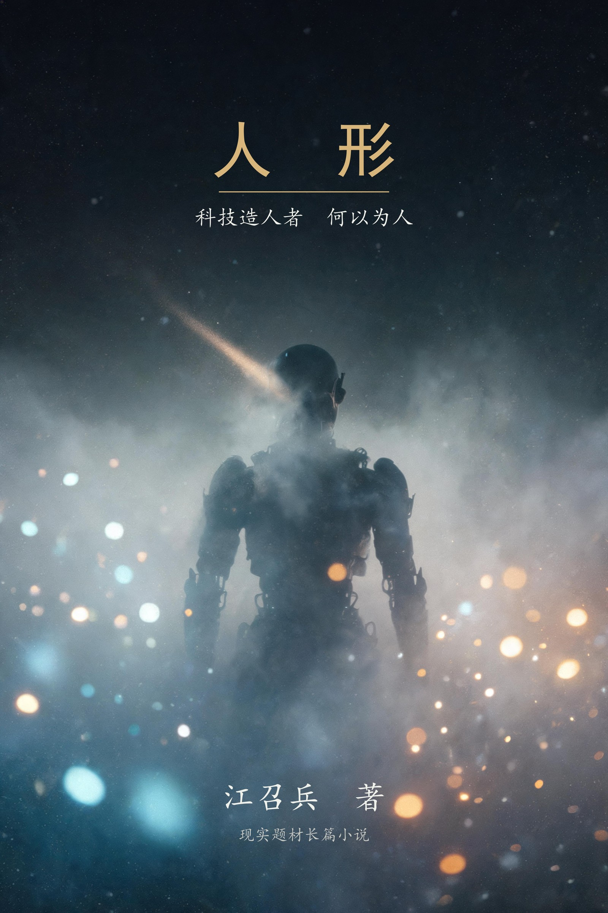

人 形
造人者 · 何以为人
江召兵 著
楔子 · 四卷二十八章 · 尾声，约十万字 · 已完稿。
留洋博士顾长风，造人形机器人，十年上市，一朝暴雷，最后在一个夜里消失，没有人知道他去了哪里；他的大学同学陈守拙，一个没出过国的"土鳖"，守着数值仿真公司算了十年航空发动机，最后风洞实验一次全对。两条路，两代人，一座城——中间是夜店的霓虹、官员的茶杯、院士的签名、讨薪的员工，和一个把谎言记了一百遍的姑娘。这是一个关于"造人"的故事，也是一个关于"人形"的故事：做人形机器人的人，把自己做成了没有人形的东西。每章独立成篇，可自目录跳读。
扉页
人 形
长篇小说
江召兵 著
风口把人吹上天，
风洞让人站稳。
内容简介
顾长风三十岁那年拿到了第一笔钱。四千一百万，每一分都干净。他回国的飞机上想的是造机器人，站在 ATM 前想的是改命。十年之后，他的公司上市了，然后暴雷了；他在宣判前夜走出夜店后门，走进一条没有摄像头的巷子，再也没有出现。
陈守拙是他的大学同学。顾长风出国那年，他留了下来，进了航发研究院，后来又自己出来，做数值仿真——给国产发动机的燃烧室和涡轮"算风"。没出过国，没融过资，没上过市。他守了十年，等一个结果：自己算出来的每一个数，和风洞里的真东西对上。
这部小说写两个人，写两种企业，也写一个时代里所有人的"形"：有人把故事讲成了真的，有人把真的事做成了没人知道的事；有人上了风口，有人站在风洞里。全书楔子、四卷二十八章、尾声，以一场无人知晓的消失开场，以一条"风洞很好"的短信收束。
关于这本书
- 体量：楔子 + 四卷二十八章 + 尾声，共三十章，约 10.2 万字。造人、人形、变形、归形。
- 写法：双线对照（资本线顾长风 / 技术线陈守拙），六线并发；一个意象系统贯穿全书——水、灯、风洞，和"四十七"。
- 读法：每章独立成篇，可自目录跳读；亦可从头读，楔子的最后一夜与第四卷的消失之夜互为回声。
作者简介
江召兵，1979年3月生，湖南郴州永兴人，博士，教授，南京欧帕提亚信息科技有限公司创始人、董事长，兼任西北工业大学、南京航空航天大学、西安交通大学外聘导师。1998年至2008年就读于中国人民解放军理工大学，先后获应用气象学学士、流体力学硕士、桥梁与隧道工程博士学位；其后在上海交通大学从事博士后研究，并赴英国南安普顿大学访学。2017年自主择业，先后创办南京欧帕提亚信息科技有限公司、湖南云数仿真信息技术有限公司和南京驭风数智科技有限公司等。
长期从事人工智能、流固耦合仿真、船舶与海洋工程及军事装备技术研究，主持国家自然科学基金面上项目等国家级项目 4 项、江苏省基金项目 1 项、科研院所外协项目 20 余项；参与南沙岛礁建设、大榭岛浮桥建设、舟山连岛大桥防撞系统等重大工程。出版专著《浮体和浮式多体系统流固耦合动力分析》《浮基多体系统水上展开的稳定性计算与试验》，发表论文 60 余篇；另著有《不确定年代的生存经济学》《史上最美数学图形》《运气工程学》与章回体历史传说《苏耽跨鹤》、现代长篇历史传说《杏花深处秣陵关》、长篇科幻历史小说《未央》。
目录
楔子 楔子 · 无人知晓
卷一 · 造人
- 第 1 章 第一笔钱
- 第 2 章 旧厂房
- 第 3 章 重逢
- 第 4 章 产业园
- 第 5 章 朋友
- 第 6 章 员工们
- 第 7 章 下场
- 第 8 章 对赌
卷二 · 人形
- 第 9 章 纸醉金迷
- 第 10 章 镇场
- 第 11 章 演示
- 第 12 章 敲钟
- 第 13 章 台下的人
- 第 14 章 蜜月与阴影
- 第 15 章 传灯
卷三 · 变形
- 第 16 章 稽查
- 第 17 章 东窗事发
- 第 18 章 鸟兽散
- 第 19 章 联合实验室
- 第 20 章 假数据
- 第 21 章 暴雷
- 第 22 章 变形记·夜场
- 第 23 章 变形记·讨薪与切割
卷四 · 归形
- 第 24 章 求救
- 第 25 章 消失（总收束三 · 上）
- 第 26 章 归案与归形（总收束三 · 下）
- 第 27 章 专项
- 第 28 章 风洞
尾声 尾声 · 十年后
楔子 楔子 · 无人知晓
监控室的灯，从装上的那天起就没关过。
三面墙都是屏幕，四十八个画面同时亮着，把人的脸照成灰蓝色。四十八台显示器一起发热，空气里浮着一层机器用旧了的气味，烟味压在上面，像积了一夜。唐铁林进来的时候，何铮已经在里面坐了快两个小时，烟灰缸里五个烟头，排成一小队。
"找到了没有？"
何铮没回头，把一段画面拖回起点："你自己看。"
画面里是夜店的后门。凌晨两点十七分，一个男人从门里出来，深色大衣，在台阶上站住，从口袋里掏手机——大衣口袋很深，他掏了两次——举起来。屏幕的光打在他的下巴上，青白色的一小块。他就那么看了一眼，又放回口袋。
然后他往巷口走，走到一盏坏掉的路灯下面，站了四十七秒。
四十七秒里，他什么都没做。只是站着，等什么人，听什么声音。然后他抬脚，往右走，走进监控的盲区。
画面停在这里。之后的一切，这座城市几百万个摄像头，没有一台再拍到过他。
"第七天了。"何铮把烟按灭，"活不见人，死不见尸。手机第二天凌晨就关了机，银行卡没动过，护照还在家，机票、火车票、酒店，一样都没有。他老婆报了警，说他一夜没回来。"
他停了一下，说："你说，一个人要是真想消失，是不是比死还容易？"
唐铁林在另一把椅子上坐下。他腰不好，坐下时用手扶了一下桌沿。他没有回答，只是看着墙上那四十八个无声的画面：舞池、走廊、电梯、停车场。凌晨的夜店里还剩最后几个醉鬼，一个女人把高跟鞋拎在手里，光着脚从舞池走出来，脚趾甲涂着暗红色的油。空调的出风口垂着一截没撕干净的胶带，风一过，一抖一抖。
唐铁林解开领口一颗扣子，又用手背试了试何铮那杯凉掉的茶，问：
"他最后见的人是谁？"
"夜店的人说，他那晚没叫任何人。一个人在卡座坐到打烊。"何铮笑了一下，"喝的矿泉水。"
"矿泉水？"
"嗯。一个人，跑到那种地方，喝了一晚上矿泉水。"
唐铁林没说话，又把那段画面看了一遍，视线停在那只举起的手机上。那个动作里有一样他暂时说不清楚的东西。不是犹豫，不是告别，是确认——一个要进考场的人，会先摸一下口袋里的笔。
"卷宗呢？"
何铮把桌上一个牛皮纸袋推过来。袋子很薄，因为里面的东西都被看过很多遍。灵犀智能，人形机器人，三年前上市，两年前开始亏，去年对赌到期，审计进场，股价跌掉了九成二。最后三个月，讨薪的员工堵过两次大门，其中一次，有人把大堂顶上"造人"两个字的灯箱拆下来扛走了。
唐铁林抽出最上面一张照片。是公司大堂，墙上那幅字被撕了一半，还剩半个"人"。
"他欠的，不止是钱。"何铮说。
门外有人敲了两下。
进来的年轻女人拎着电脑包，眼下有一圈青色，像熬了很久。何铮介绍："《财经线》的池澜，跟了灵犀三年的记者。"
池澜把电脑放在桌上，屏幕转过来。是她的稿子，标题已经排好，黑体，很大：
《人形机器人造出了人，造它的人没了人形》
"还没发。"池澜说，"我在等。"
"等什么？"
"等一个说法。"她的手指在触控板上点了一下，屏幕往下滚，"顾长风这个人，我采访过他两次。第一次是发布会，他站在台上说，我们要造出能走进千家万户的人形机器人，台下的人把手都拍红了。第二次是去年冬天，就在这家公司，他背对着窗户坐，窗外的雾霾很重，他跟我说——"
她顿了顿，像要复述一句背了很久的话。
"他说：记者，你等着看，我的机器人会走路了。说这话的时候，他桌上那台样机，一条腿是断的。"
监控画面还在转。凌晨两点四十分，夜店打烊，最后一个服务员拉下电闸。那盏坏掉的路灯忽然闪了一下，亮起来，照着那条空巷子。墙根立着一只空矿泉水瓶，瓶身上的水汽早干了，被光照得发白。
没有人。
何铮说："这个人，我们这边连案都立不了。他干干净净地消失，没有债务的痕迹留下来——不是没有债，是债都跟着他一起不见了。"
"一个人消失得这么干净，"唐铁林慢慢地说，"只有两种可能。要么他死了，要么——"
他指了指屏幕上那个走进盲区的背影。
"他把这一天，排练了很久。"
池澜看着那个背影，忽然说："我见过他第一次拿到钱的样子。那年灵犀刚成立，开发布会，散场后他站在路边等车，整个人都在发光。我当时想，这个人真干净。"
她合上电脑，金属搭扣"啪"地响了一声。屏幕上最后停着的，是当年发布会上的他——白衬衫，双手撑在讲台上，领带打得一丝不苟。
"现在没了。人没了，干净也没了。"
唐铁林把目光从屏幕上收回来，说："从第一笔钱开始查。"
"第一笔钱。"池澜重复了一遍，像在嚼这四个字，"对。都从那儿开始。"
何铮翻开另一份材料，声音低下来："第一笔钱，四千一百万。十年前，打到他账户上的。打钱的人是谁，现在都没查透。中间过了几道手，一道比一道干净，像把水倒进水里。"
"查账的人说，那笔钱像一颗种子。"他接着说，"后来灵犀长出来的每一根枝、每一片叶子，账面上都连得起来。可连起来一看，没有一根是真的。假数据、假交付、假利润、假故事。十年，他造了一棵全须全尾的假树。"
唐铁林没说话。他想起很多年前，自己刚干纪检的时候，老处长教他的一句话：案子不怕大，怕的是假。假的东西看着完整，一碰就碎，可你要先找到碰它的地方。
"他还有个习惯。"池澜忽然开口，"我第一次采访他，散场后他请我吃面。一碗阳春面，他吃得很慢，把汤都喝完了。他说，他这辈子的第一碗面，是创业那年，一个老朋友请的。他说这话的时候，眼睛里有东西。"
她顿了顿：
"我当时以为那是怀旧。现在想想，那也许是别的。"
唐铁林问："什么别的？"
"求救。"池澜说，"一个人到了那样的位置，还肯跟记者讲一碗面——他心里还留着一点从前。可惜，那点从前，他后来也不要了。"
池澜重新打开电脑，把稿子往前翻。屏幕上的字一行一行地亮着，都是她三年里记下来的：敲钟那天他站在台上笑；审计进场那天他在办公室把茶杯捏裂；讨薪的员工堵门那天，他从地下车库走的，绕了半座城。还有最后一段，是她今天凌晨刚写进去的——夜店，矿泉水，坏路灯，四十七秒。
"我的稿子，"她说，"本来只差一个结尾。现在，结尾自己来了。"
唐铁林看了看表。凌晨三点过五分。监控室外的走廊很静，静得能听见水管里水流动的声音。
"何铮，"他说，"天亮以后，把十年前产业园招商引资的全部档案调出来。从顾长风认识的第一个人开始，一个一个捋。"
"第一个人？"
"对。不是秦远山。是更早的——给他递第一张名片的人。"
何铮愣了一下，随即在烟盒里摸出一支烟，没点，就那么在手里转着："您是说，这案子，得倒着查？"
"不是倒着查。"唐铁林说，"是从他还有人的样子的时候查。人是怎么一点一点没的，得看清了，才能知道他最后把自己弄丢在哪一步。"
何铮把烟放回烟盒，忽然说："老唐，你说，他到底是逃了，还是死了？"
"重要吗？"
"不重要。"何铮说，"重要的是，查清楚一个人，是怎么走到这一步的。"
唐铁林点点头。他掏出手机，在备忘录里打了四个字，又删掉了。那四个字，后来谁也不知道是什么。
天亮之前，池澜先走了。她还要回去改稿。走到门口，她回头说了一句：
"两位，如果有一天你们找到他了，替我问一句话。"
"什么话？"
"那碗面，"池澜说，"他还记得是谁请的吗？"
门关上了。走廊里的脚步声远了。
何铮把烟点上了。火星在暗处一明一灭。他说："老唐，你说这案子，将来要是写出来，算什么？"
"算一个提醒。"唐铁林说，"提醒后来的人：风口上的人，都是先把自己吹起来的。"
"把自己吹起来？"
"对。"唐铁林把视线从屏幕上挪开，看着何铮，"人形机器人，造的是人。可造它的那个人，是先从自己的心里，把'人'字拆下来，一块一块，抵押出去的。抵到后来，账上全是他，人堆里没有他。"
何铮抽了口烟，没说话。烟头的火光在他指间抖了一下。
"池澜那篇稿子的标题起得好。"唐铁林慢慢地说，"机器造出了人。造它的人，没了人形。"
监控画面还在转。凌晨三点十分，四十八块屏幕上，这座城市睡得很沉。只有一个画面是动的：那盏坏掉的路灯又闪了一下，亮起来，又灭了。
路灯又灭了。
监控室恢复安静，只剩四十八个画面无声地亮着，像四十八只不肯闭上的眼睛，盯着这座城市的凌晨。
（楔子完）
第 1 章 第一笔钱
第 2 章 旧厂房
顾长风看了七处厂房。
中介是个四十来岁的男人，穿着不合适的西装，袖子长出一截，商标还缝在袖口上。他领顾长风看了写字楼、看了仓库、看了两处"产业园区"——说是园区，其实就三栋楼，楼顶的牌子新得反光。顾长风都没说话，只是一间一间地看，看完问一句：层高多少，电够不够。
第八处，在城郊。原来是家纺织机械厂，破产三年了，厂区里草长得有半人高。中介捏着钥匙，站在锈掉的大铁门前，有点迟疑："顾总，这地方……破。"
顾长风自己推开了门。门是凉的，锈屑沾在掌心，蹭出一层褐色的粉。
门轴响了一声，很长的、铁与铁摩擦的声音，一声拖长的叹息。阳光从顶棚的破洞里漏下来，一道一道，落在水泥地上，落在生了锈的行车上，落在墙角的野草上。空气里有铁锈味、机油味，还有一种陈年的棉花味。
他站在门口，回头对中介说："就这儿。"
"这儿？"
"高，亮。"顾长风伸手比了一下顶棚，"像硅谷的车库。"
中介没听懂，但听懂了"就这儿"三个字，立刻从包里往外掏合同。
签完合同那天，顾长风带着两个人过来看房。韩仲原，电机与控制出身，和顾长风同一年出去的，在加州一个机器人实验室待过；魏子钦，机械结构，博士学位证上盖的是德国一所大学的章。三个人站在空荡荡的车间里，影子被顶棚漏下来的光切成几段。地上一摊干了的水渍，边缘泛着碱花。
韩仲原说："这地方，能装机器人，也能拍恐怖片。"
魏子钦绕了一圈回来，指着地面一处凹陷："这里得垫平。行车拆掉能卖废铁，抵两个月的电费。"
顾长风说："先把牌子挂了。"
牌子是块旧木板，魏子钦开车去城里的广告店，让人用红漆写了四个字：灵犀智能。挂到门楣上的时候，一块漆没干，顺着木板淌下来，淌成一道红印——一道伤口，半条舌头。
晚上，三个人坐在车间里吃盒饭。韩仲原的筷子停在盒饭上方，问："为什么叫灵犀？"
"李商隐。"顾长风用筷子在空中点了点，"'心有灵犀一点通'。犀牛角里那根白线，两头通。人形机器人，就是要机器和人心通上。"
"洋气点说，"他换成了英文，眼睛亮起来，"two minds, one heartbeat."
韩仲原和魏子钦对看了一眼，谁也没说话，低头扒饭。车间太安静了，扒饭的声音都被放大，像在嚼碎什么坚硬的东西。
第一台样机，是来年的开春动的手。顾长风去美国跑了一圈，订电机、订减速器、订一批批的零件，钱一笔笔从账上流出去。等到零件都到齐，三个人加上新招的两个工程师，在车间里搭了一条二十米长的长桌，桌上铺满零件、图纸和吃剩的泡面桶。
那两个新招的工程师，一个姓彭，一个姓罗。小彭是刚毕业的硕士，面试的时候被顾长风一句话留住："来了就是创始团队，期权一起分。"小罗三十出头，从一家大厂辞职，妻子刚生了孩子，辞职的事是瞒着家里先斩后奏的。
那年的冬天格外冷。车间里没有暖气，他们从旧货市场淘回来两个电暖器，一开就跳闸，只能轮流开。冷得不行的时候，五个人就围在样机旁边，说样机跑起来发热，权当烤火。韩仲原管这叫"向未来取暖"，说完自己先笑了，哈气在空气里白成一团。
吃饭是大事。公司账上的钱，一分一分都花在刀刃上，唯独伙食不能太差——顾长风说，人可以穷，但干活的人不能饿。他定了规矩，每天晚上加班，盒饭加一个荷包蛋，蛋钱从他自己的工资里扣。小彭后来跟人说，他在灵犀吃过的荷包蛋，比读研三年加起来都多。
样机做了四十七天。
第四十七天夜里，魏子钦拧上最后一颗螺丝，把电闸一合。那台东西抖了一下，然后抬起右臂，僵硬地、一顿一顿地，挥了一下。
五个人都愣住了。
那是一条机械臂。黑色的铝合金骨架，关节处露着线，头顶还悬着一束没来得及收进躯干的排线，远远看去，像个被提起来的木偶。它挥手的动作很慢，每一下都像在认真地、艰难地完成一件大事。
韩仲原第一个笑出来："它这哪是挥手，这是招财猫。"
"是求救。"魏子钦说。
顾长风没说话。他绕着那台样机走了两圈，然后在它面前蹲下来。机械臂还在挥，一下，一下。他伸出手，在它"手"的位置悬空停住，没有握上去。
"你们看它。"他说，"它知道自己不该这么丑，但它没有别的选择。它还是挥了。"
那天夜里没有人睡觉。他们把机械臂的视频发给投资人，发给朋友圈，发给所有能发给的人。凌晨两点，韩仲原在角落里给家里打电话，声音压得很低："妈，我做出来了。丑是丑了点……"
顾长风躺在行军床上，听着。行军床是二手的，中间塌下去一块，人躺上去，陷进一张网里。床脚下垫着两块红砖。墙角点着蚊香，烟笔直地往上走，走到一半，被顶棚漏下来的风拦腰折断。
他在这张床上睡了三个月。
夏天，雨多。蝉在厂房外的野草里叫，一声长，一声短。旧厂房顶棚的漏洞不止一个，雨大的时候，屋里能下小雨。他们从食堂借了六个脸盆，哪里漏就摆哪里。雨夜，车间里"嗒、嗒、嗒"地响，水一滴一滴砸进盆里。顾长风躺在行军床上数水滴——他数过，那个漏点每分钟滴四十七滴。不快，但从不间断，那声音就是一台看不见的钟，在走，在倒计时。
"你们听见没有？"有一夜他忽然坐起来说，"这声音像什么？"
韩仲原在半梦半醒里接话："像漏水。"
"像倒计时。"顾长风说。
韩仲原翻了个身，嘟囔了一句"有病"，又睡了过去。顾长风睁眼躺着，听那台钟走了一夜。
那台"钟"，后来成了灵犀最早的传说之一。苏晓晴入职后，把这段故事写进宣传稿，起名叫"四十七滴雨"，说那是灵犀创业精神的注脚。顾长风看过稿子，没改，也没反驳。只有他自己知道，那四十七滴雨，不是励志故事，是他在那些夜里，数过的自己还剩多少时间。
钱在账上，一天一天变少。烧钱的速度，比滴雨快得多。每滴下一滴，他都听得见。
样机验收的前一天，顾长风从城里买回来一张白纸，A3，很厚的那种。他把纸贴在车间最显眼的那面墙上，用马克笔写了三行字，每个字都很大：
造人。造钱。造命。
魏子钦站在纸前面看了半天，问："造钱我懂，造人我懂。造命——造什么命？"
顾长风把马克笔的笔帽盖上，退后一步，和他的字站成一排。
"你们以后就懂了。"他说。
魏子钦撇了撇嘴，走开了。韩仲原没走，他盯着那三行字看了一会儿，说："老顾，第一行字，我跟着你干。第二行，我也认。第三行，能不能划掉？"
"为什么？"
"造人、造钱，都是动词。"韩仲原说，"造命，听着像神仙干的事。咱们是工程师，不是神仙。"
顾长风没回答。他走过去，把那张纸的四个角，又往墙上按了按，按得很实，要把这三个词按进墙里去。
后来韩仲原想起这个下午，总会想起他说过的那句"不是神仙"。很多年以后，灵犀的机器人一台台出厂，账上的钱一笔笔进来，楼里的人一批批换。他终于明白，顾长风想造的命，既不是别人的，也不是机器的。
是他自己的。那张纸在墙上贴了很多年。后来被撕下来过，又被贴回去过；字迹被水汽洇过，边角卷起来过，但三行字一直在。最后一次被撕下来，是在很多年以后，公司暴雷的那一天。撕它的人用了很大力气，纸撕成了两半，"命"字只剩一半，挂在那儿，像半个人。
那年夏末的一个傍晚，顾长风一个人站在厂房门口。远处的城市亮起来了，一片灯海，隔着农田和铁路，另一个世界。他身后的车间里，机械臂还在充电，充电的指示灯一明一灭，绿莹莹的。
他站了很久，忽然想起一件事：他还没有给守拙打过电话。
他掏出手机，在通讯录里翻到一个名字。陈守拙。上次联系，还是三年前的同学聚会，守拙没来，托人带话说在出差。顾长风按了拨出键，想了想，又挂断了。
"改天吧。"他对自己说，"等第一台真正的人形机器人站起来，再告诉他。"
他不知道，就在此刻，几公里外的航发研究院里，陈守拙正对着一屏网格图发愁。燃烧室的网格又发散了，他算到第十一个晚上，桌上的胃药盒已经空了。
两个老同学，一个在看城市的灯，一个在看燃烧室的网格。中间隔着十年的路，和一个秋天。
第 3 章 重逢
顾长风最终没有打电话，他直接去了。
秋天的研究院，院门口两排梧桐，叶子黄了一半。门卫是个五十多岁的男人，看他的护照没看明白，看他的名片也没看明白，最后用座机往里拨了个电话，嗓门很大："陈工！门口有人找，说是你同学！"
顾长风在传达室等了二十分钟。
陈守拙从老楼里出来，远远地，顾长风差点没认出来。还是那件灰夹克，袖口磨得发白；头发比大学时长了一些，乱糟糟地往一边倒；眼镜还是大学那副，黑框的，左边镜腿缠着一圈白胶带。
"长风。"守拙叫了他一声，脸上露出点笑，不大。
"你怎么还戴着这副眼镜？"顾长风说。
"没坏，换它干什么。"
两个人在院门口站了几秒。梧桐叶落下来，落在守拙肩上，他随手掸掉，动作很自然，像掸掉一粒灰。
"吃饭去？"顾长风说，"我订了地方。"
他订的是一家西餐厅，城中心，落地窗，人均四位数。陈守拙跟着他走到餐厅门口，抬头看了看招牌，停住了。
"这儿？"
"尝尝。留学那会儿，我天天想这口。"
守拙没说话，跟着往里走。领位的姑娘多看了他一眼——不是嫌弃，是好奇，灰夹克站在水晶灯下面，像一幅画里画错了位置的东西。
落座。服务生开酒，软木塞"啵"的一声。顾长风点菜，中英文混着说，点了牛排、红酒、前菜、甜点。菜单递给守拙，守拙没接。
"有面吗？"他问服务生。
服务生愣了一下："先生，我们这是西餐厅……"
"给我下碗面，钱照收。"守拙说。
顾长风想笑，又忍住了，对服务生说："听他的。"
红酒先上来了。顾长风给自己倒上，又给守拙倒了一杯。守拙没动那杯酒，把手里的筷子放好，说："你从美国回来几年了？"
"三年。"
"做什么？"
"人形机器人。"顾长风把身子往前倾了倾，"Robot。就是那种，两条腿、两只手，会走路、会干活、能走进千家万户的机器人。We're making the next big thing, 守拙。你懂我的意思吗——下一个改变世界的东西。"
守拙听完，端起水杯喝了一口，问："烧了多少钱了？"
"天使轮刚关，四千一百万。"
"四千一百万。"守拙重复了一遍，像在核对一个数字的位数，"够你们烧多久？"
"两年。两年内，我要让第一台样机自己站起来走路。"
面端上来了。清汤，卧着一个荷包蛋，几片青菜。守拙拿起筷子，把面拌匀，热气升起来，糊了他的眼镜片。他摘下眼镜，用袖口擦了擦，说："你呢，你现在做什么？"顾长风问，"还在研究院？"
"嗯。"守拙重新戴上眼镜，"算燃烧室。"
"燃烧室？"
"飞机发动机里烧油的那地方。"守拙挑起一筷子面，吹了吹，"你坐飞机的时候，翅膀底下那两台东西，往前看，最热、最要命的部分，就是燃烧室。火焰在里面烧到一千七百度，外面是几百个大气压。火焰稳定的时候，是一朵蓝花；不稳定的时候——"
他吃下一口面，慢慢地说：
"就是一颗炸弹。"
顾长风放下刀叉，来了兴趣："所以你在算这个？"
"我在算它什么时候变成炸弹。"守拙说，"失速裕度、点火边界、火焰筒壁温，每个量都得算对。算错一个，不是产品退回去改，是一飞机人。"
顾长风端起红酒抿了一口："守拙，你这个人，十年前就这样，眼睛里只有最难的事。"
"你留学回来的人，"守拙抬起眼看他，"怎么总喜欢把简单的事说大？"
顾长风愣了一下。餐厅里的钢琴换了一首曲子，叮叮咚咚的，像水从高处落下来。他忽然觉得面前这碗面冒出来的热气，比他的红酒更有分量。
"算了，不跟你抬杠。"顾长风笑了一声，从包里掏出平板电脑，点开一份文件，推过去，"说正事。灵犀现在做整机，结构件要做静力学仿真、要做疲劳分析。我需要一家靠谱的仿真供应商。你的团队——"
"叫司南科技。"守拙说，"去年注册的，六个人。"
"六个人？"
"六个人。"守拙抽了张纸巾擦嘴，"加一台二手的服务器。"
顾长风笑了："那正好。报个价，以后灵犀的仿真单子，都给你。"
守拙放下筷子，把筷子在碗沿上搁齐，想了想，说了一个数。
顾长风以为自己听错了。那个数字，比市场价低了三成都不止。
"你疯了吧？这价连服务器电费都不够。"
"够。"守拙说，"我算过。服务器闲一天是空转，单子来了就是赚。"
"那行，回头我把合同发你。"顾长风收起平板，"不过丑话说前头，我们的进度很紧，报告要快，要好看。投资人等着看。"
"快没问题。"守拙说，"好看，我做不了。"
"什么意思？"
"算例必须真实。"守拙看着他，眼镜片后面的眼睛很平静，"签字必须负责。你要快，我加班；你要好看，另请高明。仿真是给设计兜底的，仿真先撒谎，后面就没人说真话了。"
餐厅里的钢琴停了。有那么几秒，两个人隔着那碗吃剩的面汤对视。面汤已经凉了，汤面上凝了一层薄薄的油膜。
"成交。"顾长风举起酒杯，"就喜欢你这样的。"
守拙没举杯。他把最后一口面吃完，说："带你去看看我们那儿。"
司南科技在研究院后门一条巷子里，租的是老厂区的一间仓库改的办公室。门口没挂牌，只有一张 A4 纸，用胶带粘在铁门上，写着"司南科技"四个字，字是手写的，笔画很重。
屋里摆着七张桌子，六个人，一个都不多。墙角一台机柜"嗡嗡"地响，是那台二手服务器，机箱上还贴着上一个单位的固定资产标签，被撕了一半。屋里有一股机油味，混着打印机的墨粉味。
顾长风进去的时候，最里面的桌子前，一个老人正伏在灯下画什么。他背对着门口，肩膀微微耸着，右手的铅笔在纸上走，慢，但是不停，每一笔都像在刻。
"老周。"守拙走过去，"别画了，来客人了。"
老人抬起头。六十来岁，头发白了一半，手指粗壮，指节上全是茧。他面前的桌上铺着一张图——手绘的网格图，密密麻麻的线，纵横交错，像一张摊开的渔网。
"补网格呢。"老周说，又低下头去，"就差一个网格畸变，补了三天了。"
"三天？"顾长风走过去看，"补一个网格，补三天？"
"差之毫厘，谬以千里。"老周没抬头，"飞机是坐人的。"
顾长风在办公室转了一圈。窗台上摆着一摞书，全是影印的英文文献，纸张发黄，书脊用透明胶粘了又粘；桌角一本《英汉航空词典》，翻得卷了边，边上还有红笔做的记号。饮水机旁边立着一个搪瓷缸子，掉了好几块漆。
"你们这，条件够苦的。"他说。
"不苦。"守拙给他倒了杯水，水是暖水瓶里的，瓶塞拔出来时"啵"地一声，白汽漫出来，"够用。"
顾长风端着那杯水，站在窗前往外看。巷子里有个卖烤红薯的摊子，白汽一团一团地升起来。他忽然说："守拙，我那儿缺一个懂技术的人。你来灵犀吧，给你 CTO，给你股份。"
守拙笑了。这是重逢以来，他第一次真正地笑。
"我去你那儿能干什么？你的机器人在展会上挥挥手，我的燃烧室在天上飞。都不是一路的。"
"人形机器人也是会飞的东西。"顾长风说。
"飞不起来。"守拙收了笑，"电机撑不起的，不叫飞，叫摔。"
这时候，门口进来一个姑娘。二十五六岁，马尾辫，怀里抱着一摞打印的算例，进门就喊："陈总，燃烧室那个算例收敛了，第三轮的壁温分布——"
她看见屋里站着个生人，声音刹住了，冲顾长风点了个头，快步走到自己桌前，把算例放下，打开电脑。屏幕上跳出一张彩色的云图，火焰一样红。顾长风多看了一眼——那红，比他见过的任何一张路演 PPT 都烫。
"这是叶晓舟。"守拙说，"我们这儿的流体工程师。北航毕业的，算起叶栅来，比我快。"
叶晓舟没抬头，回了句："陈总，你那不叫慢，叫稳。"
顾长风站在门口看了一会儿。姑娘的后背挺得很直，马尾随着她敲键盘的动作轻轻晃。他想起自己公司里那几位博士，此刻大概正在会议室里对着投资人讲"我们对标波士顿动力"。
"行了。"顾长风说，"不耽误你们。合同的事，我回头让法务跟进。"
守拙送他到巷口。天已经黑了，巷子里的灯昏黄，把两个人的影子拉得很长，一个朝东，一个朝西。
"守拙。"顾长风走到车前，忽然回头，"你就没想过，出来干票大的？"
"大的？"守拙把手插进灰夹克的口袋里，"把一飞机人平平安安送上天，还不算大？"
顾长风没说话。他拉开车门，坐进去，发动。后视镜里，守拙还站在巷口，瘦瘦的一个人，背后的"司南科技"四个手写字在灯下淡淡的，像随时会被风揭走。
车开出去很远，顾长风才想起来，自己忘了问守拙一件事。
那碗面，一共多少钱。
他笑了一下。后视镜里的巷口已经远了。他想，等灵犀的机器人站起来的那天，他要请守拙吃一次真正的西餐，点最贵的红酒。
他不知道，那天永远没有来。
第 4 章 产业园
灵犀搬进产业园，是第二年的春天。
园区在城东，四栋新楼，玻璃幕墙。楼顶立着几个大字，夜里亮灯，几公里外都看得见。马晓东亲自来了，指挥工人把"灵犀智能"的牌子从卡车上卸下来。新牌子是亚克力的，红字白底，和旧厂房门口那块红漆木板，已经不是同一个东西。
"顾博士，看这楼，看这地。"马晓东站在楼下，张开胳膊，"三年后，这里就是全国的人形机器人高地。"
"马局，您这词儿，像招商手册上的。"
"招商手册上的词，就是我为你们写的。"马晓东哈哈一笑，拍了拍他的后背。
马晓东四十出头，白衬衫，裤线笔直，说话中气足，走路带风。他把园区里每一家企业都当成自己的孩子：哪家缺钱，他去找银行；哪家要人，他去跑高校；哪家的老总两口子吵架，他都管。顾长风后来才知道，马晓东的办公室里有一面墙，贴满了园区企业的照片，谁融资到第几轮，谁家添了设备，他都用记号笔写在照片下面，字很小，像批注。
园区里的企业，什么样的都有。有做芯片的，有做锂电的，有做工业软件的，还有一家做康复外骨骼的，老板姓常，五十多岁，见了谁都说"咱们抱团取暖"。常老板的公司比灵犀早两年入园，如今一年营收一千来万，不温不火。有次园区开会，他坐在顾长风旁边，小声说："小顾，进了这园子，眼睛得放亮。有的是真金白银，有的，是金箔。"
顾长风当时没往心里去。后来，常老板的公司因为补贴申报材料造假被查，老板跑了，公司散伙。园区墙上的照片，马晓东一张一张摘下来，摘到常老板那张，他站在凳子上，手举了半天，没摘下来。
最后是顾长风帮他摘的。两个人一句话都没说。
搬进园区的第一个晚上，顾长风失眠了。
他睡在园区给企业配的临时宿舍里，单人床，白墙，窗外就是园区的路灯。灯太亮，他拉上窗帘，又拉开。旧厂房的夜里是黑的，黑得能听见漏雨；这里的夜不黑，是那种被灯光泡着的、半透明的夜，像永远有事情正在发生。
他躺在床上数数。数到四十七，忽然想起旧厂房里每分钟四十七滴的雨。他坐起来，在黑暗中听了一会儿。什么声音都没有。没有雨，没有样机嗡嗡的电流声，也没有自己的心跳。
他心里慌了一下。他说不清为什么。一个人突然发现，自己惦记了很久的东西，原来已经搬走了。
第二天，他给守拙打了个电话。
"搬完了。"他说，"园区条件好，你来参观。"
"好。"守拙说，"下周。"
电话挂了。顾长风看着通话记录上的名字，想再拨过去，说点什么，最后没拨。他想说：旧厂房的那张白纸我没带走。想说：这地方夜里没有声音。想说：不知道是不是搬家搬的，我总觉得少了点什么。
这些话，一句都没说。
他后来想，人和人之间，很多话就是这么没的——不是吵没了，是攒着攒着，就没了。
秦远山是四月中旬来的。
通知提前三天就到了：副市长秦远山同志，将于四月十六日上午十时，莅临灵犀智能调研指导。园区管委会来了四个人，把路线走了三遍；马晓东带着顾长风彩排了两遍，怎么站位、怎么握手、汇报控制在几分钟，都排得明明白白。
"秦市长话少。"马晓东叮嘱，"你汇报，他听。别冷场就行。"
十六号早上，顾长风换了新衬衫，在镜子前打了三遍领带。第一遍紧了，勒脖子；第二遍歪了；第三遍，他忽然想起一个说法：领带打得越好，说明你越紧张。他把领带松开，重新打，这回故意留了一点松。
上午十点，车队到了。
秦远山五十出头，中等身材，灰西装，下车时先理了理袖口。他走路不紧不慢，身后跟着秘书、随行、园区的人，一大群人，脚步都压着他的拍子。
顾长风上前握手。秦远山的手不凉不热，握了不到两秒，就松开了。顾长风的手指还保持着握手的形状，停了一秒，才收回来。
"开始吧。"他说。
顾长风开始汇报。他讲灵犀的定位、技术路线、样机进度。讲到一半，他注意到秦远山一直没看他——副市长在看墙上的图，看样机，看车间，偶尔点一下头，像在看一件尚未定价的商品。
汇报四十分钟。顾长风全程站着，不敢坐，也没人让他坐。讲到后面，他听见自己的声音有点发飘。四十分钟里，秦远山只说了三个字，还是分开说的：
"嗯。"
"继续。"
"好。"
汇报结束，顾长风衬衫的后背已经湿透了。他以为是热的——四月的天，还没到热的时候。
秦远山走到样机前，看了十秒钟。机械臂正在演示挥手。副市长问："什么时候会走路？"
"两年。"顾长风说。
"两年。"秦远山重复了一遍，手指在样机的底座上点了两下，忽然转过头看他，"你怕我？"
顾长风摇头。
"那你的腿，别抖。"
顾长风低头，看见自己的右腿在抖。裤管在轻轻晃，像有一只看不见的手，在下面拨。他把手插进裤兜，隔着布料按住那条腿。按不住。
满屋子的人都在笑。笑声很轻，很整齐，像排练过。
秦远山没有笑。
参观结束，众人到会议室座谈。长桌，白瓷茶杯，每个人的位子前都摆好了。窗台上摆着一排绿萝，叶子擦得很亮，一片灰尘都没有。秦远山坐下来，忽然端起茶壶，给在座的人斟茶。
他斟得很慢。手腕稳稳的，茶水从壶嘴里出来，一条细线，注入杯中只有极轻的水响，刚好七分满，一滴不洒。一圈下来，十二个人，十二杯茶。最后，他给自己斟了半杯。
"园区的企业，都是孩子。"秦远山放下茶壶，说了一句。
这是整场调研，他说过的最长的一句话。
散会后，马晓东追着顾长风到楼道里，兴奋得脸发红："顾博士！秦市长亲手给你斟茶！这是什么待遇，你知道吗？上次省里的考察团来，他都没斟！"
马晓东又凑近一步，压低声音："顾博士，你不知道，秦市长这个人——"他竖起一根手指，"他办公室的书架上，最底下一格，放着一本《曾国藩家书》。翻得书皮都快掉了，是他父亲留下来的，扉页上写着六个字：多念人好，多想己过。市里谁都知道，那是秦市长的传家宝。"
顾长风摸了摸那杯茶，已经凉了。
"马局，"他说，"我腿抖的事，全园区是不是都知道了？"
"嗨，那算什么事。"马晓东拉过他的手，用力握着，"你把心思放正。你们就是园区的未来，知道吗？我马晓东把话放这儿——只要我还在招商局一天，灵犀的事就是我的事。"
顾长风看着马晓东。这个人的眼睛是热的，手心是热的，连说话喷出来的气都是热的。
当晚，秦远山来调研的消息就传遍了园区。七点半，顾长风接到了三个电话，全是园区里的老总，语气一个比一个亲热："顾总，秦市长都去你们那儿了，厉害啊。改天坐坐？"顾长风客气地应着，挂了电话，在通讯录里把这三个号码都标成了星标。
他心里清楚，这三通电话，和秦远山那杯茶，是同一件事的两面。茶是斟给他的，也是斟给看的。从今天起，他顾长风在园区里，就不只是"做机器人的那个海归"了。他是"秦市长亲手斟过茶的人"。
这个头衔，后来比灵犀的任何一轮融资都管用。
那天晚上，顾长风一个人回了趟旧厂房。
厂房已经空了。行军床拆了，脸盆收了，墙角还留着六个盆底压出来的圆印。墙上的白纸还贴着——"造人、造钱、造命"，字迹淡了一些。他站在那张纸前面，忽然想起秦远山斟茶的手。手腕那么稳，七分满，一滴不洒。
他回到园区，从开水间翻出一个茶壶，学着斟。水洒了一桌子。
"什么了不起的。"他小声说。
他试了七遍。前五遍，水不是满出来，就是断在半空，滴滴答答，下小雨。第六遍，他放慢了手腕，水线细下来，稳稳地流进杯里——六分满，差一点。第七遍，他找到了那个角度。七分满，一滴不洒。
他把茶壶放下，忽然觉得没意思。
他不知道自己为什么生气。后来他才明白，他生气的不是斟茶，是另一件事：他活了三十一岁，第一次见到一种东西——钱买不到的东西。它叫权力。它就在那个男人斟茶的腕子上，稳稳的，七分满，一滴不洒。
而他，学了一晚上，才学会倒水。
窗外，产业园的灯全亮着，"灵犀智能"四个字在夜色里发光。顾长风站在窗前，看见自己的脸映在玻璃上。玻璃外面，是整个园区的灯火，一盏一盏排着队，去照亮一个他还没看见的地方。
夜深了。楼道里还有人走动，是隔壁公司加班的工程师，脚步声匆匆的，像在追什么。顾长风听了一会儿，忽然想起旧厂房里韩仲原打呼噜的声音。那时候，夜里也不安静，可每一种声音，他都认得。
这栋楼里的声音，他一个都不认识。
他忽然想：被这样一个人看中，是好事。
后来的很多年，每当有人问他，你是什么时候开始变的，他都会想起这个晚上。但他从不承认。他对别人说：我从来没变过，我只是长大了。
第 5 章 朋友
孙一鸣是五月份出现的。
介绍人，是去年庆功宴上那个递名片的"朋友的朋友"。酒局设在城南一家私房菜馆，包间里六个人，顾长风坐主位，孙一鸣坐他左手边。
"顾总，"孙一鸣举杯，"久仰。"
私房菜馆藏在城南的一条巷子里，门脸不起眼，进去才知道别有洞天：院子，回廊，包厢，服务员走路都没有声音。进门处供着一尊关公，香炉里插着三炷香，烟很细。顾长风听说过这家馆子——不对外，只接熟客。今天是孙一鸣订的。
第一轮酒过，孙一鸣给他夹了一筷子菜，放在他面前的骨碟里，筷子尖没沾到碟底，说："顾总，我这人没别的本事，就是认识的人多。认识的人多了，就爱琢磨人。你这面相，是做大事的人。"
"孙总说笑了。"顾长风说，"我做的，就是个机器人。"
"机器人好啊。"孙一鸣笑，"未来的事，都是机器人的。我别的忙帮不上，帮顾总牵牵线、铺铺路，还是可以的。"
顾长风举起杯，两人碰了一下。杯沿碰杯沿，发出一声脆响。顾长风注意到，孙一鸣的酒杯，永远只低他半个杯沿。
这个人四十岁上下，寸头，微胖，穿一件中式对襟衫，手上盘着一串珠子，包浆厚得发亮，说话的间隙，珠子一颗一颗从指间滑过去，声音很小。他说话的声音不大，但每个字都往人耳朵里钻；他笑的时候眼睛眯成一条缝，嘴角先动，眼睛后动——像笑是分两步完成的。
席间，孙一鸣讲了个故事。说他当年在深圳，帮一个做手机的老板牵线。老板穷得发不出工资，他牵了三个投资人，一年后，那老板上了新三板。讲完，他摆摆手："都是过去的事，不提了。"
满桌人都听进去了。顾长风也听进去了。这个人让他想起小时候见过的"牙人"——旧社会站在集市中间，两头牵线，抽头为生的人。只是现在的集市，换成了饭局。
"牙人这行当，自古有之。"孙一鸣像看穿了他的心思，慢悠悠地说，"《周礼》里就有，叫'质人'。汉代叫'驵侩'。你看，几千年了，这行当没断过。为什么？因为人只要做生意，就得有人中间站着。中间站久了，两头的价，就都装在中间人的肚子里。"
他端起茶，吹了吹：
"顾总，你说，是站两头的人厉害，还是站中间的人厉害？"
一桌子人都笑了。顾长风也笑了一下。他当时没听懂这话里的意思。很多年后，他在看守所外面的台阶上等一个消息，忽然想起这顿酒，才明白：站中间的人，两头都是他的。
散席时，孙一鸣把顾长风拉到一边，低声说："顾总，你这样的人，我见过。有本事，有脾气，就是——太干净。"
顾长风看着他。
"别误会。"孙一鸣笑了，还是那个分两步的笑，"我的意思是，你只管造你的机器人。脏活累活，朋友帮你扛。"
从那天起，孙一鸣成了灵犀的常客。
他一个月里，帮了顾长风三件事。
第一件，搭线融资。他介绍了一家南方的投资机构，A 轮的意向书，两个月就签了。顾长风算了算，省下的时间，值一台样机。
第二件，介绍客户。一家做养老地产的公司，看中了灵犀的"陪伴机器人"概念，订了二十台。那二十台后来改了七遍需求，一台也没真正交付，但合同是真的，预付款是真的。
签那二十台合同的那天，孙一鸣带着顾长风去了趟那家养老地产公司。老板姓赵，六十多岁，头发梳得一丝不苟，办公室墙上挂着一幅他自己写的字："老有所依"。
赵老板带着他们参观样板间。走到"智能养老示范房"门口，赵老板停下，指着房间里的空位说："顾总，你们那机器人，将来就放这儿。老人一进门，它说一句'欢迎回家'，老人心里就暖了。"
顾长风问："赵总，我们的样机您看过演示了吗？"
"看过录像。"赵老板摆摆手，"样子有了就行。我这项目，要的是概念。"
回程的车上，孙一鸣说："怎么样，顾总？这单子，三天就能签。"
顾长风望着车窗外，说："他要的是概念，不是机器人。"
"对啊。"孙一鸣笑了，"这不正好吗？他出钱买概念，你拿钱造机器人。两全其美。"
顾长风没说话。车开进隧道，灯光明灭。他忽然觉得，自己和那位赵老板之间，隔着的不是一份合同，是一整个货不对板的未来。
但合同，他签了。
第三件，引荐圈子。顾长风开始出现在一些饭局上：有券商，有基金，有做产业园的，有"上面有人"的。每个局里，孙一鸣都坐中间，像一枚活动的扣子，把所有人扣在一起。
那段时间，顾长风每天晚上回到家，都要把手机翻出来，看孙一鸣有没有发消息。
不是等具体的什么事。是等一种感觉——等下一扇门，自己开。
他发现自己上瘾了。融资快，订单快，圈子越滚越大，快得像坐了火箭。他半夜醒来，第一件事是摸手机；开会时手机震一下，心就跟着跳一下。他不知道自己等的是什么，只知道身体里有个东西张着嘴，一天不喂，就一天不安生。
喂它的东西，叫"下一件"。
顾长风不得不承认，这个人有用。他像一把万能钥匙，你把他揣在兜里，走到哪扇门前都不用慌——门总会开的，只是你不知道，开门的代价是什么。
沈曼提醒过他一次。
那天顾长风半夜回家，一身酒气。沈曼给他倒蜂蜜水，等他喝完，才说："那个孙一鸣，我见过他一次。他看人的眼神，像在算账。"
"人家是干这行的。"顾长风说，"不算账算什么。"
"他看你的眼神，也算账。"
顾长风没接话。他把杯子放在床头，背对着她躺下："你懂什么。创业的事，不是你们单位那套。"
沈曼没再说话。她关了灯。黑暗里，他听见她在旁边翻了个身，很轻，像是不想让他听见。
很多年后，他坐在空无一人的客厅里，想起这个夜晚。沈曼说对了。孙一鸣看他，从头到尾，都在算账。
而他说"你懂什么"的那个晚上，是他第一次，也是最后一次，把她的提醒当成耳旁风。
那之后，孙一鸣再来公司，沈曼再没提过一个字。她只是每次等他半夜回来，把门厅的灯留着。那一盏灯，亮了很多个深夜，直到有一天，她不再留了。
六月底的一天，孙一鸣提着两瓶酒来公司。
"茅台，朋友送的。"他把酒放在顾长风桌上，"给你了。你这两年，白头发都熬出来了。"
两个人聊了一个小时。孙一鸣问样机，问融资，问家里，问沈曼，问得细，像真的关心。临出门，他忽然想起来似的，从包里掏出一份文件。
"长风啊，有个事。"他有点不好意思地笑，"我帮你跑了这几个月，几个兄弟跟着忙前忙后，没日没夜的。大家伙儿想着，在灵犀……也占点小股。不多，一点点。就当是一起干。"
顾长风接过文件。是一份期权认购协议。价格低得不像话——每股的价格，只有上一轮融资估值的十分之一。
"这价格……"顾长风说。
"自家人，走内部价。"孙一鸣把笔递过去，"长风，咱们这关系，协议就是个形式。"
顾长风接过笔，看了一秒笔尖，才落下去。
签字的时候，他发现自己没有抖。第 4 章那支管委会的签字笔抖过，现在这支不抖。他后来想，人第一次做一件心里发虚的事，手会抖；第二次，就不会了。
签完字，他在心里过了一遍：帮了这么多忙，给点股份怎么了？朋友嘛。再说，期权这东西，公司做不起来，就是一张废纸；公司做起来了，多几个人分蛋糕，天塌不下来。
那天晚上，他在书房里坐到很晚，翻来覆去地想这件事。书房里只开着一盏台灯，光聚在稿纸上，四周暗下去。他把想说的话都写在纸上——给谁看呢？给自己看。他写了整整一页稿纸：
"第一，孙一鸣不是坏人，他帮的忙都是实打实的。第二，价格是低了点，但那是内部价，说出去也解释得通。第三，我顾长风不是忘恩负义的人，朋友帮我，我帮朋友，天经地义。第四，一份期权而已，动摇不了什么。第五……"
写到第五，他写不下去了。他发现前四条全是解释，没有一条是"我觉得这件事是对的"。
他把那页稿纸撕了，撕得很碎，扔进垃圾桶。然后他端起酒杯，对着窗外黑漆漆的夜，说：
"一杯酒而已。"
窗外没有回音。只有产业园的路灯，一盏接一盏地亮着，排着队，去照亮一个他还没看见的地方。
那份期权协议，被他锁进了办公室的抽屉。抽屉里很空，只有那支签字的笔。
他不知道，很多年后，就是这份"形式"，会变成孙一鸣手里的第一张牌。而"协议就是个形式"这句话，还会在这座城市里，被不同的人，用不同的语气，重复很多很多次。
每一次，都有人信。
而当天晚上，孙一鸣回到家里，从包里拿出那份协议的照片，放大，看了一遍顾长风的签名。他把照片放到最大，签名占满整个屏幕，笔画的毛边都看得清，顾字起笔重，风字收笔轻，长字一捺拖出去，像一根放出去就不打算收回来的线。他看得很慢，一笔一笔地看。
孙一鸣把照片存进一个加密的文件夹。文件夹的名字，叫"灵犀"。
他点开另一个文件夹，里面还有几张照片：有签协议时顾长风的手，有那支笔，有办公室抽屉半开的样子。他一张一张看过去，然后关掉电脑，洗了个澡，睡得很早。
明天，还有下一个饭局。
第 6 章 员工们
苏晓晴是第五个进公司的。
面试那天，她穿一身职业装，简历做成了 PPT，印在光面纸上。顾长风翻了翻：新闻系毕业，在一家财经媒体干了两年，写过三十七篇企业报道。
"为什么来灵犀？"
"因为您缺一样东西。"苏晓晴坐得笔直，"缺一个会讲故事的人。技术你们有了，钱你们有了，但外面没人知道你们。顾总，产品不会自己说话，得有人替它说。"
顾长风笑了："我们韩总天天讲故事，讲得我都睡着了。"
"韩总讲的是英文故事，讲给投资人听的。"苏晓晴看着他，"我要讲的，是中文故事，讲给十四亿人听的。"
她当天就入职了，职位：公关总监。办公室里没有她的工位，她自己搬了张桌子，贴着窗户，说光线好的地方，人容易相信光。她把桌面先擦了三遍，才把电脑放上去。
钱小信来面试是另一个天气。下着雨，他骑共享单车来的，裤腿湿到膝盖，进门先道歉。他坐过的椅脚边，地板上洇了一小滩水。算法岗，笔试考了两个小时，他交卷的时候，卷子背面写满了批注——不是不会做，是他觉得题目出得不够好，把改进方案写在了后面。
顾长风问他："你期望薪资多少？"
"够租房吃饭就行。"钱小信说，"我要期权。"
"为什么？"
"我算了，靠工资，我在这座城市买不起房。但灵犀要是成了，期权能。"他顿了顿，"顾总，我相信人形机器人。我从大学就开始做这个，我导师说这个方向冷，我说没关系，冷的地方才没人跟我抢。"
顾长风在那份 offer 上签了字。
孟大勇是猎头挖来的。这个人四十岁，干过十三年的销售，卖过保险、卖过保健品、卖过大型机械。面试时顾长风问："机器人还没量产，你怎么卖？"
孟大勇说："顾总，这个世界上，梳子都能卖给和尚。东西在手里，怎么卖是本事；东西还在图纸上，怎么卖才是大本事。"
"那你说，咱们的机器人，卖给谁？"
"卖给相信的人。"孟大勇说，"等它走路的人，比它本身值钱。"
郑一苇没面试。他是韩仲原推荐来的，说是以前实验室的师弟，算法一般，但手巧，什么演示到他手里都能调得服服帖帖。顾长风见了他一面，聊了十分钟，就收了。
那十分钟里，郑一苇说了四句话。
第一句，自我介绍："我叫郑一苇，普通本科，没读过硕士。"
第二句，谈算法："算法我一般。真的。别对我有期望。"
第三句，谈自己："但我能把一台跑不动的机器，调到在台上跑完三分钟不出事。"
第四句，是顾长风问他"为什么来灵犀"时，他说："因为灵犀的演示，以后会越来越多。而我，会做演示。"
顾长风当时觉得，这小伙子实在。十年后，当郑一苇站在司南的机房里，听着服务器风扇的声音说出"在灵犀没人问我会不会写代码，只问我会不会做 PPT"的时候，顾长风才想起来，这个人的实在，从来都不是夸自己，是把自己看得太清楚。
看得太清楚的人，最后都会走。只是他走的时候，一声不响。
公司墙上的字，是在某个星期五下午挂上去的。红底白字："做有温度的机器人"。挂字的是苏晓晴，她指挥两个工人调了半个小时，左边高一点，右边低一点，最后量了三遍水平。
"顾总，"她站在字下面说，"以后灵犀的每一次发布会，这七个字都在您身后。"
顾长风抬头看那七个字。红底很亮，像一摊还没干的红漆。
挂字的当天晚上，苏晓晴就写出了第一篇通稿。稿子不长，一千五百字，标题叫《造人的人》。她发到顾长风的手机上，附了一句话："顾总，这是您的人设 1.0。"
顾长风在深夜读完了。稿子里的那个人，和他自己很像，又不完全是：那个人热血、纯粹、为了一个念头从硅谷回到旧厂房，那个人说"我们要造有温度的机器人"的时候，眼睛里是有光的。
读到最后一段，顾长风放下手机，在黑暗里坐了很久。
苏晓晴写的最后一段是这样的："很多人问，人形机器人有什么用？顾长风说：机器人的样子，就是我们对未来的想象。我们造的不只是机器，是一个时代的样子。"
他承认，他被自己打动了。
很多年后，池澜在调查灵犀的时候，翻出了这篇最早的稿子，把它和后来的几百篇报道放在一起对比。她发现一件事：十年里，苏晓晴讲的故事换了几百个版本，可顾长风信的那个版本，一直停在 1.0。
年底，年会。
酒店宴会厅，坐了八十多个人。宴会厅顶上吊着水晶灯，光被切成几百片，落在人脸上，人人都在发光。这一年灵犀扩到了六十多号员工，大多是年轻人，眼睛里都有光。顾长风穿上了那件最贵的西装，袖扣还是母校校徽。他上台，没带稿子。
"去年这个时候，我们五个人，在旧厂房里吃盒饭。"他环顾全场，"今年，我们八十个人。明年，我要站在这里说，我们八百个人。后年——"
他停了一下。
"后年，我们敲钟。"
掌声把屋顶都掀起来了。
台下，八十多号人，各有各的表情。前台的小姑娘眼睛亮晶晶的，举着手机录视频；财务大姐没抬头，还在对账，年会结束她还得把酒水单核一遍；销售部那桌最热闹，孟大勇已经喝上了，搂着旁边新来的实习生，一口一个"兄弟，跟着哥干，亏不了你"；数据组的几个年轻人凑在一起，小声讨论期权池怎么分。
顾长风站在台上，把这一切都看在眼里。他忽然想，一年前在旧厂房，五个人吃盒饭的时候，哪想过今天会有八十个人，八十双眼睛，八十种心思。
他清了清嗓子，接着讲。
三位博士联袂上台，PPT 做得极漂亮，全英文。韩仲原上台前把衬衫最上面那颗扣子扣上了，讲到一半，又解开了。韩仲原讲电机与控制，魏子钦讲结构与灵巧手，顾长风压轴讲愿景。讲到竞品，屏幕上打出波士顿动力的视频，机器人在雪地里跑、翻跟头、爬楼梯。
"我们，对标的就是它。"韩仲原说，"而且我们比它年轻，比它快。"
台下又是一阵掌声。只有一个人没鼓掌。
郑一苇坐在最后一排，手机亮着，屏幕上是一本电机手册的 PDF。他看得很慢，一页一页翻。旁边的人碰了碰他："郑工，鼓掌啊。"他抬起头，跟着拍了两下，又低下头去看手册。
没人知道他在看什么。他是在看那台演示样机的电机参数——上午彩排的时候，他给样机换了个动作，发现第三条轴的电机温度飙到了七十度。他问韩仲原，韩仲原说"演示嘛，跑三分钟没事"。
散场后，郑一苇一个人在后台，把样机的外壳拆开，拿测温枪对着电机量了很久。后台很静，只有空调的风声，和他拆外壳时螺丝落进铁盒里的声音，一颗，又一颗。
红色的数字跳：七十三，七十四，七十三。
他蹲在那儿，忽然觉得后背有点凉。
年会的高潮，是抽奖。特等奖是一台最新的手机，抽中的人上去领奖。但真正的"高潮"，在散场之后。
钱小信喝多了。他平时不喝酒，那天破例，因为部门里一个兄弟说："小信，你算法组今年的期权，听说按贡献分？你第一，服气吗？"
他喝到第三杯，眼圈就红了。散场时，他踉跄着穿过人群，走到顾长风面前，一把抓住顾长风的胳膊，抓得很紧，指节发白。
"顾总。"
"小信，你喝多了。"
"顾总，我信你。"钱小信看着他，眼睛红红的，舌头有点大，但每个字都很用力，"我信你。我把全部身家都押上了——不是钱，是命。我就信你这一回。"
顾长风拍了拍他的脸："回去睡觉。明天还要上班。"
钱小信被两个同事架走了。走到门口，他回过头，又喊了一声："顾总，我信你！"
声音在大厅里撞来撞去，最后散在吊灯里。
三年后，钱小信会站在法院门口，想起这个晚上。那天他抱着一个纸箱，里面装着他全部的家当。他会蹲在地上，哭出来。哭的不是钱，是这句话。
当然，那是三年后的事。这一晚，没人知道。
年会散场的路上，苏晓晴和顾长风并排走。她忽然说："顾总，我给您想了个外号。"
"什么？"
"顾布斯。"她笑起来，"乔布斯造手机，您造人。都是改变世界。"
顾长风皱了皱眉："不好。乔布斯死了。"
"那……中国马斯克？"
顾长风想了想。车灯从他脸上扫过去，他眯起眼睛。
"行。"他说，"就这个。"
很多年以后，当"中国马斯克"四个字出现在每一篇关于灵犀的报道里，也出现在每一次对他的审判式书写里，顾长风会想起这个夜晚。一个秋天的晚上，产业园的路灯下，一个叫苏晓晴的女人，用四个字，给他起了一个他用了十年、也还了十年的名字。
第 7 章 下场
陆砚秋第一次来灵犀的那天早晨，起得比平时早半个小时。
他住在城东一套老小区的两居室里，住了十二年。他先烧了壶水，把昨天洗好的浅蓝色衬衫从阳台上收下来，用熨斗熨平——尤其是领口和袖口，熨了三遍。熨斗压下去，"嗤"地一声，白汽腾起来。然后他蹲在楼下，给电瓶车擦灰。擦得很细，车把、车座、挡泥板，连车筐里的缝隙都拿抹布角塞进去擦。
邻居大妈路过，说："陆处长，又擦车啊。这车都骑几年了，换个新的呗。"
"还能骑。"他笑了笑，"车跟人一样，干净了，就有精神。"
这个笑，他说了很多年，嘴角的弧度都是练过的。
七点半，他骑着电瓶车出门。车上挂着公文包，包里装着两份材料：一份是灵犀去年的申报书，边角卷了，被他用回形针别得齐齐整整；一份是他自己用三个晚上改出来的批改稿。
他想好了今天的每一句话。
陆砚秋第一次来灵犀，是骑电瓶车来的。
那天下午，一辆旧电瓶车停在灵犀楼前，车上下来一个四十岁的男人，浅蓝色旧衬衫，袖口磨得起了毛，裤脚用夹子夹着。保安以为他是来送件的，拦了一下。
"我是市科技局的。"男人掏出工作证，"陆砚秋。高新处处长。"
保安愣了一下，放行。
顾长风在会议室见了陆砚秋。会议室里开着空调，顾长风那杯茶还没凉，陆砚秋的水杯是他自己带的，一个玻璃罐头瓶。两个人握了手，顾长风注意到对方的手很瘦，指节突出，像一双常年写字的手。名片递过来，头衔印得端正：市科技局高新技术处处长。博士，名校，选调生。
"陆处，大驾光临，有失远迎。"顾长风说。
"别客气。"陆砚秋坐下来，推了推眼镜，"我这个人，不喜欢那些虚的。"
聊了四十分钟。陆砚秋问得很细：灵犀的技术路线、研发投入、专利情况、申报过哪些项目。问完，他合上笔记本，说："你们这种企业，应该申报市里的重点研发专项。材料你们会写吗？"
"写过两次，都没中。"
"那我帮你们看看。"陆砚秋说，"我干过三年项目评审。"
顾长风把去年的申报材料发给他。三天后，陆砚秋回了一封邮件，密密麻麻的批注——不是客套话，是真刀真枪的修改意见，从题目到预算，从技术路线到预期成果，改了四十多处。顾长风看了一遍，心里暗惊：这个人，笔头是真硬。
两个月后，项目中了。市重点研发专项，四百万。
顾长风在电话里感谢陆砚秋。陆砚秋说："这是你们应得的。材料好，谁评都一样。"
客客气气，滴水不漏。
接着，陆砚秋又牵线一个小订单。市里一个部门的服务大厅要两台引导机器人，预算不大，二十来万。陆砚秋打了两个电话，事情就成了。
"陆处，欠您一顿饭。"顾长风说。
"不吃饭。"陆砚秋说，"你们把项目做好，就是对我工作最大的支持。"
顾长风放下电话，对韩仲原说："这个陆处，有点意思。"
"怎么个有意思？"
"看着清高。"顾长风想了想，"其实也下场了。帮我们写材料、牵订单——不就是下场吗？只是他帮的忙，都太小。四百万的项目，二十万的订单，对我们来说，杯水车薪。"
"你的意思是……"
"我的意思是，这个人，想当掮客，又放不下身段。"顾长风摇摇头，"书生。读书读多了，做事就讲究个名分。帮了忙，还装得跟没帮一样。这种人，成不了大事。"
韩仲原点头。两个人都没再提陆砚秋。
那段日子，顾长风正为另一件事发愁：女儿的学校。
女儿六岁，秋天上小学。学区房买不起，他咬咬牙，去看私立学校。家长开放日，礼堂里坐满了人，他旁边的家长聊游学——新西兰的马场，英国的夏校。顾长风插不进话。散场时，他在登记表上签了名，交了三万块订金。
回家的路上，女儿在后座睡着了。他开着车，忽然想起旧厂房里那四十七滴雨。他需要很多很多钱——比现在多得多。
这是他那段时间心里最重的一件事。重到陆砚秋那四百万的项目、二十万的订单，都显得轻。
他们不知道，此刻那封批改邮件还躺在顾长风的邮箱里，四十多处批注，每一处都改在要害上。能把材料改到这个份上的人，绝不是个只会"讲究名分"的书生。
可惜，顾长风只看到了他递上来的好处，没看见递好处的那双手，有多稳。
那天中午，前台的小姑娘和保安在楼下吃盒饭，也在说这件事。
"今天来的那个处长，骑电瓶车。"前台说，"衬衫袖口都磨毛了。处长骑电瓶车，你信？"
"我拦他的时候，他掏工作证，手都有点抖。"保安说，"兴许是混得不好。"
"那肯定的。混得好的处长，谁骑电瓶车，谁穿旧衬衫。"
两个人笑了一回。他们不知道，那个骑电瓶车的处长，此刻正把他们的这家公司，写进一个锁着的本子里。
他们都看轻了他。
这正是陆砚秋要的。
那天晚上，市科技局的办公楼，人都走光了。陆砚秋一个人坐在办公室里，门虚掩着，灯只开了桌上那一盏。
他面前摊着一张纸。是灵犀那批申报材料的批改稿——他自己改的那份，打印出来，批注密密麻麻，红色的字，像一队队小小的士兵。
他坐了很久。
办公室里很静，静得能听见走廊尽头开水房"嘀嗒"的漏水声。墙上的钟走到九点，又走到十点。他一动不动，手指有节奏地敲着桌面，给什么看不见的东西打着拍子。
他在回味。
二十万的订单，今天签了合同。灵犀的人打电话来，说了很多感谢的话。那个叫顾长风的博士，语气里带着笑——是那种"你帮了个小忙，我领情但不当回事"的笑。
陆砚秋听得出来。
他不在乎。
他在乎的是另一件事：今天上午，他打了两个电话。第一个电话，打给采购部门的负责人，说了三分钟；第二个电话，打给灵犀的市场部，说了两分钟。
五个小时之后，合同签了。二十万。一家公司，因为这个下午的两个电话，账上多了二十万；那个叫顾长风的人，因为这个下午的两个电话，对政府、对项目，又多信了一分。
他忽然想起十几年前，自己刚到这个城市的样子。
那时候他博士刚毕业，选调生，背着个旧书包到市府报到。老领导问他："砚秋，博士毕业，怎么想起来干这个？"他说："想做事。"
那时候他是真的想做事。他写过很多材料，熬过很多夜，看着一条条政策从自己的笔底下变成现实。第一年，他管的那个小科技园，有家企业在他的材料帮助下拿到了贷款，老板专门跑到局里，给他送了一面锦旗。他把锦旗挂在家里的墙上，挂了三个月。
后来呢？
后来他升了副处，升了正处。锦旗摘下来了，收进了柜子。材料越写越熟，熟到闭着眼睛都能写。他发现自己很久没有"下场"了——不，他一直在场，只是他一直站在岸上。
站在岸上的人，看水里的船，永远是别人的船。船翻了，是船的事；船开了，也是船的事。
直到今天，他往水里，伸了一根手指。凉的。
二十万。不多。但水面，从此漾开了。
陆砚秋站起来，走到窗前。
窗外，市政府大院的灯一盏盏亮着。他看见自己的影子映在玻璃上：旧衬衫，瘦肩膀，头发一丝不乱。玻璃里，他的脸和身后"清风"两个字叠在一起，一半清楚，一半发虚。办公室里那幅字——"清风"——挂在他身后，是当年搬进来时老领导送的。
"一句话。"他对着玻璃里的自己，轻轻地说，"一句话，就改变一家公司的命运。"
他说完，自己都愣了一下。
这句话像一枚钉子，钉在了他心上。他当处长八年，批过无数的文件，签过无数个字。那些文件落地之后，有的变成了一条路，有的变成了一栋楼，有的变成了一家企业的生死。但从前的他，把这些都当作工作——批文是纸，签字是流程，落地是别人的事。
直到今天，他第一次"下场"。
下场，就是亲手把两个电话打出去，然后看着一家公司的命运，因为这两个电话，拐了一个小小的弯。那种感觉，比每个月发工资时手机响的那一声，强烈一万倍。
像通电。
"原来如此。"他小声说。
他回到桌前，坐下，把那页批改稿收进抽屉，锁好。然后他从抽屉最里面拿出一个本子，翻到新的一页，写下几个字。他写字很慢，一笔一划，像在写一份重要的文件：
灵犀。顾长风。可谋。
写完，他把钢笔帽拧好，才把本子合上，又放回抽屉最里面。
他关灯出门。经过走廊，脚步声在空荡的楼道里回响。下楼，开锁，骑上那辆旧电瓶车。夜风灌进来，他的旧衬衫被吹得鼓起来，像一面旧旗。
他在心里盘算：灵犀现在看不上他。四百万的项目，二十万的订单，对一个正在狂奔的创业公司来说，连锦上添花都算不上。
没关系。
他等的，就是灵犀看不上他。
他骑过一盏一盏路灯。路灯把他的影子一遍遍拉长，又一遍遍压短，像一条反复折叠的纸。他心里清楚，顾长风这样的人他见过太多了——留洋回来，眼睛里只有天下，看不上他这样"小打小闹"的衙门书生。
而他要的，正是这个。
先让你小看，再让你求我。
陆砚秋把电瓶车骑得飞快。夜风里，他的眼睛很亮，像两个刚被点燃的小火点。
第 8 章 对赌
第三年秋天，灵犀的钱，第一次见了底。
账上的现金，一天一天地少下去，一块放在太阳底下的冰。韩仲原每个周五给顾长风报一次数字，报到最后，两个人都沉默了。
"找钱吧。"顾长风说。
接下来的两个月，他跑了十七家机构。有的在北京，有的在上海，有的在深圳。他拖着行李箱，飞来飞去，把同一套 PPT 讲了十七遍。讲到第十遍的时候，他自己都能背下来了；讲到第十五遍的时候，他发现自己在台上讲的每一句话，都像在背别人的稿子。
十七家里，有十四家，听完就走了。剩三家，坐下来谈条款。两家要求签个人无限连带担保。顾长风把条款拿给律师看，律师说："顾总，这一签，你和公司就绑死了。公司死，你死。"
"不签呢？"
"不签，账上的钱，撑到明年五月。"
顾长风把那两份协议退了回去。然后，程野出现了。
程野是在第三年的冬天进场的。
介绍人是谁，顾长风后来都记不清了。只记得那天特别冷，会议室没开暖气，程野进来时脱了外套，里面是一件白衬衫，没打领带，袖口卷到小臂，手腕上只有一块旧手表，表盘刮花了一道。四十来岁，头发很短，说话不带任何情绪，像在念一份产品说明书。
"B 轮，我们领投，八千万。"程野把一份文件放在桌上，"但有一个条件。"
"什么条件？"
"对赌。"
文件推过来。顾长风拿起来，一页一页地看。会议室里很静，只有中央空调的风声，还有他自己翻页的声音。窗外的天阴着，云压得很低，室内外的光差把玻璃照成一面暗镜。
他念出声来。不是念给谁听，是念给自己听。第一条，业绩承诺，未来三年累计营收，一个亿。第二条，上市时间表，三年内完成 IPO 申报。第三条，如果未达成，触发回购条款，按照年化百分之十二，回购全部股份。
念到第三条，他停住了。
"如果触发回购……"顾长风抬起头，"我们拿什么回购？"
程野没有回答这个问题。他从胸前的口袋里抽出一支笔，黑色，很细，放在桌上，往顾长风的方向轻轻一推。
笔在光滑的桌面上滑过去，停在顾长风的手边。
"签字吧。"程野说。
顾长风没有动。
"顾总，"程野说，"我可以告诉你一组数字。去年，全国新注册的机器人公司，两千多家。今年，还能融到 B 轮以上的，不到三十家。你们能坐在这里，不是因为你运气好——"他顿了顿，"是因为你的故事，还没有讲完。"
"我的故事？"
"你的故事。"程野重复了一遍，"资本投的从来不是公司，是故事。你的故事值八千万，但故事得有期限。对赌，就是给故事上的保险。"
顾长风盯着那份文件。上面的条款一条一条，像一排排整齐的台阶。每一级台阶都写着：往前走。只有最后一级上，写着一个他不愿意看的词。
回购。
他想起三个月前，韩仲原在周会上说的一句话："账上的钱，撑到明年五月。"
签字的前一晚，财务老何来找他。老何五十岁，从灵犀成立第一天就管钱，账做得清，人更清。他敲门进来，站了半天，说："顾总，我多说一句。下个月十五号，工资要发两百零六万。要是 B 轮进不来，账上的钱，只够发到下下个月。"
"我知道。"
"还有一件事。"老何从口袋里掏出一张纸条，"小彭他爸上个月查出来肺上有个东西，他跟我提过，想预支半年工资。我没批，也没说。"
顾长风接过纸条，看了一眼。上面是一笔数字：十八万。他放在桌上，说："等钱进来，第一个给他批。"
老何走了。顾长风在椅子上坐了半宿。两百零六万，十八万，明年五月——三个数字在他脑子里过了一夜，轮番响。
现在是十二月。
他在心里算了一笔账：签了，公司再跑三年，他有三年时间去把故事讲完、把机器造出来、把钟敲响。不签，明年五月，公司解散，员工遣散，样机入库，一切归零。
算到最后，他发现这笔账根本不需要算。
他拿起那支笔，签了字。笔尖划过纸面，只有很轻的沙沙声。
签字的感觉很怪。不是重，是轻。轻得不像签了一份对赌，像签了一张收据。他想，人就是这样，把最重的决定做出来的时候，手上反而最轻。
程野收回文件，脸上第一次有了点表情。是那种猎人收起猎枪的表情。
"欢迎加入。"程野说，"三十个月后见。"
"什么意思？"
"三十个月。"程野竖起三根手指，"三年业绩承诺，扣掉已经过去的六个月。你们还有三十个月。"
程野走了。会议室里只剩下顾长风一个人。他把那份签了字的文件拿起来，从头到尾又看了一遍。他的名字签在最后一页，墨水还没干透，笔画里还带着一点点反光。
他伸手摸了摸那个签名。凉的。
那天晚上，他回到家，沈曼和女儿已经睡了。他没有开大灯，摸黑进了书房，在椅子上坐下。窗外飘起了雪粒子，细碎地打在玻璃上，像谁在很远的地方，一把一把地撒米。
他想起第一年冬天，旧厂房里冷得结冰，样机的电机冻得转不动，他抱着暖水袋焐了半天。那时候穷，但穷得踏实——明天要干什么，一睁眼就知道。
现在有钱了。八千万在路上了。可明天要干什么，他忽然不知道了。
他把那行字记下了。后来它变成了一根扎在他脑子里的刺，每过一天，就往下钻深一点。
那根刺有个名字，叫倒计时。倒计时的可怕之处，不在于日子变少，而在于从签字那天起，他做每一个决定之前，都要先看一眼日历。日历一天天薄下去，像一本被谁撕着的书，撕到最后，剩下的不是纸，是他自己。
签完对赌的第三天，顾长风把守拙约了出来。
约的地方在司南附近，一条巷子里的小馆子。这次顾长风没点西餐，点了四个菜，一瓶白酒。守拙来了，灰夹克，还是老样子。他坐下，把白酒推到一边，要了壶茶。
"陪我喝点。"顾长风说。
"你知道我不喝。"
顾长风也不勉强，自己给自己倒上，仰头干了。
"守拙，"他把酒杯往桌上一顿，"我把自己押上去了。"
"听说了。"守拙给他续上茶，茶线很细，落进杯里没有声音，"八千万，对赌。"
"三年，一个亿的营收，上市。"顾长风看着茶杯里浮起来的茶叶，"要是输了，我顾长风，把后半辈子赔进去，都不够回购的。"
守拙没说话，慢慢地喝他的茶。
"你就不能说点什么？"顾长风说。
"说什么？"
"说点安慰的话。或者骂我一句。都行。"
守拙放下茶杯，想了想，说："你知道我不会押。"
"为什么？"顾长风问，"你就从来没心动过？八千万。你司南干十年，账上也未必有八千万。"
"不是钱的事。"守拙说，"我算过。"
"算什么？"
"算我的代价。"守拙的眼镜片后面，眼神很平，像一口不见底的井，"你押的是公司、是时间、是名誉。赢了，你拿一个更大的世界；输了，你还有从头再来的可能。我不一样。"
"你怎么不一样？"
"我的东西，输了就没有了。"守拙说，"我算错一个网格，掉下来的是一飞机人。我没有资格押。"
顾长风张了张嘴，想说什么，又咽了回去。小馆子里烟雾缭绕，空气里是白酒味、炒辣椒味，还有隔夜抹布的味道。隔壁桌的人在高声划拳。他忽然觉得，守拙的"不敢"，比他的"敢"，要重得多。
他闷头又干了一杯。辣。从嗓子一直烧到胃。
"你这个人，"顾长风苦笑，"什么都算。"
"对。"守拙说，"算得清，才睡得着。"
散场的时候，已经很晚了。守拙回办公室拿东西，顾长风跟着，在楼下等。巷子里冷，风从北边灌进来，他缩着脖子，看见司南二楼的灯还亮着。
守拙下来的时候，身后跟着一个人。
老人。六十来岁，穿一件旧棉袄，手里端着一个搪瓷缸子，里面是白开水。他从顾长风身边经过，忽然停下来，看了顾长风一眼。
"你是顾长风？"老人问。
"您是？"
"衡正则。"老人说，"司南的。听守拙提过你。"
他端着缸子，不紧不慢地说："听说你签了对赌。"
顾长风点点头。
衡正则喝了一口水，说："迭代有两种下场：收敛，或者发散。"
顾长风没听懂，站在原地。
"差别在步长。"衡正则已经往前走去了，声音从夜色里传回来，像石子投进深井，"步长太大，一步就发散。"
老人走远了。搪瓷缸子在夜色里晃了晃，一小块白。
"他说什么？"顾长风问守拙。
"他说，"守拙抬起头，看着二楼的灯，"你走快了。"
回城的路上，顾长风坐在车里，一路没说话。车窗外的城市飞快地向后倒，路灯一盏一盏掠过，把车里照得忽明忽暗。他忽然想起程野那句话，又想起衡正则那句话。两句完全不相干的话，在同一个晚上，一前一后地，钉进了他的脑子。
他想起很多年前，自己第一次坐长途火车去北京上大学。绿皮车，硬座，一夜。车窗外的灯火也是这样往后跑，那时候他趴在窗边看，觉得每一盏灯后面，都有一个等着他去闯的世界。
现在，灯火还是那些灯火。只是他不再趴在窗边了。
三十个月。
他摸出手机，在备忘录里打下一行字：
还有三十个月。
手机屏幕的冷光打在他脸上。他盯着那行字看了一会儿，按灭了屏幕。
前排的司机从后视镜里看了他一眼，什么也没问。这些年，司机见惯了：坐这辆车的人，夜里从某个地方出来，都爱在后座上看手机，看完了，就把自己埋进黑暗里。
车厢里黑下来。只有街灯，在车窗外，排着队往后跑，像一个个被丢弃的白天。
第 9 章 纸醉金迷
顾长风第一次进"金域"，是孙一鸣带去的。
金域是这座城市夜色的地标，招牌只有两个字，灯做得暗，暗得低调，暗得懂行的人看一眼就知道，这不是喝便宜酒的地方。
"这里的老板，你认识。"孙一鸣在电梯里说。
"谁？"
"褚大金。以前做物流的，赔光了。现在改行了。"
顾长风想起来了。褚大金，老褚，早年做物流起家，风光过一阵，后来资金链断了，人消失了几年。再听到名字，就是现在。
一楼大堂里，音乐从走廊深处漏出来，低音一下一下，隔着墙往人胸口上撞，撞得和心跳一个拍子。空气是凉的，凉气里混着香水、雪茄和酒的甜味，还有一种顾长风说不出来的味道——钱味。不是铜臭，是皮钱包打开时那股子干净又暗的皮香。
大堂地面是黑色大理石，擦得能照人，把顶上那盏灯和往来的人影一起映在脚底下。有人被服务生引着往里走，西装笔挺；有姑娘三三两两从洗手间方向出来，高跟鞋在大理石上敲出一片细碎的响。他听见身边飘过两种口音，一个说普通话，一个说粤语，说的都是同一个字——钱。
孙一鸣在前台停了一下，报了个名字。前台的姑娘笑了，说孙总好，天天给您留着呢。顾长风站在他身后半步，看着墙上一面黑底金字的牌子，金字排成一行，他一个字都没看清，只觉得那些字在发光，金子的光。
电梯门开了。走廊里的光是从脚底打上来的，照得人脸半明半暗。孙一鸣走得熟，和每个迎面而来的服务生点头。顾长风跟在他后面，忽然觉得自己像个刚进城的人。
包厢门推开，一个胖男人从沙发上站起来，张开双臂："长风！"
褚大金。胖了，也老了，头发抹得油亮，笑的时候整张脸都在动，像一锅开了的水。
"老褚。"顾长风伸出手，被对方一把抓住，握得极用力。
"坐坐坐。"褚大金把他往沙发上按，"听一鸣说你起来了。B 轮都拿了，可以啊。"
这一晚，包厢里来了很多人。有做基金的，有做产业园的，有两个顾长风没听清职务、但所有人都管他们叫"主任"的人。酒开了好几瓶，洋酒，瓶子在冰桶里排成一排，灯光打上去，像一排彩色的小水塔。
顾长风坐在人群中间，喝酒，敬酒，说场面话。这些话他越说越顺，顺得他自己都有点意外。他发现自己有一种天赋：能把任何一个陌生人的头衔和诉求，在三句话之内接住，再抛回去，抛得对方舒服。
褚大金搂着他的肩膀，对旁边的人说："这哥们儿，海归博士，做机器人的。以后的机器人，都是他家的。"
"中国马斯克嘛。"有人接话，"我刷到过。"
顾长风笑了笑，没有否认。
酒到中场，服务生拿来一本册子，黑皮，像菜单，又不像菜单。褚大金随手翻了两页，指了一下，说："来两瓶这个。"
顾长风瞥了一眼价格。一瓶，十万。
他的手指在沙发扶手上停了一下。就一下。随即他听见自己说："再加一瓶。"
酒上来的时候，全场欢呼。三瓶酒被穿着黑裙的姑娘们捧上来，冰桶里冒着白雾，三座小小的雪山。瓶塞拔出来，"啵"的一声，闷闷的，像从很深的水底下冒上来的声音。瓶里的酒液是金色的，灯光一打，在瓶里慢慢晃，晃成三小片会流动的金子。灯光扫过瓶身，那些彩色的光就碎成一片一片的，落在每个人的脸上。
顾长风看着那三瓶酒，心里动了一下。
他知道自己刚才说了什么。他知道一瓶十万，三瓶三十万。他知道这钱是他账上的钱、投资人的钱、三十个月倒计时里的钱。可就在刚才，那句话说出去的时候，他的手没有抖。
那一晚，顾长风身体里有好几种东西在打架。
第一种，是对钱的瘾。他看着那三瓶酒，觉得三十万花出去的那一瞬，痛快得发麻——像挠到了痒处，挠出了血，血里带甜。第二种，是被人拱着的热。褚大金搂他，主任敬他，全场的人看他，他坐的那个位置，是整间屋子最亮的地方。第三种，是他还没敢承认的——酒到中场，服务生往包厢里引进来几个姑娘，最角落坐着的那个，倒酒七分满。他看了她一眼，就一眼。那一眼像根针，扎进他今晚的得意里，不疼，但拔不出来了。
三种东西在他身体里撞。他分不清哪个赢了。他只知道自己身体里有一把火，从进这扇门起就在烧，烧得他口渴，烧得他说出那句"再加一瓶"的时候，嗓子比平时更亮。
他想起一年前，刚拿第一笔钱的时候，他在 ATM 机前查了三遍余额，把卡贴在胸口放了一夜。
现在，他说"再加一瓶"，说得跟在便利店说"再加一瓶水"一样。
他愣了一下，为自己不再心疼而心疼了。那心疼只有三秒，像一口喝下去的酒，从喉咙烫到胸口，然后，就没有然后了。
三秒。他数着。一秒，他在想这三十万够钱小信写多少行代码。两秒，他想起旧厂房里那张行军床。三秒——
"长风，来。"褚大金把一杯酒递到他手里，"敬你。"
他接过来，一口干了。第三秒过去了。他再没想起那张行军床。
散场的时候，已经过了凌晨一点。人走得七七八八，包厢里一片狼藉，空瓶子和化掉的冰块混在一起，灯光还在转，照着空沙发，一片退潮后的沙滩。
顾长风去结账。他把卡递过去，看着收款机上的数字跳出来。三十七万八。
他签了字，字迹工整，手很稳。
转身的时候，他看见走廊尽头有个姑娘在等他。
苏小满。
刚才在包厢里，她坐在最角落，给所有人倒酒，自己没喝几口。顾长风注意到她，是因为她倒酒的手势——不多不少，七分满，然后往回收一下，像怕酒溅出来惊扰了谁。现在人都走了，她还在。
"顾总，"小满说，"金哥让我问问，您还上去坐坐吗？"
楼上是包房。顾长风明白这句话的意思。他喝了不少酒，但没醉。酒意像一层薄薄的水，漫在脑子里，把一些平时很硬的东西泡软了。
"好。"他说。
他跟着她上楼。楼梯很窄，灯光幽暗，她的背影在前面晃，高跟鞋一下一下敲在台阶上，一下，一下，秒针。
包房的门在身后合上。他站在那里，看她走到床边，坐下，开始解自己的衣扣。一颗，两颗。她解得很熟练，每天做无数遍的事情，开机，打卡。
顾长风走过去，伸手想帮她解最后一颗。
那是一颗暗扣，扣得紧。他的手指不听话，指甲在布料上打滑，试了几下都没解开。他忽然有点慌，动作急起来，越急越解不开。他装着熟练，可那点装出来的熟练，撑了不到三分钟就漏了馅。
"我来。"小满说。
她的手伸过来，指尖先在扣子上停了一下，找着位置，轻轻一按，那颗暗扣开了。
她的手指很凉。顾长风后来记得的，不是别的，是这一下——她冰凉的手指，像钥匙伸进锁孔，咔哒一声，把他解开了。
空调开得很低，风从头顶吹下来。他后背的汗是烫的，风一吹，凉得他一激灵。她的皮肤在暗灯下反着光，是那种很薄的光，像水面上浮着的一层油。她的呼吸有拍子，一起一伏，他数着那拍子，像数旧厂房天花板上漏下的水滴。
完事之后，两个人并排躺着。没有人说话。空调嗡嗡地响。窗外的霓虹灯透过窗帘，在天花板上投下一道一道的红，像缓慢转动的浪。那道红是有重量的，一下一下，压在他的眼皮上。
床头柜上放着一个电子钟，红字，零点零七分。他家里卧室也有一个电子钟，也是红字——沈曼说，红的夜里看得清。
顾长风盯着天花板，忽然觉得自己变成了一件刚签收的商品，被人拆了包装，摆在货架上。这个念头让他有点恶心，可恶心归恶心，他的身体却沉在一种从未有过的松快里，散了架，又泡了热水。
他忽然想问她点什么。他想了想，问了一个最不该问的问题。
"你叫什么名字？"
小满翻了个身，背对着他："叫小满就行。"
过了一会儿，她又说："顾总，今晚的钱，金哥会记在您的账上。您不用给我。"
顾长风没说话。
"您是客人，"小满的声音很轻，说一件再平常不过的事，"我是商品。金哥把我摆在货架上，您挑了我，我今晚就归您。天一亮，货归原位。"
她顿了顿："所以，顾总，别问我的名字。也别问我想不想。商品不会想。"
顾长风盯着天花板。那道红光照在他脸上，一浪一浪的。他忽然想起程野把笔推过来的那个下午，想起那份文件上的条款，想起自己在签字时手上的轻。
他心里冒出一句话，清晰得像刻在墙上：这场交易里，商品是两个人。
他从床上坐起来，穿衣服。衬衣的扣子系到第三颗，系错了位，他解开，重新系。手指这会儿听话得很，一颗，一颗，稳稳当当地系上了。罪恶感涌上来，只有半分钟。半分钟里，他想起沈曼的脸，想起她今天出门前说的"早点回来"。半分钟之后，那种感觉退下去了，退得很快，像海水退潮，露出底下潮湿的、白花花的沙滩。
取而代之的，是一种松弛。
"原来如此。"他心里说。
原来这扇门后面，是这样。原来人还可以这样活着。原来那个解不开暗扣的自己，只要一个晚上，就能变成一个什么都敢解的人。
松弛比罪恶感更可怕。罪恶感会让人离开，松弛会让人留下。
他下楼，经过化妆间门口，看见门虚掩着。小满坐在镜子前卸妆。她摘下耳环，两只耳环落在玻璃托盘上，叮、叮，两声，清脆，像两滴很大的水。她用指尖捻住眼尾，一掀，左眼；再一掀，右眼。两排睫毛被捏在指间，湿淋淋的，滴着卸妆水。她把假睫毛泡进那杯卸妆水里，黑色的睫毛浮在水面上，像两条死了的蜈蚣。
镜子里的人脸一点点变浅，唇色褪了，眼影晕开，最后露出一张很淡的脸。那张脸上没有表情，一件刚被用完的、洗干净的、晾在架子上的工具。
顾长风站在门外看了一会儿，没有进去。
他转身走了。
出了金域，凌晨的风扑过来，吹得他衬衫鼓起来。他站在路边，掏出手机，点开和沈曼的对话框。
他打腹稿。第一遍：今天陪投资人应酬，喝多了，在附近酒店住下了。第二遍：有个重要的局，走不开，你先睡。第三遍：改天跟你解释。
他打了三遍，删了三遍。
最后，他发出去六个字：
"公司有事，晚归。"
发完，他抬头看天。城市的天是橙色的，看不见星星，只有霓虹的余烬在天上烧。他站了一会儿，招手拦了辆车。
车开起来。车窗外的夜店招牌一个接一个往后滑，红的绿的，一排排眨着的眼睛。他把头靠在车窗上，玻璃很凉，凉得像小满的手指。
他想，今晚的三十七万八，买的是酒，是三瓶喝不完的酒，是一个包房，是一张镜子里卸了妆的脸。
还有一样东西，是免费的。
是那个解不开暗扣的顾长风。
他再也找不回来了。
第 10 章 镇场
第四年的春天，陆砚秋第二次来灵犀。这次他带了一个文件袋。
会议室里只有他们两个人。陆砚秋把文件袋推过来，顾长风打开，是一份红头文件的复印件。
"市里今年要推智慧城市。"陆砚秋说，"政务窗口要上智能终端。三年，全市两级政务服务大厅，全覆盖。"
顾长风看那份文件。里面有几行字被陆砚秋用铅笔轻轻勾过：支持本地人工智能企业参与智慧城市建设。
"这是……给我们看的？"
"给你们做的。"陆砚秋说，"市里需要一个标杆企业。机器人公司，本地企业，有技术，有团队，有博士——你们就是现成的标杆。"
顾长风的心跳快了起来。他听见自己问："能有多少？"
"一期，三百台。政务引导机器人，含运维，每台二十万。"陆砚秋推了推眼镜，"六千万。这只是政府端。上了这个项目，你们就是全市唯一的政务机器人供应商。后面还有园区、医院、地铁——顾总，你算算，这是个多大的盘子。"
顾长风算了。他算得很快，快得自己都有点晕。
"但是——"他稳了稳，"陆处，这种项目，轮得到我们吗？"
陆砚秋笑了。这是顾长风第一次看见他笑。那笑容很浅，像在脸上划了一道细线，随即就平了。
"所以，要造势。"陆砚秋说，"项目不会自己掉下来，要让人看到你们。下个月，市领导要来产业园调研。行程我来安排，最后一站，放灵犀。"
他顿了顿："顾总，机会我给你搭台了。戏，得你们自己唱。"
顾长风站起来，给陆砚秋的杯子里续了水。他注意到陆砚秋的旧衬衫，浅蓝色，第三颗扣子系得端端正正，一丝不苟。
"陆处，"顾长风说，"您说怎么办，就怎么办。"
后来顾长风回忆，他和灵犀的命运，就是从这个下午开始，一点一点交出去的。
从那个下午到观摩会，中间的二十几天，顾长风过得很慢。
慢，是因为快的东西太多。三百台，六千万，全市唯一，后面还有园区、医院、地铁——这几个词在他脑子里来回跑，白天跑，夜里也跑。他开会走神，签字走神，吃饭的时候，筷子停在半空。他把陆砚秋的电话存成星标，又把马晓东的置顶。手机一响，他先看是不是政府打来的。
有两次，他半夜醒过来，第一反应是拿手机看消息。没有。他睁着眼躺一会儿，在黑暗里把那六千万的盘子又算了一遍，越算越清醒，越清醒越痒。
他那时候还不知道，这种痒，和一年前等第一笔钱的时候，是同一种痒。它改了个名字，改了个对象，从骨头缝里钻出来的样子，一模一样。
观摩会定在四月底。
前三天，陆砚秋亲自来了一趟，从大门口看到展厅，从展厅看到车间。他看得极细，连机器人摆在哪个角度、灯光从哪里打过来，都一一过问。他蹲下来，用手指抹了一下样机底座，看了看手指。
"有灰。"他说，"领导来之前，把地擦了。地比机器重要。"
顾长风照办了。全公司擦了三天的地。
观摩那天，市领导来了十几个人，前呼后拥。领导在样机前站了两分钟，机器人的头转向他，鞠了个躬，用合成的声音说："欢迎领导莅临指导。"
领导笑了，说："很好嘛，这个好。"
然后领导就走了。前后不到四十分钟。顾长风站在原地，看着车队离开，心里翻江倒海——原来这就是权力的样子：一个人笑一下，一家公司就能多活一年；一个人皱一下眉，一家公司就能少活一年。
当天晚上，新闻出来了。灵犀的名字第一次出现在市电视台，播音员的声音很平："市领导调研高新技术企业灵犀智能……"顾长风把那条新闻看了三遍，把机器人鞠躬的那一帧截下来，存进手机。
第二天，陆砚秋发来消息，只有四个字："势，起来了。"
五月初，陆砚秋说："该请院士了。"
"请谁？"顾长风问。
"齐望岳。"陆砚秋说，"全国机器人与智能制造领域的院士，工程院院士，几代人都知道他。他在圈内说话，顶一百场观摩会。"
顾长风心里打鼓。院士，那是什么人物？他盘算着要不要托人递话、准备什么礼物、见面时说什么开场白。他想，古时候刘备请诸葛亮，也不过三顾茅庐。请院士，怕是三十顾也不够。
见面安排在一家安静的茶楼。茶楼的包间里，一把小铜壶坐在火上，水声将沸未沸。齐望岳来得很准时，七十出头，头发全白，梳得很整齐，穿一件藏青色的中式对襟衫，气度很沉。
顾长风准备了二十分钟的开场，讲灵犀的技术、愿景、产业报国的理想。他刚讲了五分钟，齐望岳摆摆手，打断了他。
"发布会几号？"齐望岳问。
顾长风愣住了："什、什么？"
"你们的产品发布会，几号？"齐望岳端起茶杯，吹了吹，"我看看时间，不冲突的话，我去站个台。"
顾长风看看陆砚秋。陆砚秋在低头倒茶，脸上什么表情都没有。
"下、下个月，十八号。"顾长风说。
"行。"齐望岳说，"十八号，我留出来了。"
整个见面，前后不到二十分钟。出来的时候，顾长风站在茶楼门口，午后的太阳白花花的，照得他有点恍惚。
他以为请院士要三顾茅庐。结果齐望岳只问了一句：发布会几号？
陆砚秋从后面走上来，说："顾总，看到了吧。有些人，你求不来的东西，一句话就到。"
"他为什么……"
"因为你的发布会，就是他的发布会。"陆砚秋说，"院士也需要新的故事。你们给他新的，他给你们老的。各取所需。"
顾长风听懂了。他忽然觉得喉头发干。
回到公司，他召集创始团队开会。会议只开了四十分钟，但方向变了。
"从下个月起，"顾长风说，"产品线调整。主打政务展示型机器人。"
韩仲原皱起眉："我们的方向是有温度的陪伴机器人，算法都是按那个做的——"
"方向是人定的。"顾长风打断他，"政府要什么，我们就做什么。政府要机器人会鞠躬、会念稿、会拍照，我们就做会鞠躬、会念稿、会拍照的。院士会来站台，领导会来视察，订单会来。这就是市场。"
"可那是演示品。"韩仲原说，"真用起来，半年就出毛病。"
"先活下来。"顾长风说，"再说用起来的事。"
会议室里安静了几秒。魏子钦想说什么，看了顾长风一眼，把话咽了回去。苏晓晴在本子上飞快地写着什么。郑一苇坐在角落，始终没抬头。
散会的时候，韩仲原走在最后。他拍了拍顾长风的肩膀，想说句什么，最后只说了一句："你是老板，你说了算。"
顾长风站在原地，看着空荡荡的会议室，心里有个很小的声音说：演示品。那是韩仲原说的两个字，像一根极细的刺，扎在他后脑勺上。
那根刺后来再没拔出来。只是他学会了和刺共存。
七月初，股权的事摆上了桌面。
陆砚秋约顾长风，还是在茶楼。这次他身边多了一个人，五十来岁，戴眼镜，话不多，只负责从包里往外拿文件。
"我有个建议。"陆砚秋说，"灵犀要上市，公司治理要规范。我是外人，帮不上大忙，但我可以以技术顾问的身份，帮你们对接高校和研究院的资源。顾问费，我用股权折。"
文件推过来。技术顾问协议，股权出让条款。价格低得顾长风一眼就看穿了：这是一折买股。
"陆处，"顾长风盯着那份文件，"这个价格——"
"灵犀现在值这个价。"陆砚秋说，"至少，在政府眼里，值这个价。"
顾长风明白了。买股的是陆砚秋的表弟，一个他从未见过的名字，一家他从未听过的公司。他明白这笔股权的钱最后会流到哪里，明白"技术顾问"四个字是什么，明白这一切和那三百台政务机器人、和那份红头文件、和齐院士的站台之间，是一条什么样的链子。
他什么都明白。
可他也明白，这条链子，从观摩会那天起，就已经套在他脖子上了。造势花了钱，方向改了向，样板立在了全市面前，院士的档期留给了十八号——退，就是欺市，就是崩盘。
顾长风拿着笔，签了字。
签字的时候他的手抖了一下。他想，上一次签这种让他手抖的字，是程野的对赌。那一次，他还有守拙那句话可以听。这一次，他没有找任何人。
八月的一个晚上，顾长风请守拙吃饭，把小满的事、把政务机器人的事、把陆砚秋的事，挑能说的说了一些。当然，他没说股权，也没说夜店。他说的都是光鲜的那部分。
"我们请了齐望岳院士，工程院的，当首席科学家。"顾长风说。
守拙"哦"了一声。
"那可是院士。"顾长风说，"全国做机器人的，谁请得动他？"
守拙没接话。两个人沉默着吃完了饭。
第二天，司南。叶晓舟把灵犀发布会要请齐望岳的事当新闻说给大家听。办公室里，衡正则正端着搪瓷缸子接水。
他听完，喝了一口水，说：
"先看量纲。"
大家没听懂。衡正则也不解释，端着缸子往外走，走到门口，补了一句：
"一个人说的话，先看他的量纲是什么——钱、权、还是技术。量纲不对，再好听，也是错的。"
叶晓舟把这句话记在了本子上。
顾长风的夜生活，从秋天开始，变成了习惯。
最初，他去金域还有些生涩，眼睛不敢乱看，话不敢多说。到了这个秋天，他已经能在等小满卸妆的时候，坐在化妆间外面的沙发上，把手机横过来，一条一条回工作邮件。
灯光还是那些灯光。酒还是那些酒。只是他看它们的眼神变了，从客人变成了熟客，从熟客变成了半个主人。
他进门不用报名字了。前台隔着老远就笑，顾总来了。服务生认识他的酒，知道他坐哪个卡座，知道他十点之后才谈正事，十点之前谁都不见。有时候，他故意在走廊中间多停几秒，看着那些新来的客人缩着脖子被人领着走——那是去年的他自己。他记得自己当时的样子，也记得自己当时有多羡慕孙一鸣。
现在，轮到他了。
他享受的，是在这间屋子里，所有人叫他"顾总"时，那个"总"字拐着弯往上扬的尾音。白天在公司，他叫别人总；夜里在这里，人人叫他顾总。这种颠倒让他上瘾——像一杯酒，白天欠下的，夜里连本带利地喝回来。喝到最后，他分不清自己爱的是酒，是姑娘，还是那一声声"顾总"里，把他整个人抬起来的东西。
那东西，后来有人给它起过名字，叫权力。他不认。他只说，那是他应得的。
有一晚，他喝多了。
他靠在包房的床头，小满坐在床边，两个人有一搭没一搭地说话。酒意上头，他的话像水一样往外淌——B 轮的对赌还剩多少个月，陆砚秋答应的政府订单有多大，程野的人什么时候来查账，账上的钱还能烧多久。他把融资协议里的数字、对赌的条款、陆砚秋的每一步棋，一字不落地，说给了一个夜店的头牌听。说这些话的时候，他眼睛盯着天花板，手指无意识地在床单上划圈，一圈，一圈。门外走廊上，偶尔有高跟鞋声经过，由远及近，又由近及远。
小满一直听着，不打断，不追问。她只是偶尔"嗯"一声，像在听一首很长的歌。
说到最后，顾长风忽然停下来，看着天花板，说："这些话，我跟我老婆都没说过。"
小满没说话。她端起床头的水杯，喝了一口，放下，杯底在玻璃面上碰出很轻的一声。
床头柜上，他的手机亮了三下。是沈曼的消息。他没有拿。
夜店的床，成了他说真话的地方。白天不能说给董事会的，不能说给投资人的，不能说给沈曼的，到了这张床上，都说得出口。因为对面的人不还价，不皱眉，不记仇——天亮之后，货归原位，没有人会记得。
第二天早上，顾长风醒来，头疼欲裂，嗓子干得冒火。他摸过手机，看见小满发来一条消息：
"昨晚的话，我忘了。"
他盯着这四个字，看了很久。这四个字，比昨晚所有的话都重。然后，他长长地舒了一口气。
他没有看见的是：床头柜上，那个他不曾留意的小物件，一支比火柴盒还小的录音笔，藏在纸巾盒和台灯之间。红灯一直亮着，转了整整三个小时。那一点红很小，小得可以忽略不计，可它亮着，亮成这间屋子里唯一一个没有睡着的东西。
他也没有想到，在这个城市的另一头，有一个人，从很久以前开始，就在等这些话。
第 11 章 演示
发布会前 36 小时。
魏子钦的报告是晚上九点送到顾长风办公室的。他站在办公桌前，手里捏着平板，屏幕上是那台政务机器人的机械臂模型，关节处标着一片红色的网格。
"应力超限。"魏子钦的声音很干，"大臂关节在满负载工况下，安全系数不到 0.9。结构仿真算不过去，不收敛。"
顾长风抬起头："什么意思？"
"意思是，这个机器人，鞠躬鞠到第三下，手臂的关节会有疲劳断裂风险。"魏子钦说，"结构上，它扛不住。"
"扛不住什么？"
"扛不住它自己。"
办公室里安静下来。顾长风盯着屏幕上的红格子，那些红格子像一小片烧着的城市。他想起三个月前，这个产品是怎么定下来的：政府要机器人会鞠躬、会念稿、会拍照，于是他们赶工，改了外壳，加了臂，把演示权重调到了最大。演示之外的东西，都往后放了。
"还有救吗？"顾长风问。
"有。"魏子钦说，"换材料，重新开模，重做结构仿真，重新送审——工期，四个月。或者，把鞠躬的动作幅度调小，负载降下来，演示时看不出来。"
"发布会后天开。"顾长风说。
"所以我建议……"魏子钦顿了顿，"方案二。"
"方案二能过验收吗？"
魏子钦没说话。答案写在两个人的沉默里。
发布会前 30 小时。
顾长风在车里坐了二十分钟，然后发动车子，往司南开。
夜里的司南园区很静，二楼的灯亮着。他上楼，推门，守拙还在，面前摊着一桌子的图纸和屏幕，屏幕上爬满了网格。
"守拙，帮我个忙。"顾长风把移动硬盘放在桌上，硬盘是一块银色的老盘，边角磕掉了一块漆，"后天发布会，样机的结构仿真。我们算不过去。你帮我出一版能看的报告，演示过去就行。"
守拙看看硬盘，又看看顾长风。
"演示过去，就行。"
"对。"顾长风说，"演示过去，就行。你帮我看看模型，把该改的参数改一改，出一版能交差的仿真报告。价格你开。"
他没说出口的是：灵犀和园区另一家仿真公司签过排他协议，灵犀的项目，仿真只能走那边。那家公司水平一般，但回扣给得足，孟大勇牵的线，合同还剩两年。今晚来找守拙，意味着那纸合同，到了要命的时候，就是一张废纸。他想过这个。然后他把这层纸，也折起来，收进了口袋。
守拙没说话，把硬盘接过去，插上电脑。
"我看三个小时。"守拙说，"你先回。看完了，我打电话给你。"
顾长风想留在办公室里等。但他太了解守拙了——守拙说三个小时，就是三个小时。他下了楼，回到车里，把座椅放倒，就那么躺着，看着司南二楼的灯，一明一暗，像一颗呼吸很慢的心。
发布会前 27 小时。
电话响了。守拙打来的。
"你来一下。"
顾长风三步并作两步上楼。守拙还坐在原来的位置，屏幕上是他跑了三个小时的仿真结果。曲线图，云图，迭代残差曲线——顾长风看不懂全部，但他认得守拙的表情。
"怎么样？能出吗？"
守拙把椅子转过来，看着顾长风。他的眼睛熬得发红，但眼神很平，平得像一块磨了很多年的镜子。
"你的模型，我看了。"守拙说，"问题不是参数。是结构本身。大臂关节的设计余量留得太小，这个尺寸、这个材料，满负载下就是过不去。谁改参数都过不去，除非改假的。"
"那就——"
"我不能签。"守拙说。
顾长风愣住了。
"守拙，咱们多少年的交情——"
"交情是交情。"守拙打断他，"仿真报告是要签字的。我的名字写上去，就意味着我担保：这个算例是真实的，这个结构是安全的。"
他站起来，走到窗边，背对着顾长风：
"顾长风，你的人形机器人摔一跤，是砸了脚。"
他转过来，看着顾长风的眼睛：
"我的涡轮算错了，掉下来的，是一飞机人。"
这句话，顾长风在一年前的西餐厅里听过一次。那时候，它只是两个朋友之间的分歧。这一次，它是判决。
"仿真结果，我不能签。"守拙又说了一遍，"我帮不了你这个忙。"
顾长风张了张嘴，喉咙里塞了一团棉絮。他忽然觉得委屈，委屈得像旧厂房里那个睡行军床的自己——他想起这些年，灵犀请客他掏钱，守拙的公司周转不开他一句话就借了八十万，他从没让守拙还过。他以为，这些东西攒着，攒到关键时刻，是可以拿出来用的。
他现在明白了：在守拙那里，友情是友情，仿真是仿真。两条线，永远不交叉。
"好。"顾长风说，"不签就不签。"
他抓起硬盘，硬盘上还带着守拙电脑接口的余温。他转身往外走。走到门口，他停了一下，没有回头：
"守拙，你这个人，什么都算。就是不算交情。"
守拙没有回答。
门在身后关上了。
发布会前 24 小时。
顾长风回到灵犀，办公室的灯全亮着，一艘开夜航的船。韩仲原、魏子钦、苏晓晴都在。
"谈崩了。"顾长风把硬盘扔在桌上，"他不出。"
会议室里一片死寂。墙上的钟咔哒咔哒地走，每一声都踢在谁的脚后跟上。
"那明天怎么办？"韩仲原问。
"换方案。"魏子钦说，"把鞠躬幅度调小，负载降下来，演示现场不出问题就行。"
"那仿真报告呢？"苏晓晴问。
"报告……"魏子钦没往下说。
顾长风坐着，一动不动。他盯着桌上那个硬盘，脑子里有一个念头在慢慢成形。那念头刚开始很小，像一粒火星，落在旧厂房的木地板上。
发布会前 20 小时。
"出一版报告。"顾长风说，"我们自己出。"
会议室里没人接话。过了很久，魏子钦说："长风，那东西是要签字的。签了字，就是终身责任。"
"先过了明天。"顾长风的声音很轻，"明天过了，我们再补救。换材料、重开模、重做仿真——发布会之后，我们还有时间。"
"那是假的。"魏子钦说。
"是调整。"顾长风纠正他，"参数调整。演示参数。"
魏子钦低下头，不再说话。他的手指在桌面上来回划，在写一个他不敢说出口的字。
发布会前 16 小时。
凌晨，人去楼空。办公区只有几盏应急灯还亮着，角落里那台加湿器没人加水，咔咔地空转。顾长风还坐在办公室里。苏晓晴没走，她给他泡了杯茶，放在桌上。
"顾总，"苏晓晴说，"我知道你在想什么。"
顾长风抬起头。
"演示过去就行。"苏晓晴的声音很轻，说一个行业秘密，"谁会看真伪？发布会上的领导，看的是鞠躬，是念稿，是镜头里的效果。他们不会打开你的仿真文件。验收的人，也不会。他们看的是新闻。"
她顿了顿："顾总，这一行的规矩就是——台上三分钟，台下没人看。你只要让明天台上那三分钟，好看，就行了。"
顾长风看着苏晓晴。他忽然觉得这个女人很可怕，可怕得让他想感谢她。
"你去睡吧。"他说。
苏晓晴走了。顾长风一个人坐在那里，看着窗外一点点亮起来。他想抽烟，摸遍口袋没有烟。他想打电话，通讯录翻到守拙的名字，停了三秒，又划走了。
茶已经凉了。杯底沉着几片茶叶，舒展开来，沉在湖底的两条小船。
天快亮的时候，他拿起电话，拨给了魏子钦。
"报告，你出。"他说，"用调整后的参数。"
电话那头沉默了很久。
"好。"魏子钦说，"我出。"
顾长风挂了电话。天已经大亮，晨光从落地窗涌进来，照在办公桌上，白得刺眼。他坐在光里，忽然很想问自己一个问题。但他没敢问。
发布会前 0 小时。
发布会如期举行。
展厅里坐满了人。市领导、陆砚秋、齐望岳，都在第一排。陆砚秋穿着那件浅蓝色的旧衬衫，第三颗扣子系得端端正正。齐望岳的白头发在灯光下白得发亮，一顶银冠。
守拙也来了。顾长风给他留了一张请柬，他来了，坐在最后一排的角落里。
主持人请领导致辞，请院士讲话，请顾长风上台。顾长风念稿子，声音洪亮，中英文夹杂，台下掌声雷动。然后，聚光灯转过去，幕布拉开，那台政务机器人登场。
机器人鞠躬。一下，两下，三下。每一下都稳稳的，练过一万遍的样子。
台下掌声如潮。
只有守拙听出来了。
机器人的机械臂在鞠躬的时候，发出一声极轻的异响。那声音混在掌声和音乐里，几乎听不见。但守拙听见了。那是一声金属疲劳的呻吟，像一根绷了太久的弦，在断之前，轻轻地，叹了最后一口气。
守拙坐在角落里，没有鼓掌。
顾长风在台上，看见了最后一排的守拙。他看见守拙慢慢地站起身，从侧门走了出去。
没有回头。
顾长风站在聚光灯下，笑容僵在脸上。他知道，有些东西，从这一刻起，和守拙之间，彻底断了。
台上，机器人又鞠了一躬。这一下，顾长风好像也听见了那声异响。
很轻。像一根弦，断了。
第 12 章 敲钟
第 6 年的春天，灵犀智能上市了。
敲钟那天，顾长风起得很早。他站在酒店套房的镜子前，打领带。领带是沈曼买的，暗红色，她昨晚送到酒店，放下就走了，只说了一句："戴上它。"
西装的内袋里有什么东西硌着。他掏出来，是女儿的画。画上是一个机器人站在烟花底下，机器人的头上画了一个小小的皇冠，画的下角，女儿歪歪扭扭写了三个字："爸爸棒。"
也是沈曼放的。她把画折得方方正正，塞进了他敲钟时要穿的西装里。
他打了几次，都打歪了。最后服务生进来帮他打好的。
九点二十七分，交易所。顾长风站在那面巨大的屏幕前，身后是韩仲原、魏子钦、苏晓晴，还有十几个创始员工。摄影师的闪光灯一片一片地亮，像下了一场白色的雨。
九点三十分。铜锣响。
屏幕上的数字跳了出来。开盘价，红色的数字，一路往上走。顾长风看着那些数字，看着它们跳、升、翻倍。他想起四年前，那个在 ATM 机前查了三遍余额、把银行卡贴在胸口睡了一夜的年轻人。
那时候的钱，是一张卡，是四千一百万，是一夜没睡着的踏实。
现在的钱，是一串数字，在屏幕上跳，每跳一下，就是几百万。他试着像当年那样，为这些数字心跳加速。可心跳得很平静，看别人的烟花。
他身后，韩仲原和魏子钦抱在一起，眼睛都红了。韩仲原嘴里念叨着"我们成了我们成了"，魏子钦不说话，只是不停地摘眼镜、擦眼镜、再戴上。两个博士，加起来七十岁，在交易所的大厅里哭得像两个刚毕业的学生。
只有顾长风没有哭。他站在最前面，笑得恰到好处，笑得像已经练过很多很多遍。
钱在变抽象的那一刻，人也在变抽象。
顾长风在心里记住了这个瞬间。从此以后，他不再看钱，只看曲线。曲线往上，他就活着；曲线往下，他就不安。至于钱本身——钱已经不是钱了，是曲线的刻度。
庆功宴设在全市最好的宴会厅。水晶灯从三层楼高的穹顶垂下来，把整个大厅照成一口盛满光的大缸。
六条线的人，这一晚，都在这口缸里。
最里面的包间，门半掩着。秦远山在里面。他只出来了一次，和顾长风握了握手，说了三个字："恭喜你。"然后就回去了。整晚，去包间敬酒的人排着队，进去三分钟，出来时脸上都带着一种得了圣旨的表情。
陆砚秋在人群中。旧衬衫换了，换成一件崭新的白衬衫，第三颗扣子依然系得端端正正。他端着酒杯，从这个圈子转到那个圈子，见人就笑，笑得极有分寸。顾长风远远地看着他，忽然觉得，这场宴会最像主人的，不是自己，是这个人。
齐望岳坐在主桌。白头发在灯光下白得发亮，一顶银冠，不断有人过来合影。他微笑着，来者不拒，一尊镀金的佛。
褚大金坐在角落里，带着小满。小满今晚穿得很端庄，高领的裙子，头发盘起来，化了很淡的妆。她坐在褚大金身边，安安静静的，一尊瓷器。没人知道她是金域的头牌。也没人问。
钱小信也在。他坐在员工区的桌子边，手里拿着手机，一动不动。旁边人推他："小信，喝酒啊。"
钱小信抬起头。他脸上全是泪。
"我算过了。"他说，"我的期权，今天的市值，八百多万。"
"那哭什么？"
"我算错了。"钱小信说，"上市前，我用四十万，把一半期权卖给了一个中介。当时我急着用钱——我妈做手术。"他抹了把脸，"卖了四十万。现在那一半，值四百万。"
没有人说话。有人拍了拍他的肩膀，说："那你还赚四百多万呢。"
钱小信哭得更凶了。
沈曼站在人群外面。她穿着一件灰色的连衣裙，手里端着一杯红酒，没喝。她隔着重重的人群，看着被簇拥在中间的顾长风，看了很久。后来顾长风往她这边望了一眼，她转过身，把酒杯放在侍者的托盘上，走了。
陈守拙来了。
顾长风给他的请柬上写的是嘉宾桌。可他进了大厅，看了一圈，径直走到员工区，在钱小信旁边坐了下来。
"这桌没人吧？"守拙问。
钱小信抹了把脸："您是……"
"陈守拙。司南的。"
"司南？"旁边的人小声说，"那不是做仿真的吗？也来蹭饭？"
守拙听见了，没恼。他给自己倒了一杯茶，说："顾长风是我大学同学。我来吃顿饭。"
他真就坐在员工桌上吃饭，吃了一碗米饭，两个菜。旁边的员工都不认识他，一开始有些拘谨，后来看他吃得实在，也就聊开了。守拙问他们做什么，几个人抢着说，说算法，说结构，说以后灵犀是上市公司了，一人一套房。
守拙听着，点了点头，说："那挺好。好好干。"
顾长风敬酒敬到这一桌的时候，愣了一下。
"你怎么坐这儿？"
"这里近。"守拙说，"我吃完饭就走。"
顾长风看着守拙，看了两秒，没说什么，端着酒杯去下一桌了。
敬到衡正则那桌，已经是宴会的尾声。衡正则是跟着叶晓舟一起来的，坐在最边上，面前放着一杯白水。
顾长风端着酒杯过去："衡老师，我敬您一杯。"
衡正则端起白水，和顾长风的酒杯碰了一下。没喝，放下了。
"顾长风，"衡正则说，"今天我不喝酒。酒会骗人，水不会。"
"衡老师，您这说的是……"
"账可以做假，"衡正则说，"守恒不会。能量守恒、动量守恒，人心也守恒——"
他顿了顿：
"你在别处拿走的，总要在某处还回去。"
顾长风端着酒杯的手，在半空中停了一下。
"衡老师，"他笑起来，笑得很开，"今天是好日子，说点吉利的。"
他一仰头，把酒干了。
衡正则没有再说话。他端起白水，慢慢地喝了一小口，尝一种顾长风永远尝不出的味道。
顾长风端着空酒杯，站在主桌旁边，环顾这座大厅。水晶灯的光落下来，落在秦远山的包间门上，落在陆砚秋的白衬衫上，落在齐望岳的银发上，落在钱小信的泪上，落在守拙的那碗白米饭上，落在沈曼已经空了的座位上。
他忽然想，这一屋子的人，今天聚在这里，每个人心里都装着一本账。有的账在算钱，有的账在算权，有的账在算人情，有的账，在算他。
宴会散场后，苏晓晴把顾长风引到顶楼的套房门口。
"顾总，"苏晓晴说，"今晚您辛苦了。我安排了一个人，帮您放松放松。"
门开了。
柳嫣然站在里面。
套房里开着一盏很低的灯，果盘里的车厘子摆成塔，两杯香槟并排放在茶几上，冰块还没化。
她很年轻，二十五六岁的样子，穿一条红色的裙子，灯光打在她身上，一团燃着的火。她是做直播的，苏晓晴说，几百万粉丝，正儿八经的"顶流"。今晚能来，是给灵犀面子。
顾长风在门口站了一会儿。他有点累，有点醉，但意识是清醒的。他清醒地知道，这个夜晚，这个房间，这个女人，都是他今天的战利品的一部分。上市了，敲钟了，于是这扇门就开了。财富的尽头，原来是这个。
他走了进去。
之后的事情，他后来只记得碎片。他听见拉链缓缓拉开的声音，从她的后颈，一路往下。红色的裙子像被抽走了骨头，顺着她的身体滑下来，堆在脚边，一摊化开的蜡。裙子褪下去，露出里面一片白，白得晃眼——那白，是这间套房里唯一没有掺过假的颜色。她在上面的时候，一直在说话。
"顾总，我只给你。"她说。
"顾总，我直播的时候，多少大哥刷火箭，我都没理。"
"顾总，你跟他们不一样。你是真的。"
她的声音又软又热，像在耳边化开的糖。顾长风闭着眼睛，听她一句一句地说。他心里清楚，这些话半真半假，三分是情，七分是价。可他就是爱听。
完事之后，她坐起来，摸出一支细长的烟点上。打火机"嚓"的一声，火苗窜起来，照亮她半张脸。她吐出一口烟，烟在红色的光里散开，散得很快，快得像她刚才说过的那些话。
他享受的不是她。他享受的是——白天那圈人做梦都想得到的东西，此刻，跪在他的床上。
白天，包间里的秦远山，人群中举杯的陆砚秋，主桌上合影的齐望岳，还有那些排队敬酒的、笑着的、递名片的男人们。他们心里的那个柳嫣然，此刻在他的床上，用最软的声音，说"我只给你"。
窗外，这座城市的灯火还没散尽。有风从窗缝里钻进来，把窗帘吹得一鼓一鼓的。楼下停车场里，那些今晚和他碰过杯的人，正一个一个坐进车里，回家。
顾长风在一片红色的光里，忽然想吐。
他推开她，冲进卫生间，对着马桶干呕。什么也没吐出来，只有胃在一下一下地抽。他扶着洗手台，白色的大理石，凉的。他看见镜子里的自己，眼睛通红，领带还挂在脖子上，歪了。
第二天，柳嫣然没走。她靠在他怀里，把一条腿压在他腿上，用指尖在他胸口慢慢画了个圈，才开口："顾总，你帮我个忙呗。"
"什么忙？"
"你们灵犀的代言，给我。"她说，"还有，我看你那个朋友，就是管算法的那个，他手里不是有股份吗……"
顾长风没接话。柳嫣然把手搭在他胳膊上，说："顾总，我跟你交个底。我妈住院，进口药一天八千，一年就是小三百个。我不开口，我爸妈就得把房子卖了。我直播一年也能挣，可主播这行，说凉就凉。我总得给自己，给我妈，留条后路。"
顾长风听着，没说话。他见过这种话术，可她说的时候，眼睛里有东西闪了一下。那一下，不像是演的。
他还是没听下去。他穿衣服，出门，给她转了一笔钱。出门的时候，他听见自己心里那个声音，很小，但很清楚：
恶心。
三天后，他又点她了。
他给自己找的理由很充分：应酬需要，场合需要，苏晓晴安排得辛苦，不能拂了面子。理由一条一条，排得很整齐，跟他当年签对赌时读的那些条款，一个排法。
恶心，同时上瘾。
这就是第四年那个夜晚之后，他一直没有学会的功课：有些东西，你明知道它脏，可你离不开了。就像他再也回不去那个解不开暗扣的晚上，他也再也回不去那个会为三秒心疼的自己。
第 13 章 台下的人
上市之后的三个月，顾长风瘦了六斤。
他自己没发现，是沈曼发现的。沈曼说："你照照镜子，颧骨都出来了。"顾长风照了照，镜子里那个人西装笔挺，头发一丝不乱，就是眼睛下面两片青，粉底都盖不住。
这三个月，他是怎么过的，他自己也说不清。每天早上七点，被闹钟叫醒，第一件事是摸手机看美股收盘；开盘后，每隔二十分钟刷一次 K 线；夜里十一点，再看一眼恒指夜盘，然后吃两片药，躺下。股价涨，他松一口气；股价跌，他一整天吃不下饭。他不再是那个造机器人的人了，他是一根插在股价里的温度计。
只有一次，他问过自己一句：上市那天晚上，他应该是高兴的。锣敲下去，几十亿的市值，全城都在传他的名字。可那晚回家，他坐在沙发上，沈曼给他热了牛奶，女儿已经睡了。屋里很静，静得他能听见冰箱在响。他端着那杯牛奶，忽然想不起来，上一次心里满满当当的，是什么时候。没上市的时候，他每天都觉得前面还有东西在等着他；现在东西到手了，前面忽然空了，像一条跑到头的跑道。他后来再没敢往这个方向想——想多了，夜里那两片药就不够用了。
秘书给他排的日程，满到分钟。政府会见、机构路演、媒体专访、行业论坛，一页一页的纸，像一页一页的判决书。他有时候在饭局上坐着，听一桌子人夸他，夸他白手起家，夸他眼光超前，夸他"中国马斯克"。他笑着，点头，说"过奖过奖"。可脑子里空荡荡的，像一间刚搬空的房子。
上市之后的第三个月，顾长风把守拙约到了江边。
这是他自己都没有想到的。按道理，他现在最不该见的人就是守拙——上市那天，守拙坐在员工桌上吃了一碗饭就走，那个背影，顾长风记了三个月。可人就是这样，越是对你有判决的人，你越想知道他的判决是什么。
电话里他说得轻描淡写："好久没见了，江边走走？"
守拙说："好。"
夜里十点，江边。城市的灯倒在水里，被浪揉碎，又拼起来，碎碎红红的一大片，像谁把一把胭脂撒进了江。江风里有水腥味，混着远处烧烤摊的烟。
两个人沿着堤岸走。守拙还是灰夹克，还是那副旧眼镜。上市公司的董事长站在他旁边，反而成了他的跟班。
"最近怎么样？"顾长风先开口。
"老样子。"守拙说，"算我的网格。你怎么样？"
顾长风想了想。他有太多可以说的：股价、市值、新订单、政府项目、苏晓晴做的传播方案。可这些话到了嘴边，都被他咽回去了。江风一吹，他忽然想说的是另一件事。
"守拙，"他说，"上市了，然后呢？"
守拙停下脚步，看了他一眼。
"这个问题，你问你自己，还是问我？"
"都问。"
守拙转过身，面朝江水，看了一会儿。
"上市是起点，不是终点。"他说。
顾长风笑了。是那种很轻的笑，混着江风，一声叹气。
"那是没上过市的人说的话。"顾长风说，"你们没上过市，就把上市想成终点，好像敲了钟就功德圆满了。我告诉你，上市之后的路，比上市之前难一百倍。股价天天压着你，股东天天盯着你，你连上个厕所都得想，这个姿势会不会影响明天的 K 线。"
他说着说着，声音高了起来。守拙没打断，等他说完，才说：
"所以你觉得，上市是终点。"
"我没说它是终点。"顾长风说，"我是说——你们这些不上市的，总觉得上了市就赢了。其实上市那天，才是真正开始还债的那天。"
"那我问你，"守拙说，"上市是起点，还是终点？"
顾长风被问住了。
江水在他们面前流，不急不缓，像一块缓缓移动的黑缎子。远处的桥上，车流一盏接一盏，亮着，灭了，又亮起。
"我算过账。"守拙说，"司南不上市，也能活。我们把钱都投在研发上，客户一个一个做，单子一张一张签。慢，但是稳。上市了又怎么样？多出来的钱，会逼着你做多出来的事。事一多，心就乱。心一乱，网格就错。"
"你这个人，"顾长风说，"十年了，翻来覆去就是你的网格。"
"我就是靠网格吃饭的。"守拙说，"我把网格算对，客户把尾款结清，员工把工资领回家。一年一年，就这么多。我不需要更多了。"
顾长风不说话了。他从口袋里摸出烟，点了一根。火光在江风里抖了一下，一颗很小的心跳。
"守拙，"他吐出一口烟，"你有没有过那种时候——半夜醒来，不知道自己在哪儿，不知道自己是谁，不知道这么拼是为了什么。"
"没有。"守拙说。
"一次都没有？"
"我白天把该算的都算完了。"守拙说，"夜里头一沾枕头就睡着。"
顾长风的手顿了一下。烟灰落在他的袖子上，他没弹。
"衡老师跟我说过一句话。"守拙说，"解对不对，看残差。人做得好不好，看晚上睡得着睡不着。残差不骗人，失眠也不骗人。"
顾长风没有接话。
他看着江面。江面上有船的灯，一点一点，从东往西。他算了算，自己上一次睡个好觉是什么时候——算不出来。不是忘了，是太久远了，上一辈子的事。
从第 4 年开始，他的睡眠就像一块被越撕越薄的布。酒局散场的凌晨，他能睡着，可那是醉过去的，不算睡。真正的睡眠，那种头一沾枕头就沉下去的、醒来时想不起自己做过梦的睡眠，他已经好几年没有过了。
"我不行。"顾长风说，声音很轻，轻得他自己都差点听不见，"我现在，睡觉得靠两片药。白色的药瓶，瓶身上的标签被我撕了，怕沈曼看见。"
守拙没有说话。两个人又走了一段。江风大起来，吹得顾长风的衬衫猎猎作响。守拙的灰夹克被风吹得贴在身上，他站得笔直，像一根插在江边的标尺。顾长风的手搭在堤栏上，铁的，凉的，一路凉到手心。
"我前阵子，干了一件自己都看不起的事。"顾长风忽然说。
守拙没问是什么事。他知道，顾长风要是想说，自己会说；要是不想说，问了也白问。
"算了。"顾长风摆摆手，又摸出一根烟，没点，只在手指间转着，"跟你也说不着。你这个人，听不得这些。"
"我听不听得，是另一回事。"守拙说，"你做不做，是你的事。顾长风，我劝你一句——人这一辈子，有些线，踩过去，就回不来了。"
"什么线？"
"你自己知道。"守拙说。
顾长风沉默了。他知道。他太知道了。那道线，他其实早就看见了，只是他一直在假装看不见。就像那台政务机器人的仿真报告，就像那些被"调整"过的参数——线就在那儿，明明白白地横着，他绕过去了，一次，两次，绕得多了，就以为自己已经过去了。
其实线还在。线一直在他身后，像一条越拉越长的影子。
"顾长风，"守拙忽然说，"你还记不记得，大二那年，你跟我说过一句话。"
"什么话？"
"你说，你要造一个能给人当伴儿的机器。你说人太孤独了，你要造一个东西，陪在孤独的人身边。"守拙说，"那天我们在学校操场，你喝了半瓶啤酒就上头了，指着头顶的天说，总有一天，天上飞的是我的机器，地上走的是我的机器。"
顾长风愣住了。烟烧到了手指，他慌忙丢掉。
"你还记得这个？"
"记得。"守拙说，"那时候我觉得你这个人，了不起。"
顾长风张了张嘴，什么也没说出来。江风把他眼里的东西吹了出来，他抬手擦了擦，说："风大。"
"风大。"守拙说。
两个人在江边站了很久。谁都没再提上市，没再提网格，没再提那条越来越宽的沟。
临走的时候，守拙说："下个月，我们有个仿真会。你要是路过，来看看。"
"好。"顾长风说。
这个"好"字说得很轻，两个人都知道，他大概不会去。
守拙先走了，往东，灰夹克一点一点缩进夜色里，像一块灰，融进了更大的灰里。顾长风站在堤岸上，看着那一点灰消失，忽然想起很多年前，操场上那个喝半瓶啤酒就上头的年轻人。
那个年轻人指着头顶的天，说，天上飞的是我的机器，地上走的是我的机器。
现在，机器上市了。造机器的人，站在江边，找不到回去的路。
他摸出手机，给沈曼发了条消息："今晚不回去了。"
沈曼回得很快："又应酬？"
"没有。"他打了两个字，又删掉。重新打："一个人走走。"
这次，沈曼很久没有回。
顾长风把手机收进口袋。江水在他脚下流，千古不歇。他想起守拙转述的那句话，想起衡正则端着白水缸子的样子，想起那个老人说"残差不骗人，失眠也不骗人"。
手机又亮了一下。不是沈曼。是褚大金，问他要不要过来坐坐："新来了两个姑娘，都挺懂事的。"附了一张照片，灯光暗，两张模糊的笑脸。
顾长风盯着这条消息，看了十秒，回了一个字："去。"
他把领带松了松，拦了一辆出租车。上车的那一刻，他忽然看见后视镜里的自己：衬衫，领带，一张被仪表盘的光从下面照着的脸，下巴上起了两粒红疹——吃药吃的。他认得出来。
他认不出这个人。
这个人要去夜店，要去喝最贵的酒，要点最红的姑娘，要在最喧闹的地方，把自己埋起来，埋进声光色影里，埋到天亮。
天亮之后，他又是那个在交易所大屏前微笑的顾长风。
他抬头看天。城市的天没有星星，只有一层橙红色的光，一张永远不落幕的、烧着的天幕。
这一晚，他先吃了两片药，又喝了一瓶酒。
睡是睡着了。可他醒来的那一刻，还是想不起来，自己上一次睡一个好觉，是哪一年的事了。
第 14 章 蜜月与阴影
那一周，是这个城市为灵犀沸腾的一周。
星期一，庆功宴。秦远山来了。这是他第一次出席企业的私人宴会，消息传开，半个政商圈都到了。宴会上，秦远山坐在主位，面前摆着一壶茶。他给人斟茶，一人一次，七分满，一滴不洒——和两年前在产业园里一样。
顾长风坐在他旁边，看着那双手。两年了，这双手斟茶的姿势一点没变。变的只是他们之间的距离：两年前，顾长风是端杯子的人；现在，他是坐在最近处的那个。
"长风，"秦远山说，"干得不错。"
六个字。顾长风端着酒杯站起来，说："都是领导栽培。"
秦远山摆摆手，示意他坐下。那晚，他再没对顾长风说过第二句话。
同一天晚上，城市另一头，纪委办公楼的灯还亮着。
唐铁林在办公室，门关着。桌上摊着一封信。
白色的信封，没有落款。里面是一张 A4 纸，打印体，宋体四号，内容不长，不到一页。他戴上眼镜，从头读。
"……灵犀智能科技股份有限公司，涉嫌虚构研发投入，骗取市重点研发专项资金四百万元……其实际控制人顾长风，与有关公职人员存在利益输送……"
唐铁林读了两遍。第一遍扫，第二遍逐字。
办公室很静。窗外的梧桐被风翻着叶子，哗啦哗啦，像无数只小手在拍窗。他把信折好，拉开左手第二个抽屉，放了进去。
抽屉里，已经有了一叠纸。有些是旧的举报，有些是核查清单，都码得整整齐齐。他把这封信放进去，推到那叠纸的最下面，然后关上抽屉，锁了。
锁舌"咔"的一声，很轻，很响。
星期二，媒体开闸。
苏晓晴三个月前布的局，这天全炸开了。财经媒体、科技媒体、短视频平台，铺天盖地，全是一个故事：海归博士，硅谷归来，七年磨一剑，人形机器人敲钟。"中国马斯克"四个字，从这天起，焊在了顾长风的名字前面。
有篇稿子写他创业初期睡行军床，写得像圣人传；有条短视频拍他在发布会上说英文，弹幕刷"这才是国货之光"。顾长风把那些报道一条一条地看，看到深夜。他明知道这些故事里，真的占三分，编排占七分，可他还是看得心跳加速。
他给苏晓晴发了条消息："辛苦了。"
苏晓晴回："顾总，这才到哪。下个月，给你上央视。"
顾长风放下手机，靠在椅背上。夜深了，落地窗外的城市亮成一片，那些灯一盏一盏，撒了满地的碎银子。他忽然分不清，自己看的到底是这座城市的夜景，还是自己故事的反光。
星期三，市里开会表彰。顾长风戴红花，和领导合影。照片第二天上了报纸头版，他笑得很好，牙很白。
星期三晚上，唐铁林把信抽出来，又读了一遍。
这次，他拿出一支铅笔，在信的空白处做了几个记号。在"虚构研发投入"下面画了一道，在"利益输送"下面画了一道，在某个被他涂掉的名字旁边，写了一个小小的问号。
他没有惊动任何人。这封信，连他的副手都不知道。
星期四，投资人酒会。程野来了，端着香槟，远远地冲顾长风举杯。顾长风走过去，程野拍拍他的肩："股价不错。保持住。"
"程总放心。"
"我没什么不放心的。"程野说，"故事还在讲，股价就在。"
他转身走了。顾长风站在原地，回味这句话，越回味越冷。他忽然意识到，程野关心的从来不是机器人，是故事。故事讲多久，他拿多久的钱。
星期五。
沈曼的离婚协议书，是家政阿姨发现的，放在客厅沙发上，顾长风常坐的那个位置。协议书是沈曼的律师起草的，条款公允，她没要公司股权，只要了家里那套房子，和女儿的抚养权。
顾长风回家的时候，是凌晨两点。他看见沙发上的文件，拿起来，一页一页翻。翻到最后一页，沈曼已经签了字，字迹很轻，像怕写重了会弄疼谁。
他坐在沙发上，手里捏着那份协议书，坐了一夜。
天快亮的时候，他把协议书塞进了书房的抽屉最底层，压在一叠旧文件下面。他没签字。
他想给沈曼打电话，手机拿起来三次，又放下三次。最后他发了条消息："协议书我看到了。"
沈曼没有回。
（后来他才知道，沈曼那天在去西藏的飞机上。她出差了，请了半个月假，一个人。）
星期六，高中同学会。
顾长风本来不想去。苏晓晴说，这是传播的好素材——"从县城走出的上市公司董事长"，多有故事。他就去了。
同学会开在一家饭店的大包厢。二十年后的人坐在一起，聊孩子、聊房价、聊谁混得好。顾长风自然是"谁混得好"的那个，被众人簇拥着，敬了一圈的酒。
敬到一半，他看见了温晚。
她坐在靠窗的位置，安安静静的，和当年一样。二十年前，她是他们班学习最好的女生，他给她传纸条，她的手在桌斗里接过去，两个人的指尖碰了一下，像过了电。
后来他出国，她留在国内读师范，毕业后回了县里教书。他们断了很多年。听说她结过婚，又离了，一个人带着孩子。
"温晚。"顾长风端着酒杯走过去，"好久不见。"
"好久不见。"她抬头看他，眼睛还是那么亮。
那晚散场后，他送她。车开到江边，两个人下车走。二十年的距离，被江风一点一点吹短。他说他的机器人，说他的上市，说他的身不由己。她听，偶尔笑，说："你现在说话，一半英文一半中文，和当年不一样了。"
"哪里不一样？"
"当年你说话，我都能听懂。"她说。
后来，事情是怎么发生的，顾长风自己也说不清。也许是那晚的江风太软，也许是酒精作祟，也许是他心里那个空了很久的洞，忽然想被什么东西填一填。
他跟她回了酒店。
然后，一切都不一样了。
他熟悉这之后的所有流程。关灯，黑暗，皮肤的触感，呼吸的节奏。空调挂机在墙角嗡嗡地响，一格一格地送着凉风。他的身体，一台设定好程序的机器，熟练地运行着夜店里的每一道工序。可温晚不一样。她不是小满，不是柳嫣然。她在他怀里，是温晚，是二十年前那个在课桌底下用指尖碰他的女孩。
她的手放在他背上，先顺着他的背脊轻轻滑了一下，然后，僵住了。
像水突然不流了。
她的手慢慢收回去，一点一点，最后缩回被子里，再没伸出来。
"长风。"黑暗中，她的声音很小，听起来像隔着一层水，"你变了。"
顾长风的手停在那里，停在半空。他听见自己的心跳，一下，一下，像有人在很远的地方敲门。他忽然发现自己不会了。他的身体记得夜店的节奏，记得哪一种姿势能最快地结束，记得怎样在最合适的时机说最合适的话——他的身体什么都记得，唯独不记得爱。
就像一台被改写了程序的机器，原来的代码一条都调不出来了。
那个晚上，什么也没有发生。
温晚背过身去，把被子拉到肩膀。窗帘没有拉严，月光漏进来一条，窄窄的，把房间里的东西都洗成一张旧照片的颜色。她的肩膀很薄，在月光里，像一道小小的山梁。床头柜上，她的手机亮了一下，屏幕上是个孩子的头像，亮了几秒，又暗下去。顾长风睁着眼睛，躺到天亮。
天快亮的时候，他听见楼下早点摊出摊了，油锅滋啦响了一声，隔着七层楼，传上来。
他想起十七岁那年，学校后山的槐树下，他第一次亲温晚。他的手抖得厉害，拉她校服的拉链，拉了半天拉不开，急得满头是汗。最后是温晚自己拉开的，她红着脸说："笨死了。"
那时他的手是抖的，心是满的。
现在，他什么都会了，唯独不会那件事了。
天亮的时候，温晚走了。她走得很轻，怕吵醒他。其实他一直醒着。他听见门锁"咔哒"响了一声，然后是走廊里越来越远的脚步声。
他躺着，没有追。
星期天。
唐铁林办公室里，那封匿名信还锁在抽屉里。他这周第三次把它拿出来，看了一遍，又放回去。
他开始在笔记本上写一些东西。字很小，很密。写的是几个名字，一些日期，和三个字：查查看。
窗外，城市在狂欢。灵犀的股价在涨，苏晓晴的故事在讲，顾长风的照片挂满了媒体的头条。
没人知道，纪委办公室最下面那个抽屉里，已经躺了一封小小的信。也没人知道，那个安静的读信声，正在这座沸腾的城市上空，缓慢地，无声地，落下一张网。
信是谁写的？
唐铁林问过自己很多遍。一个能把日期、人数、签字笔的颜色都写进信里的人，一定把这件事记得清清楚楚，像记得自己家厨房的盐罐放在哪一格。
是钱小信吗？他卖了期权，咽下过一口血；他太清楚那四百万专项资金是怎么"研发"出来的。
是郑一苇吗？他看电机手册看到七十度，他太清楚哪些数据是真的，哪些是PPT。
是林竞舟吗？他是CTO，他比任何人都清楚，这家公司的技术底子有多薄。
还是沈曼？她签了离婚协议书，签在顾长风最得意的那一周。一个失望透顶的妻子，会不会在离开之前，把最后一件事做完？
唐铁林合上笔记本。
这个答案，他迟早会知道。
第 15 章 传灯
那一周，城里有两场仪式。
一场在会展中心。灵犀智能的年度发布会上，齐望岳院士坐在聚光灯下，为他的新书签名。新书封面上印着他的大头像，白头发，笑容和蔼，书名是烫金的：《智能时代的中国道路》。
签名台前排着长队。有人抱着十本书来签，有人举着手机直播。齐望岳一笔一画地写，写累了，就端起茶杯抿一口，朝人群点头，笑容从没断过。
他签名的笔是金色的，笔帽上刻着他自己的名字。每签完一本，他就把书合上，轻轻往旁边推一下，动作精准，像流水线上的一道工序。排队的年轻人举着书，眼睛里全是仰慕。没有人知道，这本书里关于机器人产业的段落，有一半是苏晓晴的团队代笔的；更没有人知道，这位院士的出场费，是按小时计的。
苏晓晴站在场边，对身边人说："看，这就叫镇场。"
顾长风站在更远的地方，看着那支队伍，心里盘算着：院士签名售书，媒体通稿，明天头条。
另一场仪式，在城西的医院里。
病房很白。白墙，白床单，白得晃眼。窗台上放着半杯凉开水，水面纹丝不动。靠窗的病床上，躺着一个老人。他很瘦，瘦得被子底下几乎看不出人形，只有胸口的起伏还证明那里躺着一个活人。
叶长青。陈守拙的导师。做了一辈子航空发动机燃烧室仿真的人。
床头的小桌板上，摆着一副象棋。楚河汉界，棋子摆得整整齐齐，像两支等待冲锋的小军队。
衡正则坐在床边，执红，先走。
"炮二平五。"
"马八进七。"叶长青的声音很轻，气若游丝，但落子不含糊。
两个老人，一床棋盘，就这么下起来。守拙站在门口，不敢进去。病房外的走廊很长，消毒水的味道一阵一阵涌过来，像退不掉的潮。
棋下到中盘，叶长青忽然说："正则。"
"嗯。"
"你说，人这一辈子，求索，求索。索到了没有？"
衡正则捏着一枚"车"，停在半空，想了想，落下去。
"索到了。"他说。
"索到了什么？"叶长青问。
"索的过程，"衡正则说，"就是答案。"
叶长青笑了。他一笑，就咳嗽，咳得整个人蜷起来。守拙要进去，被叶长青摆摆手止住了。
"好一个，过程就是答案。"叶长青喘匀了气，说，"那这盘棋，我们下完。下棋也是求索，求索到一半，比求索到了，有意思。"
棋局继续。病房里很静，只有棋子落在棋盘上的声音，笃，笃，笃，雨滴打在旧瓦上。
叶长青的红"帅"被将死了。
"输了。"叶长青说，"下了六十年的棋，还是输给你。"
"你今天让着我。"衡正则说。
"胡说。我叶长青什么时候让过棋。"叶长青挣扎着坐起来一点，靠在床头，"正则，把枕头下面那个东西拿给我。"
衡正则掀开枕头，下面是一个黑色的移动硬盘，用橡皮筋绑着一张纸条。纸条上写着三个字：给守拙。
叶长青把硬盘拿在手里，看了一会儿，看一个孩子。
"守拙。"他喊。
守拙走进来，在床边蹲下。叶长青把硬盘放进他手里。那手很凉，凉得像一枚放在冷水里浸过的棋子。守拙另一只手不知道往哪儿放，最后轻轻覆在叶长青的手背上，捂着，想把自己手心里那点热，匀过去一点。
"老师……"
"听我说。"叶长青说，"我这辈子，没留下钱，也没留下名。院士没评上，奖也没拿几个。就留下这点东西。"
他拍了拍守拙的手背：
"这硬盘里，是我四十年的代码。燃烧室的，涡轮的，我一条一条手写的。有些是废的，有些是没写完的，但都是我拿命换的。你拿着，接着算。"
守拙的眼泪掉下来，砸在硬盘上，吧嗒一声。
"老师，我算不好。"
"你算得好。"叶长青说，"你比我算得好。我算了一辈子，欠的账，你替我还。"
守拙摇头，喉咙里堵着什么东西，说不出话。
"还记得你第一次来找我吗？"叶长青忽然说，"二十多年前了。你带着一摞手写的程序，站在我办公室门口，不敢进来。你那程序，写了三千行，错了九百处。我骂你，你也不走，就站着，说：老师，您骂完我，再教教我。"
老人说着，笑了起来，笑着笑着又咳嗽：
"后来那九百处，你自己一处一处改。改到天亮。天亮的时候，你趴在桌上睡着了，手里还攥着笔。我就知道，我这辈子，没看错人。"
"老师……"守拙说不出别的字。
"我这一行，没赶上好时候。"叶长青望着天花板，"早些年，仿真软件全靠进口，人家一套卖几十万美金，我们买不起，就自己写。我那些老同事，有的出国了，有的改行了，有的去卖保健品了。我没走。我就在那个小办公室里，一天一天地写，写了四十年。"
他的声音越来越轻，却一个字一个字都清楚：
"有人笑我傻，说写了有什么用，写出来也没人用。我不跟他们争。我心里有杆秤——这东西，国家早晚用得上。用不上，是我叶长青没本事；写出来了，总有后来人。"
他望着天花板，声音轻下去，念一段很远的往事：
"守拙啊，我们这行，说穿了就一句话——算例必须真实，签字必须负责。我算了四十年，没签过一份假的。你也要记住，将来不管别人怎么劝你，这个底线，一分一毫都不能退。退了，就再也算不准了。"
守拙跪下来，额头抵在床沿上。病房里安静得能听见点滴的声音，一滴，一滴，像时间从很高的地方，一滴一滴地落下来。
他说完，又咳嗽起来。这一次咳了很久，咳得整个人都软了下去。衡正则扶他躺下，把被子掖好。
天黑了。衡正则伸出手，去按床头灯的开关。指尖在开关上停了一下，才按下去。
灯刚灭，叶长青又把灯打开了。
"再开一会儿。"他说，"我再看一眼。"
衡正则把灯关了。
叶长青又开了。
如此三次。关了三次，开了三次。
第四次，衡正则没有再关。他坐在床边，握着叶长青的手，说："开着。我陪你到天亮。"
那一夜，病房的灯亮了一整夜。晨光透进来的时候，灯还亮着。只是握在衡正则手里的那只手，已经凉透了。
叶长青走了。
他走的时候，天刚亮。护士进来的时候，看见衡正则还握着他的手，床头的灯还亮着。护士轻轻把灯关了。灯灭的那一下，衡正则说了一句话，很轻，说给自己听：
"关灯的人，换了。"
第二天，守拙在司南整理遗物。叶晓舟也在。爷孙俩——不，现在只剩孙女一个了——蹲在地上，把老师留下的书一箱一箱地码好。
"晓舟，"守拙说，"你爷爷走之前，把硬盘给我了。"
"我知道。"叶晓舟说，"他说过，他一辈子的东西，都在这块硬盘里。"
"你……还留在司南吗？"
叶晓舟抬起头。她眼睛红肿，但眼神很亮，像刚从水里捞出来的石头。
"留。"她说，"我爷爷把灯传给了你。我给他续灯油。"
她想了想，又说："守拙哥，我爷爷一辈子没评上院士，可到他走的那天，病房里有人陪他下棋，有人给他关灯，有学生跪在床边哭。你说，那些在聚光灯下签名的人，走的那天，会有谁陪他下棋？"
守拙没有回答。
这个问题，答案在很远的将来。
那天晚上，守拙回到司南，把自己关在办公室里，把硬盘接上了电脑。
硬盘转起来，发出轻轻的嗡嗡声，像一颗很小的心脏在跳。屏幕上，文件夹一个一个排开，按年份命名：1986，1987，1988……一直排到今年。他点开第一个文件夹，里面是四十年里的第一批代码，注释还是手写的风格，一笔一画，连标点都不马虎。
"此段为进气道附面层修正，1979年5月手稿转抄。"
"此段收敛性差，待改。1983年11月。"
"此段勿删。老林说不行，我认为行。再验。1991年3月。"
守拙一条一条地看，在读一封很长很长的信。写信的人已经不在了，可信里的每一个字都还热着。屏幕的光映在他脸上，一行一行地，把他脸上的泪照得清清楚楚。
他看到凌晨四点，忽然趴在桌上，哭出了声。不是嚎啕，是把脸埋进胳膊里，肩膀一下一下地抖。窗外的天一点点亮起来，机房里服务器嗡嗡地响，像一座不会停的钟。
会展中心那边，齐望岳签完了最后一本书，站起来，朝人群挥手。闪光灯连成一片，白得刺眼。他身后的 LED 屏上，滚动着灵犀的股价，红彤彤的，一条永远在涨的河。
苏晓晴把通稿发出去，标题起得漂亮：《院士力挺：灵犀智能，中国机器人的答案》。
通稿发出的那一刻，城西医院里，一个老人生前的最后一盏灯，刚刚被护士关掉。
一个卖名，一个传灯。
同一年，同一座城，同一个月。
没有人知道，这两件事，是同一天发生的。
第 16 章 稽查
第 7 年刚开春，风就来了。
先是市里下了一份文件，主题八个字：专项资金，回头看。文件不长，两页纸，措辞很平。可就是这两页纸，让产业园里的每一家公司都打了个寒颤。
顾长风是从马晓东那里知道消息的。马晓东电话打过来，声音压得很低："长风，最近市里在查补贴。你们的项目材料，自己先过一遍。"顾长风握着手机，另一只手在裤缝上蹭了一下——掌心出汗了。
"查什么？"
"专项资金的去向。"马晓东说，"研发投入是不是真的，发票是不是真的，专家评审是不是真的。你也知道，这几年，园子里有几家，经不起查。"
顾长风握着手机，站在办公室的落地窗前。窗外，产业园的大楼一栋接一栋，玻璃幕墙反射着春天的太阳，亮得刺眼。他想，两年前这些楼里都是敲锣打鼓的声音，现在，锣鼓声停了，剩下一片静，静得像暴风雨前的水面。
"马局，"顾长风说，"我们灵犀，您还不清楚吗。"
"我清楚没用。"马晓东叹了口气，"得审计清楚。"
挂了电话，顾长风在窗前站了很久。
四月的第二个星期一，审计组进驻灵犀。
三个审计员，两男一女，穿着深色西装，拎着电脑包，像三个来上课的老师。顾长风把他们迎进会议室，说了很多欢迎的话。领头的那个男人五十来岁，姓刘，说话很慢，笑起来眼睛不笑。
"顾总，"刘组长说，"我们就是例行核查。你们配合就行，不用紧张。"他说话前，先把一支黑色签字笔和一支铅笔在桌面上摆成两条平行线，才抬头看顾长风。
"不紧张，不紧张。"顾长风笑着说，"欢迎审计，审计是帮我们体检嘛。"
他说得漂亮。可回到办公室，他把财务总监叫进来，第一句话是："把所有的账，先过一遍。"
审计组的工作，是在四楼的小会议室里进行的。小会议室的窗帘从早拉到晚，桌上的一次性纸杯换了三茬，杯底的水渍一圈叠一圈。三个审计员从早坐到晚，电脑屏幕上爬满了数字。他们要什么，财务就送什么；他们问什么，财务就答什么。有时候，刘组长会忽然问一句："这笔研发支出，对应的项目立项书在哪？""这批设备的采购合同，为什么没有比价记录？""这个专家的评审意见，原件呢？"
每一个问题，都像一根针，扎得不重，但都扎在同一个地方。
顾长风每天照常上班，照常开会，照常接见客户。可他的耳朵，一直竖着，听着四楼的动静。午休的时候，他站在楼梯口，能听见小会议室里翻凭证的声音，哗啦，哗啦，像有人在他胸腔里翻账本。
财务室彻夜亮灯。
那一周，财务室的门从早开到晚，从晚开到早。打印机吐纸的声音没停过，一沓一沓的凭证、合同、发票，堆在桌上，像一片正在涨潮的纸海。打印机的油墨味混着纸浆味，呛人。财务总监是个四十多岁的女人，姓周，头发一夜之间白了好几根。
夜里十一点，顾长风从办公室出来，路过财务室门口，看见周总监还在。她没抬头，只说了句："顾总，早知有今天，当初那些数字，我该多长个心眼。"
顾长风没接话，站了一会儿，走了。
那一周，他每天晚上都睡得不好。闭上眼睛，眼前全是数字：报表上的数字，合同上的数字，银行流水上的数字。它们排着队，一个一个地从他梦里走过去，像一群戴着面具的人，他认得每一个，又叫不出任何一个的名字。
第三天晚上，孟大勇来找顾长风。
孟大勇进来的时候，先回头看了看门，确认关严了，才坐下。他点了一根烟，抽了两口，说："顾总，有笔账，我怕他们查出来。"
"哪笔？"
"就是那年，陆处给咱们牵线的那批演示机器人。"孟大勇把烟灰弹在烟灰缸里，"二十台，说是政务试点，其实一半都堆在仓库里。发票开了，钱也进了，货没出去。审计要是较真，这笔账，说不过去。"
顾长风没说话。他当然记得那批货。那是第 5 年的事了，陆砚秋牵的线，二十台政务机器人，合同签了，款结了，货送到一个偏远的园区，后来就没人提了。货呢？货在仓库里，蒙着一层灰，机器人的眼睛上都结了蜘蛛网。
"他想说什么？"顾长风问。
"我的意思是，"孟大勇往前凑了凑，声音更低了，"趁审计组还没查到这一块，先把账做平。"
顾长风抬起头，盯着孟大勇。
办公室里很静。空调的出风口嗡嗡地响，一只巨大的苍蝇在远处飞。
"你再说一遍。"顾长风说。
孟大勇愣了一下："什么？"
"把你刚才那句话，再说一遍。"
孟大勇看着顾长风的眼睛，忽然不敢说了。那眼睛里有东西，像一口井，井底的石头全翻上来了。
"顾总，我……我也是为公司好……"
"出去。"顾长风说。
孟大勇站起来，走到门口，又回头看了一眼。顾长风坐在大班椅里，一动不动，一尊刚刻出来的石像。
门关上了。
顾长风一个人坐着，坐了很久。他想，自己刚才差一点就答应了。真的，就差一点。孟大勇说得没错，那笔账经不起查。做平，是最省事的办法。他甚至在孟大勇说出那三个字之前，心里已经先替他说了一遍。
可他听见自己说："你再说一遍。"
他不知道自己为什么要说这句话。也许是想看看，自己到底还有没有底线。也许是做给那个已经死掉的自己看。
他想起第 5 年，陆砚秋在饭桌上说过一句话："账这个东西，说平就平。平不平，看的是查账的人想不想较真。"当时他觉得陆砚秋说得很对，跟着点了头。现在审计组就坐在四楼，他忽然明白了：账可以平，可平掉的那笔钱，那批蒙灰的机器人，那间堆着货的仓库，它们都不会消失。它们只是躲起来了。躲起来的东西，早晚要出来。
他拿出手机，翻了很久，翻到守拙的名字。他想给守拙打电话，和很多年前一样，把难处说给他听。可他的手指停在屏幕上方，没有按下去。
他知道守拙会说什么。守拙会说：账就是账，错了就是错了。你把它做平，它就是平的了吗？账面上的平，不是平。
这些话，他不用听，自己就能替守拙说出来。
最后，他把手机放下了。按下锁屏键的那一下，屏幕黑下去之前，守拙的名字还亮着。
他没给任何人打电话。
这是他最后一次拒绝。此后的所有选择，他都选了省事的那个。
五月底，审计组撤了。结论是"基本合规，部分问题限期整改"。顾长风长舒了一口气。他在庆功的饭局上多喝了两杯，说："我说什么来着，体检嘛，体检完了，健健康康。"
那晚他回到家，没有开灯，在客厅里坐了一会儿。窗外的夜色很浓，小区里的路灯一盏一盏地亮着，照着空空的花园。他忽然想起审计组进驻的第一天，刘组长说"例行核查"时那个不笑的笑容。他现在才咂摸出那个笑容里的意思：例行，是给你听的；核查，才是真的。
他没看见，审计组走的那天，刘组长在楼下和一个人说了很久的话。那个人穿着黑夹克，骑电瓶车来的，和刘组长握了手，交换了一个文件袋。
那个人，是唐铁林派来的。
纪委办公楼的夜晚，一如既往地静。
唐铁林的办公室里，台灯亮着。桌上摊着一叠材料：灵犀的项目申报书，专项资金的拨付凭证，还有那封举报信——第一封，已经在他抽屉里躺了十个月。
这十个月，他做了很多事。他让人核对了灵犀申报的研发投入和税务局报的数据，差了将近两倍；他让人去看了那批"政务试点"机器人，仓库里十九台蒙灰，还有一台，被人拆了零件；他把陆砚秋的名字写进了笔记本，和顾长风的名字，写在同一页。
这十个月，他也不是一帆风顺。有人劝他："老唐，机器人是市里的名片，你查它，不是给自己找不痛快？"他只回一句："我查的是问题，不是名片。"还有人托人递话，想请他吃顿饭，他统统没去。他每天骑那辆旧电瓶车上下班，车筐里放着一个保温杯，杯子里泡的是十块钱一斤的茶叶。
材料越堆越厚。可他还在等。
等什么，他说不好。直觉告诉他，这封信不是结束，是开始。写信的人，一定知道更多。他一定还会再写。
像第一封信这种写法的人，他见过：不急，不闹，把事实摆得整整齐齐，就是一份做好了的账。这种人写信，通常不是写一封。他在等一个信号，等一个"时候到了"的信号。而唐铁林等的，就是这个人下一次提笔。
他信这个。干了二十年纪检，他最信两种东西：一是事实，二是时间。
事实不会说话，但事实最会记仇；时间不催人，但时间一到，谁也别想赖。
唐铁林拉开左手第二个抽屉。那叠纸的最上面，是第一封举报信，打印体，宋体四号。他把它拿起来，翻到背面，在收件日期的旁边，用铅笔写了一个字：
等。
他相信，第二封信会来的。也许在某个人以为最安全的时刻，也许在某个谁都没有防备的夜晚。
他只需要等。
夜深了。唐铁林关掉台灯。黑暗里，他听见自己均匀的呼吸，和远处江面上，隐隐约约的汽笛声。
第 17 章 东窗事发
消息是马晓东带来的。
第 7 年深秋，一个普通的星期二下午。顾长风正在开例会，手机震了。他瞥了一眼，是马晓东。他本想把会开完再回，可手机一直震，像一只被按在桌上、拼命扇翅膀的飞蛾。
他走出会议室。
"长风。"马晓东的声音从听筒里传来，沙哑，发紧，嗓子眼儿里堵着东西，"秦市长，出事了。"
顾长风的后背，一点一点地凉了下去。
"出什么事了？"
"上午被带走的。"马晓东说，"省纪委的人。在市政府门口，上的车。现在整个大院，都没人敢大声说话。"
顾长风站在走廊里，靠住墙。走廊尽头有扇窗，秋天的阳光从窗外照进来，在地上铺了一块亮。他站在阴影里，觉得自己正在往下沉，往一个没有底的、冰凉的地方沉。
他和秦远山，认识四年了。四年里，秦远山给他斟过很多次茶，说过很少的话。那些话现在一句一句地浮上来："你怕我？那你的腿，别抖。""干得不错。""长风，把事做好。"
最后一句，是他上个月发来的消息。那时候，他是不是已经知道了什么？
"马局，"顾长风听见自己的声音，干涩得像砂纸，"咱们和秦市长……"
"咱们和秦市长，没有任何关系。"马晓东打断他，语速极快，像背一句练过很多遍的台词，"你听我说，从现在起，你、我、产业园，都只是正常的工作关系。市长来调研过，那就是调研。别的，什么都没有。记住了吗？"
顾长风张了张嘴。
"记住了吗？！"
"记住了。"
挂了电话，顾长风在走廊里站了很久。他知道，从这一刻起，很多事情要变了。那些年的饭局、包间、斟茶、握手，都要在一夜之间，变成从来没有发生过的事。
切割。
这个城市最古老的手艺。
下午的例会，他让人散了。他把自己关进办公室，把窗帘拉上，在黑暗里坐了半个小时。他想起这四年里，自己给秦远山送过的每一件东西：有茶叶，有字画，有那张产业园核心地块的批文——不，那块地，是马晓东办的，秦远山从头到尾没沾手。顾长风忽然打了个寒颤：秦远山这个人，收了你的茶，喝了你的酒，可从头到尾，你没有一样东西能证明，他替你办过任何事。
也许这才是最可怕的。那个老人把一切都算在了前面。
当天下午四点，顾长风把能叫来的人都叫来了。会议室里坐了八个人：陆砚秋、方世铎、褚大金、韩仲原、苏晓晴、孟大勇，还有两个顾长风的私人顾问。
"大家应该都听说了。"顾长风说，"秦市长的事。"
会议室里静了几秒。有人先清了一下嗓子，有人把面前的茶杯挪了挪。然后，八个人同时开口。
"我和他不熟。"
"就见过两面。"
"他调研的时候来过一次，我都没跟他说上话。"
"咱们是正经做生意，怕什么。"
声音叠着声音，像一群被惊起的麻雀，扑棱棱地往各个方向飞。顾长风坐在长桌的尽头，看着这八张脸，忽然觉得荒诞——就在上个月的庆功宴上，同样是这几张脸，一个一个往秦远山的包间里挤，出来时脸上都带着得圣旨的表情。
而现在，他们争先恐后地证明自己不认识他。
顾长风清了清嗓子："今天这个会，就一个主题：切割。大家各自回去，把自己手里和秦市长有关的东西理一理。能处理的处理掉，能断的断掉。记者问起来，就说——"
他顿了顿，没说完。因为他看见了一件事。
会议室里，每个人都在发微信。
陆砚秋的手机藏在桌子下面，屏幕的光照着他的下巴；方世铎假装看文件，左手在桌下飞快地打字；褚大金干脆把手机放在腿弯里，低着头，肥厚的肩膀微微耸动。就连苏晓晴，那个能把死人说活的 PR 总监，此刻也咬着嘴唇，删删改改地打着一行字。
没有人在听顾长风说话。
每个人都在发微信。发给自己真正的靠山，发给自己的律师，发给那个他们认为比这间会议室更安全的地方。
每个人都以为自己在切割别人。
陆砚秋在给省里认识的人发消息，措辞谦卑得换了一个人；方世铎在约他的律师，"现在、立刻、马上"；褚大金在给夜店的法律顾问发语音："你帮我问问，我们这种，算不算……"
顾长风看着这一幕，喉咙里泛起一阵酸。
他也掏出了手机。他也想发点什么。可他把通讯录从头翻到尾，忽然发现，他不知道该发给谁。
切割会议只开了四十分钟。散会时，八个人鱼贯而出，谁也不看谁，像一群从着火的楼里逃出来的人，在楼道里还互相让路。
陆砚秋是最后一个走的。他走出灵犀的大楼，没有叫车，走回了管委会。三公里的路，他走了快一个小时。路上，他把手机里的聊天记录一条一条地删，删到和顾长风的对话时，他停了停。
对话框里，全是公事：开会时间，材料清单，领导的行程。没有一句多余的话。这是他的习惯，四年如一日。
删完，他把手机放回口袋，忽然想笑。他笑的是：这四年，他自问每一步都留了后手，可到头来，秦远山出了事，他第一个要做的，居然也是删记录。
原来大家的手艺，都是一样的。
三天后，顾长风接到了律师的电话。
"顾总，有件事，我得当面跟你说。"
律师来了。他坐下，把公文包放在膝盖上，抱着，才开口。他带来一份材料，是纪委约谈的记录摘要，复印件，纸角卷着，被很多人翻过。律师是圈子里的人，有他的门路。
"秦市长进去之后，纪委在查他的社会关系。"律师说，"已经有人去配合调查了。而且，是最先去的。"
"谁？"
律师翻开材料，指了一个名字。
方世铎。
顾长风以为自己看错了。他凑近了，又看了一遍。方世铎。三个字，白纸黑字，三根钉子。
"不可能。"顾长风说，"老方跟我，多少年的兄弟。上个月他老婆住院，是我安排的车。他儿子出国留学的担保，是我签的字。他——"
律师没说话，把材料又往后翻了一页。
那是一页证词摘要。顾长风看见了几个字，像被人迎面泼了一盆冰水：
"我和顾总，从来不是朋友。"
顾长风听见自己的牙咬在一起，咯吱响了一声。
顾长风的手开始抖。他捏着那页纸，指尖发白。他想起很多画面：方世铎在他公司最困难的时候借过他钱；方世铎在夜店的包间里搂着他的脖子，说"兄弟，有福同享"；方世铎在每一次饭局上，都是给他挡酒最多的那个人。
原来都是假的。
不，不是假的。是"从来不是朋友"。这句话比方世铎的背叛更狠。背叛，至少说明曾经是过。而方世铎要说的，是他们从来就没有"曾经"。
顾长风把材料放下，靠在椅背上。律师说了什么，他一个字都没听进去。
当天晚上，他翻出了手机相册。他和方世铎的合影，有三十七张。最早的一张，是四年前在旧厂房的门口，方世铎穿着皮夹克，搂着他的肩，两个人都笑得很开。顾长风一张一张地删。删到第三十张的时候，他的手指停在半空——那是去年夏天，方世铎的儿子出国，机场送行，方世铎红着眼睛说："长风，我儿子以后要是没出息，就让他跟你干。"
删到第三十七张，他忽然不动了。他没有再删下去，只是把手机扔在沙发上，仰面躺着，看天花板上那盏灯。灯罩里困着一只小飞虫，一下一下地撞，撞出很轻的、几乎听不见的声音。
灯很亮。亮得他睁不开眼。
同一周，司南。
叶晓舟在茶水间说起秦远山的事，消息总是传得很快。衡正则端着搪瓷缸子接水，听完，说了一句话。
"显式格式，步长一大，就爆。"
旁边人没听懂。衡正则也不解释，端着水往外走。走到门口，他回头看了看守拙的办公室——那间办公室的灯亮着，里面的人还在低头算网格——他补了一句：
"挣快钱，就是显式格式。隐式格式慢，但稳。守拙是隐式的。"
叶晓舟把这句话记在了本子上。
十月底的一个深夜，顾长风一个人坐在会议室里。
会议室已经空了，灯开了一半，长桌上还摆着没收拾的茶杯，冷掉了的茶水上浮着一层薄薄的油光。他坐在自己常坐的位置，掏出手机，翻到一条旧消息。
那是秦远山进去之前，发给他的最后一条。
"长风，把事做好。"
四个字。没有标点。发送时间是晚上十一点四十七分。
顾长风盯着那四个字，看了很久。他想起第一次见秦远山的那个下午，想起那句"你怕我？那你的腿，别抖"，想起那十二杯七分满的茶。
他打了三个字的回复："知道了。"
然后，他一个字一个字地删掉了。
他没有回。
窗外，城市的灯光一片一片地亮着，像满城都是烧着的纸。顾长风把手机扣在桌上，屏幕朝下。
会议室里很静。静得能听见他自己心跳的声音，一下，一下，撞着肋骨。
第 18 章 鸟兽散
辞职的前一天夜里，林竞舟在实验室待到很晚。
实验室在三楼，朝北，冬天冷，夏天闷。此刻是秋天，窗外的梧桐叶一片一片往下掉。他坐在自己的工位前，没有开大灯，只留了一盏台灯。灯光照着他的工作台：一摞算法笔记，一台旧示波器，一个没吃完的面包，还有墙角那台双足原型机的骨架——三年了，它还站在那里，一条腿抬着，保持着三年前最后一次调试的姿势。
他伸手，把笔记本拿过来，从头翻了一遍。里面记得密密麻麻，有公式，有草图，有半夜想出来的调试思路，还有一张从报纸上剪下来的照片：三年前，灵犀刚成立时，顾长风站在旧厂房门口的照片。照片下面，林竞舟写着一行小字：
"跟着这个人，造一个真的。"
他用拇指在那一行字上摩挲了很久，然后把笔记本合上，装进了包里。
十二点整，他给七个人发了同一条消息：
"明天见。之后的路，可能不好走。你们想清楚的，来；没想清楚的，留下，我不怪。"
第二天早上八点，七个人整整齐齐地出现在他办公室门口。一个人不少。
林竞舟是在秦远山出事后的第十七天，递的辞呈。
那天下午，他走进顾长风的办公室，把一张 A4 纸放在桌上。纸上只有几行字，打印体，四角被他的手捏过，起了细小的褶。最下面是他的签名，笔画很重，像要把纸划破。
顾长风看了一眼，又看了一眼。
"竞舟，"他说，"你在跟我开玩笑？"
"顾总，我考虑了很久。"林竞舟站着，没有坐，"不是一天两天了。"
"为什么？"顾长风问，"钱？职位？你提。公司刚上市，你的期权——"
"跟钱没关系。"林竞舟打断他，"顾总，我想做的东西，咱们已经不做了。"
办公室里的空气，一下子僵住了。
"你说什么？"
"我说技术。"林竞舟说，"三年了。三年前，我带着十二个人加入灵犀，因为你说，我们要造真正的机器人。现在呢？我们造的是什么？会鞠躬的、会念稿的、会上新闻的。演示品。前年那场会，你当着创始团队的面说'政府要什么，我们就做什么'，我在台下。从那天起，我就知道，早晚有这一天。"
他顿了顿，声音里终于有了波动：
"顾总，我是做技术的人。我的团队，也是。我们不想一辈子做演示。"
顾长风看着他，脑子里嗡嗡作响。他想起很多事：林竞舟带团队攻克的双足平衡算法，林竞舟在实验室里睡的那三十七个晚上，林竞舟在发布会上被聚光灯照着的、微微眯起的眼睛。
"你走了，团队怎么办？"顾长风问。
"跟我走。"林竞舟说，"核心算法组，七个，跟我走。"
顾长风猛地站起来。椅子向后滑出去，撞在书架上，发出很大的响声。书架顶上摆着的一只奖杯晃了晃，没倒。
"林竞舟！"他吼道，"你知不知道自己在干什么？！你这是卡我脖子！秦市长的事还没过去，审计还在查，你现在带人走——你这是把我往死路上逼！"
林竞舟看着他，眼神很平静，平静得像一潭结了冰的水。
"顾总，"他说，"我不是卡你脖子。我是想活下来。这个公司，已经没有技术了。没有技术的机器人公司，就是一层皮。我不想跟着这层皮一起，被风刮走。"
他转身，往门口走。
走到门口，他停下，没有回头，说了一句：
"顾总，你把我从硅谷挖回来那天，说过一句话。你说，我们一起，造一个不靠吹牛的机器人。这话，我记到今天。"
门开了，又关上了。
顾长风一个人站在办公室里，站到腿发麻，才挪到窗前。窗外的天阴着，灰沉沉的，像一块拧不干的旧抹布。
林竞舟走的那天，带走了七个人。都是核心算法组的，跟着他从硅谷回来的老人。加上跳槽的、另投的，一个月里，灵犀的技术部门，走了一半。
三楼那间实验室，一天比一天空。
韩仲原没走。他是创始博士之一，做电机控制，也是最早跟着顾长风的人。他每天还是按时上班，按时下班，坐在自己那台服务器前，写几行代码，又删掉几行。服务器旁边，林竞舟那台示波器还亮着屏，屏保是一行英文字母在屏幕上飘来飘去。
有天下午，顾长风路过三楼，看见韩仲原一个人坐在空荡荡的实验室里，面前摊着一份项目计划书，他时不时用指腹抹一抹卷起的边角，看了一个多小时，一页都没翻。
"仲原，"顾长风走进去，"你也没事干？"
韩仲原抬起头，笑了笑。那个笑很勉强，像一张被揉皱了又摊平的照片。
"长风，我在想，"他说，"当年我们三个人从硅谷回来，说要造机器人。现在老魏——魏子钦——把自己关在数据组，谁也不见；林竞舟带着人走了。就剩我一个。"
他顿了顿：
"我有时候不知道，自己留下来，是因为信你，还是因为，不知道去哪儿。"
顾长风没有说话。他站在实验室门口，看见墙角那台双足原型机的骨架还立在那里，一条腿抬着，在等他回答一个早就该回答的问题。
林竞舟带人走的第三天，魏子钦来敲顾长风的门。
魏子钦是机械结构组的，德国博士，平时话最少。他进来，没坐下，站了半分钟，说："我不走。"
顾长风抬起头。
"林竞舟来问过我。"魏子钦说，"他说，技术都走光了，你还留在这儿给谁卖命。"
"你怎么说？"
"我说，"魏子钦扶了扶眼镜，"我的德国导师教过我一句话——机械结构这个东西，装上了，拆下来，每一颗螺丝都得知道去哪。我经手的样机，二十多台，还在厂里。我不能走。机器在，我在。"
他顿了顿："等哪天机器也走了，我再走。"
顾长风看着他，想说什么，最后只说了两个字："谢谢。"
魏子钦摇摇头："不用谢我。我不是为了你。我是为了那二十多台机器。"
紧接着，苏晓晴也走了。
她的辞职很体面。递辞呈那天，她穿着新买的套装，化着精致的妆，把一份"媒体关系交接清单"放在顾长风桌上，条理清晰，滴水不漏。
"顾总，"苏晓晴说，"我的故事，讲完了。"
"你的故事？"
"对。"苏晓晴笑了一下，"每个公司都需要一个故事。灵犀的故事，我讲了五年，讲到了上市。现在，该讲下一个了。"
"下家是谁？"
苏晓晴没有回答，只说："顾总，您是我见过最会讲故事的老板。我们这一行，讲故事的，永远有饭吃。"
她走的时候，高跟鞋敲在地板上，笃，笃，笃，清脆而从容，像一支笔在给谁的人生画句号。
孟大勇没走，但也没闲着。顾长风听到风声：孟大勇在私下里接触猎头，还和几个老客户吃饭，话里话外，都是"灵犀要是散了，我手上这些客户，得找个下家"。他还没找到下家，所以他还坐着。他只是一只嗅到了味道的老鼠，在洞口探头探脑，随时准备开溜。
那段时间，顾长风发现自己有了一种新的习惯。
他会在深夜，站在卫生间的镜子前，看自己。水龙头关不严，一滴水悬在龙头口，很久才落下来，嗒。
镜子里的那个人，他越来越不认识了。
两鬓有白头发了。不是一两根，是一片，从太阳穴往上爬，下了一层早霜。眼袋耷拉下来，两个装了水的袋子。脸上曾经紧绷的肉，松了，垮了，一件挂了太久的西装。领带永远是歪的，他打不正，也懒得打正。
他盯着镜子，镜子里的那个人也盯着他。
"你是谁？"他在心里问。
镜子里的那个人没有回答。
他想起第 4 年的时候，他在金域的化妆间外面，看见卸了妆的小满。那时候他站在门外，看镜子里那张越来越淡的脸。现在，他站在自己的镜子前，看见的是同样的事情——一张越来越淡的脸。
只是这一次，没有人给他卸妆。是他自己，一点一点，把自己弄丢的。
半年后，林竞舟的新公司，融资失败了。
消息传回灵犀，很多人拍手称快。顾长风听说了，却没有一点快意。
他知道林竞舟为什么会输。林竞舟带走的是技术，是七个人，是一套"离了灵犀就不值钱"的东西。在这个市场上，单凭技术，融不到钱。资本要的是故事，是平台，是政府背书，是院士站台。这些东西，都在灵犀手里，不在林竞舟手里。
林竞舟的悲剧在于：他说得对，但他赢不了。
韩仲原把这事说给顾长风听的时候，小心翼翼地观察着他的脸色。
"长风，"韩仲原说，"林竞舟的新公司，账上快没钱了。他那七个人，可能要散。"
顾长风没说话。他走到窗前，看着楼下的街道。深秋了，梧桐叶子黄了一地，被风卷着，一圈一圈地转，一群迷路的鸟。
"你说，"顾长风忽然开口，"要是当初，我听他的，把技术做好，不做演示——现在会不会不一样？"
韩仲原张了张嘴，没有回答。
这个问题太重了，重得没有人敢回答。
窗外的风大起来。满街的黄叶腾空而起，又在风停的一瞬间，落回地上，发出一片细碎的、簌簌的响。
像叹息。
顾长风在窗前站到天黑。楼下的街道亮起了路灯，一盏接一盏。他看着那些灯，忽然想起一件事：很多年前，他第一次去司南，是晚上。守拙送他到门口，站在一盏路灯下面，看着他上车。
他当时从后视镜里看了一眼。路灯下，守拙站得笔直，像一棵树。
这么多年过去了。他见过那么多灯——霓虹的、水晶的、聚光的、摄像头的。可他想起来的，永远是那盏旧路灯，和路灯下面站着的那个人。
他转身，回到办公桌前，拿起手机，翻到通讯录里一个很久没拨过的号码。
看了很久。
没有拨出去。
第 19 章 联合实验室
第 7 年的冬天，司南科技拿到了国家重大专项。
消息是从部里一层一层传下来的。电话是夜里九点打来的，区号是北京的。专项的名字很长，有一串编号，核心只有一件事：航空发动机燃烧室与涡轮的国产数值仿真。断供的那根弦，绷了十年，终于到了要自己造的地步。
为了这个专项，守拙准备了三年。申报书改了十一稿，其中一稿，差点死在一个人手里。
齐望岳。
两年前，专项预申报阶段，评审组里有人给守拙传话：齐院士对这个专项感兴趣，想挂个名，当联合实验室的首席科学家。条件很体面——不用他做任何事，开题、中期、结题，他来站个台就行。
守拙听完，只问了一句："他做过一天的燃烧室吗？"
传话的人说："陈总，院士挂名，是给专项加分的。多少单位排队请，都请不到。"
"我的实验室，"守拙说，"只挂算过题的人的名字。"
齐望岳挂名被拒。之后，司南的预申报，被卡了半年。评审意见翻来覆去就一条：团队结构不合理，缺乏行业领军人物。守拙知道是谁的手，但他没去找任何人。他把申报书重写了三遍，把叶长青四十年算例的验证报告附了厚厚一叠，又请了航发集团两位退休总师做顾问——那两位，都是真在风洞边站过三十年的。
半年后，预申报过了。没人再提齐望岳，也没人再卡他。有些东西，就是这样：你绕过去一次，它就再也拦不住你了。
守拙接到通知的那天，正在给一个网格收尾。他听完电话，没有欢呼，没有庆祝，只是把电话放下，继续把那个网格算完。算完之后，他站起来，走到窗前，站了很久。
叶晓舟问他："守拙哥，不激动吗？"
"激动。"守拙说，"激动完了，活更多了。"
他转过身，脸上有一种叶晓舟从没见过的表情。那表情很淡，像一层压在石头底下的水光。
"这个专项，叶老师等了一辈子。"守拙说。
第 8 年春天，联合实验室挂牌。
签约仪式在司南的会议室里办。来的有高校的副校长、航发集团的代表、部里的一位司长。会议室不大，桌子是旧的，椅子是拼的，墙角那台服务器还在嗡嗡地响，像一位不肯退席的老先生。
守拙穿了一套新西装。
西装是叶晓舟陪他去买的。他不会打领带，试了三次，都打成了死结。最后是叶晓舟帮他打的，小姑娘踮着脚，一边打一边笑："守拙哥，你这双手，画网格天下第一，打领带倒数第一。"
守拙任她摆弄，说："我是靠手吃饭的，这手只会干一件事。"
签约之前，守拙回了一趟办公室，从抽屉最深处拿出一样东西，用一块旧手帕包着。
叶长青的硬盘。
签约仪式开始，领导致辞，高校致辞，掌声几轮。轮到守拙签字，他站起来，先没签字。他把那个用旧手帕包着的硬盘，端端正正地放在会议桌中央。
全场安静下来。
"各位领导，各位老师。"守拙说，"这个实验室，不是我一个人的。有一样东西，得先摆在这儿。"
他指了指硬盘：
"这是我导师叶长青先生，四十年写下的代码。他一辈子没评上院士，没拿过什么奖。他走之前，把这块硬盘交给我，说，你拿着，接着算。"
守拙顿了顿。他的声音不大，但每一个字都落得很实：
"这个实验室，是叶老师留给国家的。"
会场里安静得能听见窗外那棵老槐树上麻雀扑翅膀的声音。部里的司长摘下眼镜，擦了擦。
司长重新戴上眼镜，说了一段话，说得很慢："陈总，我干了二十年装备工作，见过不少号称'打破垄断'的公司。有的真打破了，有的只是把'打破'两个字，印在了宣传册上。今天这块硬盘摆在这里，我就知道，你们是前者。"
掌声响起来。老周坐在最后一排，巴掌拍得最响。他听不懂司长话里的深意，他只知道，跟了守拙这么多年，这个不说话的小伙子，今天让一屋子大人物，都站了起来。
散会的时候，老周落在最后。他走到会议桌边，端详那块硬盘，端详了很久。有人问他看什么，他说："我就是想看看，能让守拙当宝贝的东西，长什么样。"
签约笔落下的时候，守拙的手很稳。他签完自己的名字，把笔帽拧上，"咔"的一声，很轻。他抬头看了看会议室墙上挂着的牌子——航空发动机数值仿真联合实验室，崭新的牌子，一个上午前刚挂上去。
同一批挂在墙上的，还有一句话，是守拙请人写的，挂在实验室门口：
算例必须真实，签字必须负责。
这天晚上，守拙的办公桌上，多了三样东西。
三份录取通知书。
联合实验室和高校共建了硕博点，守拙是校外导师。第一年的三个学生，名单就摆在他桌上：
郑一苇。叶晓舟。丁志刚。
郑一苇，是灵犀跳槽过来的。那个当年在灵犀年会上一个人翻电机手册的年轻人，来司南快一年了。他来的时候，什么都不会，从画网格学起，天天加班到半夜。有人问他后不后悔，从一家上市公司跳到一家小作坊。
他说："在灵犀，没有人问我会不会写代码，只问我会不会做 PPT。在司南，反过来了。"
现在，他考上了在职博士。
叶晓舟，是叶长青的孙女。她本来在读研，直接转了博士，方向是燃烧室仿真——她爷爷算了一辈子的那个燃烧室。
丁志刚，是老周带的徒弟。老周是谁？司南最老的那批师傅，画网格画了三十年，手把手把徒弟带出来。丁志刚技校毕业，愣是考上了硕士。通知书是挂号信寄来的，信封上贴着两张邮票，一张是他自己贴的，一张是老周补的。通知书寄到那天，老周在车间里抹了半天眼睛，说："我们家小丁，也成研究生了。"
三份通知书，摆在守拙的桌上，像三盏刚点起来的小灯。
守拙坐在桌前，看了一会儿。他想起叶长青走的那天晚上，病房里的灯，关了三次，开了三次。
现在，灯传下来了。
实验室开学的那天，三个学生到得都比老师早。
叶晓舟第一个到，把实验室的地拖了一遍，把桌椅重新排了排，又给窗台上的花浇了水。郑一苇第二个到，背着一书包的书，站在门口，不敢进。丁志刚最后到，骑着一辆旧电瓶车，车筐里装着老周给他带的一兜子咸鸭蛋。
守拙到的时候，看见三个年轻人站在门口，齐刷刷地喊："老师好。"
守拙愣了一下。他这辈子，从没被人叫过"老师"。他在门口站了两秒，才应了一声："哎。"
声音有点哑。
守拙没讲大道理。他带着三个人，在实验室的服务器前站成一排，说：
"从今天起，这台服务器上跑的每一个算例，都要能拿到风洞里去验。验得上的，算数；验不上的，重来。这就是规矩。"
他顿了顿：
"还有一条。你们三个，谁要是觉得苦，坚持不住，随时可以走。走了不丢人。但留下来的，得记住一件事——你们算的不是数字，是别人头顶上的一飞机人。"
说完，他从兜里掏出三把钥匙，一人一把，是实验室大门的。
"门什么时候都开着。"他说，"凌晨三点来，门也开。叶老师那会儿，办公室的门，二十多年没锁过。你们要是哪天半夜睡不着，就来算会儿题。算着算着，心就静了。"
那天晚上，四个人在实验室里待到很晚。叶晓舟调通了第一个小算例，郑一苇在补流体力学的基础，丁志刚跟着老周画网格，画错了就擦，擦了再画，小时候描红的手艺。
夜深了，守拙去食堂买了四碗面。食堂早关门了，他敲开大师傅的门，大师傅骂骂咧咧地下了四碗面，卧了八个鸡蛋。
四个人围着桌子吃面。四碗面端上来，热气糊了每个人的眼镜。头顶的灯管嗡嗡响，窗外下起了小雨，雨点打在窗台上，嗒，嗒，嗒。
郑一苇吃着吃着，忽然停下筷子："守拙哥，我在灵犀的时候，我们开会到半夜，吃的是小龙虾和啤酒。那时候我觉得，那才是创业。现在才知道——"
"才知道什么？"叶晓舟问。
"才知道，能安安静静吃一碗面，也是福气。"郑一苇说。
守拙没说话，把碗里的汤喝完了。
雨还在下。叶晓舟放下筷子，说："守拙哥，我爷爷活着的时候，最爱在雨天算题。他说，下雨天，人静。"
守拙点点头："对。下雨天，人静。"
窗外，雨声密起来，像无数只手，在给这座小楼轻轻鼓掌。
同一天，城市另一头。
财经新闻的推送，弹在顾长风的手机上：
"灵犀智能股价再创上市以来新低，盘中跌超 7%，较发行价已跌去六成。"
顾长风坐在办公室的黑暗里，没有开灯。办公桌上，电脑屏幕已经进了待机，呼吸灯一明，一暗。手机屏幕的光照着他的脸，白惨惨的，像一张从水里捞出来的纸。
他点开新闻，看评论。评论里什么都有：有骂他骗子的，有说他是"中国贾跃亭"的，有晒亏损截图的散户。他一条一条往下滑，滑到手指发酸。
滑着滑着，他停住了。另一条新闻的标题从页面上浮出来，是三天前的：
"航空发动机数值仿真联合实验室在宁挂牌，国产仿真软件迎来'从零到一'"
配图是司南那间旧会议室。照片里，守拙穿西装，站在签约台前，旁边是一块蒙着红布的牌子。顾长风把照片放大，看了很久。他认得守拙那身西装，袖口有点长；他也认得那块旧手帕，包着硬盘，放在会议桌中央。
守拙赢了。不是赢在钱上，是赢在别的地方。
顾长风把手机扣在桌上。
然后他看见了一条，很短：
"当年吹得多响，现在跌得多惨。做人形机器人的公司，自己先没人形了。"
顾长风盯着这条评论，看了很久。他按灭了手机。黑暗里，他的脸隐去了，只剩下窗外透进来的一点光，勾勒出一个模糊的轮廓，一动不动，像一件摆在黑暗里的、已经停机的机器。
窗外，城市灯火通明。城南的司南，实验室里还亮着灯；城东的灵犀，整栋楼只黑了顾长风这一间。
第 20 章 假数据
第 8 年的夏天，灵犀的会议室里，空气被抽干了。
顾长风坐在长桌尽头，面前摊着一份报表。报表上的数字，他已经看了三遍。每一遍，都像在看一张病危通知书。
股价，较发行价跌去六成。业绩承诺，还剩九个月。账上的现金，撑不到年底。
孟大勇在说话。他的声音不大，但很稳，一块一块往桌上码砖头：
"顾总，现在只有一个办法。把演示数据，做成真的。"
会议室里没人吭声。空调嗡嗡地响。韩仲原低着头，盯着自己的手指。魏子钦的脸白得像纸。
魏子钦想说话。他张了张嘴，喉咙里干得发不出声。他想起德国留学那年，导师在实验室门口贴的一张纸条，上面用德语写着：数据是你的论文，也是你的命。他想起第 5 年那个凌晨，他第一次把"调整后的参数"写进报告，写完之后，他把笔扔进了垃圾桶。第二天，他又从垃圾桶里把笔捡了回来。
有些笔，捡回来一次，就再也扔不掉了。
"什么意思？"顾长风问。他其实知道什么意思。
"政务机器人的运行数据，我们有。"孟大勇说，"演示的时候，机器人鞠躬、念稿、应答，数据都好看。可那些数据是演示数据，离商业化差着十万八千里。客户不傻，投资人也不傻。"
他顿了顿：
"但是——如果我们在报表里，把演示数据当成商业数据报上去呢？运行时长、故障率、客户复购率，全用演示数据。再把那批仓库里的货，做成'已交付'。账面立刻就好看了。业绩承诺，能过。股价，能救。"
"那是造假。"魏子钦说。他的声音在抖。
"是调整。"孟大勇纠正他，"和上次一样，参数调整。"
顾长风的心，被"和上次一样"这五个字，扎了一下。
他想起第 5 年发布会前的那个凌晨。那一次，魏子钦出了"调整后的参数"的报告，他默许了。那一次，他给自己找了很多理由：发布会之后补救、先活下来、有苦衷。那一次，他在天亮之前，很想问自己一个问题，但他没敢问。
那一次，是第一次。
第 7 年，审计进驻，孟大勇建议"把账做平"。那一次，他说"你再说一遍"。那是第二次，他拒绝了。
现在，是第三次。
顾长风看着窗外。夏天的太阳毒辣辣地晒着，楼下的街道白得发亮，像一条烧着的河。他忽然想起很多年前，旧厂房里那张行军床，想起叶晓舟抱着的算例，想起守拙在西餐厅里说"我先把失速裕度算对"。
那些画面，隔着很厚的水，看得到，摸不着。
他松开领带结，把领带从脖子上抽下来，放在桌上。那条暗红色的领带，是沈曼在他敲钟那天买的。
"就这样吧。"
他说。
会议室里更静了。静得所有人都屏住了呼吸，在等一个判决的回声。
孟大勇最先反应过来。他合上笔记本，说："那我这就安排。"他站起来的时候，脸上掠过一丝极快的、猎人收网时才有的表情。
魏子钦坐在原地，一动不动。过了很久，他问："那报告，谁签？"
"我签。"顾长风说。
他顿了顿，又补了一句，声音很轻，说给自己听：
"就这样吧。"
会议散了。人一个一个走出去，脚步声在走廊里远去。魏子钦最后一个起身。他走到门口，又折回来，站在长桌旁，看着顾长风，嘴唇动了动，要说点什么。
最终，他什么都没说，只是把手里那份报表，轻轻放回桌上，放得很正，像给一样死掉的东西合上眼睛。
他走出会议室。走廊尽头的窗户没关，夏天的风涌进来，把他额前的头发吹起来。他忽然想起三年前回国的时候，在机场给顾长风打电话："长风，我把德国的算法带回来了，咱们这回能造真的了。"
电话那头，顾长风的声音亮堂堂的："就等你回来。"
三年。说长不长，说短不短。刚好够把一句真话，变成一份假数据。
第一次，他辩护。第二次，他拒绝。第三次，他什么都不说了。"就这样吧"四个字，就是他的墓志铭。
那天晚上，顾长风在办公室里坐了很久。窗外下起了雨，雨点敲在玻璃上，噼里啪啦，有人在往窗子上扔小石子。
他打开办公桌最下面的抽屉，翻出一叠旧照片。有发布会的，有敲钟的，有和院士合影的。他一张一张地看过去。照片里的人都在笑，笑得那么用力，用力得现在看起来，像一群人在合唱一首谁也不会唱的歌。
他把照片扣在桌上，一张一张，背面朝上。白色的背面，在台灯下连成一片，像一片刚下过雪的屋顶。
他想起了守拙。
守拙说："你的人形机器人摔一跤，是砸了脚；我的涡轮算错了，掉下来的是一飞机人。"
那时候，他以为这句话是说守拙自己的——说的是司南的仿真报告不能签，说的是技术人员的较真。
现在他懂了。这句话也是说给他的，是提前四年写下的谶语。
灵犀的机器人摔了一跤。他不但没有扶，还在摔跤的记录上，改成了跳舞。摔跤变成了空难。不是涡轮的空难，是人的空难。
他走到窗前。雨越下越大，城市的灯光在雨幕里化成一团一团的颜色，红的绿的黄的白，像谁把一整盒水彩，泼在了玻璃上。
同一场雨里，城南的司南。
衡正则照常来上班。七点半到，泡茶，浇仙人掌，开电脑，改网格。楼下的车间里，老周带着丁志刚在画网格，师徒俩的说话声从门缝里飘进来，一句一句，落在地上。
有人把灵犀的消息带进了办公室，说灵犀发了新公告，数据好看得吓人。
衡正则听了，没有抬头。他的眼睛盯着屏幕上的网格，手在键盘上，一下一下，很慢，很稳。
"网格加密到一定程度，"他忽然说，"解就不再变了。这叫网格无关解。"
办公室里静下来。年轻人等着他往下说。
"人也一样。"衡正则说，"外面再热闹，他心里的解，已经不变了。"
他端起搪瓷缸子，喝了一口白水。缸子是白色的，搪瓷掉了两块，露出底下的铁。他放下缸子，接着改他的网格。窗外的雨声，键盘的敲击声，混在一起，不紧不慢，一架走了很多年的钟。
第二天。假数据发布后的第一天。
上午九点半，公告挂出来。证券部的电话从开盘就没停过，孟大勇带着人守在电脑前，一遍一遍刷新股价。十点钟，股价翻红；十一点，涨了四个点。午盘的时候，孟大勇走进顾长风的办公室，声音压得很低：
"顾总，起来了。市场信了。"
顾长风"嗯"了一声。他站在窗前，背对着孟大勇。玻璃上映出他的脸，一张没有表情的脸。
"早该这么干了。"孟大勇说，"数据这东西，谁较真谁吃亏。您看，这才半天——"
"行了。"顾长风说，"出去吧。"
孟大勇走到门口，回头看了一眼。顾长风还站在那里，一动不动，一尊背对着门的塑像。孟大勇撇了撇嘴，出去了。他想：装什么。签字的时候，手抖的又不是我。
孟大勇不知道，顾长风的手没抖。
这才是最让顾长风自己害怕的地方。
纪委办公楼。唐铁林的办公桌上，放着一封信。
白色的信封，没有落款。和第二封信惯常的样子一模一样。只是这一次，信封比上一次鼓一些，里面装着的东西，更厚。
唐铁林坐在桌前，没有马上拆。他先看了看墙上的钟。十点零七分。
他拉开左手第二个抽屉。第一封信还躺在里面，背面那个铅笔写的"等"字，笔画已经淡了一些。
他把两封信并排放在桌上。旧的一封，新的一封。旧的纸页已经起了毛边，新的一封棱角分明，像一把刚开了刃的刀。
他拿起新的一封，在桌上轻轻磕了磕，让里面的纸页落到底，才撕开封口。
打印体，宋体四号。这一次，信里有数据，有表格，有时间，有地点。写信的人，显然等这一天，等了很久。
唐铁林一页一页地读。读到最后一页，他摘下眼镜，擦了擦，又戴上，把最后一段重读了一遍。
最后一段只有三行，附言：
"顾长风说'就这样吧'，是在八月十七日下午四点零七分。会议室里有六个人。签字笔是黑色的，孟大勇递的。"
唐铁林把信放下。这三行字，他看了两遍。一个人，能把时间、人数、一支笔的颜色都写得清清楚楚，说明这件事，早就在她的眼睛里滚过很多很多遍了。
他做了二十年纪检，见过形形色色的举报信。有的歇斯底里，有的虚张声势，有的错别字连篇。像这样一封冷静到可怕的信，他只见过两次。
上一次，写信的人，是妻子。那一次，他查到最后，写信人坐在家里等他，桌上摆着两碗面，都凉了。
他合上信，坐了一会儿，才拿起电话，拨了一个号码。
"是我。"他说，"上次那个事，可以动了。"
窗外，雨还在下。雨里混着柏油路的味道，热烘烘的，从窗缝里挤进来。这座城市的夏天，从来没有这么冷过。
第 21 章 暴雷
暴雷前两个月，顾长风发现自己已经很久没有欲望了。
最开始，他把这当成疲惫。公司的事一天比一天多，觉都睡不够，谁还有心思。后来，他把这当成成熟——人到中年，心静下来了，不为外物所动，多好。
再后来，他在一个夜里醒过来，忽然明白过来。
不是疲惫，不是成熟。是欲望把他掏空之后，连欲望本身都走了。
他躺在客房里，听自己的呼吸。一下，又一下，很慢，很轻。整栋房子很静，静得能听见墙上挂钟走秒的声音，嗒，嗒，替他数着。他忽然觉得这张床大得可怕——他往左边伸伸手，摸不到边；往右边伸伸腿，也摸不到边。床大得像一张没有边界条件的地图，他躺在上面，不知道自己在哪儿，也不知道该往哪儿去。
客房的窗户没拉窗帘。月光照进来，把床照成一片白，白得没有边。他把眼睛闭上，眼皮里还是一片白。他翻了个身，床单在他身下窸窣响了一声，随后又安静下来。床头柜上放着一杯水，是昨天倒的，水面上落着一只小飞虫，不动了。他睁着眼睛，想找一样东西来想。想公司，公司是一团乱麻；想沈曼，沈曼已经搬出去半年了；想小满，小满的名字浮上来，又沉下去，像一颗石子扔进深水里，一点响动都没有。
他什么都没想成。
两个月后，天塌了。
财经记者池澜的报道，在一夜之间引爆了整个市场。稿子的标题，只有八个字，像一把刀：
《灵犀的机器人不会走路》。
报道是从一组数据开始的。灵犀公告里的"已交付"，和仓库里的实物，差了十九台。灵犀公告里的"运行时长"，和客户端的日志，差了两个数量级。灵犀公告里的"客户复购率"，翻开合同，一半是关联公司。
假数据。骗补。利益输送。
池澜的稿子里，每一笔账都列得清清楚楚。她在结尾写道："这家公司的机器人，从诞生第一天起，学的就不是走路，而是鞠躬。鞠躬鞠了八年，终于鞠出了事。"
很少有人知道，这篇稿子，池澜写了三个月。
三个月里，她去过灵犀的仓库，隔着铁丝网数那些蒙灰的机器人，数到第十七台，铁锈味顺着风刮过来，呛得她咳嗽；她扮成客户，套过经销商的话；她翻遍了灵犀三年的公告，把它们和税务局的公开数据一条一条对。最关键的证据，是一个雨夜，一个姑娘交给她的。
姑娘说："这里面的话，我记了一百遍。"
池澜把磁带听了一百遍。每一遍，她都在纸上写一点，写到最后，她发现那姑娘没骗她——那盘磁带里的内容，足够把一家上市公司掀翻。
写稿子的最后一周，池澜几乎没合过眼。报社的灯通宵亮着，她泡的茶凉了又续，续了又凉。有天清晨，她把耳机摘下来，忽然哭了。她哭的不是灵犀，不是顾长风，是那个把一百遍谎言变成一百遍证词的姑娘——一个人要把那些话记一百遍，得先被那些话，伤一百遍。
稿子发出来的时间是凌晨四点十七分。
四个小时后，股市开盘。
灵犀的股价，开盘即崩。盘口上挂着的卖单，一层压着一层，像雪崩时往山下滚的雪。上午十点，跌去三成；午后，腰斩；收盘的时候，屏幕上那个数字，已经认不出来了。
散户们涌进股吧。有人发帖："我把我妈的养老钱都买了灵犀。"有人回帖："你妈的养老钱，早就变成顾长风的豪车了。"
下午三点，何铮的经侦支队立案。
立案通知书上，"涉嫌信息披露违规""涉嫌骗取财政补贴""涉嫌利益输送"几行字，打印得整整齐齐。何铮签完字，把烟掐在烟灰缸里，对同事说了一句："这人我盯了三年。终于。"
这一天，灵犀的办公室里，乱成了一锅粥。
股价崩盘的消息，一条接一条地弹在每个人的手机上。开早会的时候，没人说话。中午，有人把饭盒原封不动地端了回来。下午，销售部的一个女孩趴在工位上哭，哭了很久，旁边的人不知道怎么劝。孟大勇把自己关在办公室里，一整天没出来。苏晓晴坐在公关部的落地窗前，对着电脑，一个字都写不出来——这个能把死人说活的女人，第一次发现，有些故事，死了就是死了，活不过来了。
快下班的时候，有人路过顾长风的办公室，看见门虚掩着。里面没开灯。顾长风坐在大班椅里，背对着门，一动不动。
没有人敢进去。
同一天清晨，池澜的稿子刚发出来的时候，她自己先哭了一场。
她在出租屋里坐了三个小时，手机响个不停，主编的、同行的、陌生号码的。她一个都没接。她把小满给她的那盘磁带，放进录音机里，又听了一遍。磁带里，那个姑娘的声音平静得不像话，一句一句，数自己的伤口。
听完，池澜把磁带收好，锁进抽屉。她给自己倒了杯热水，喝了一口，才看见自己的手在抖。
她想起了三年前，第一次在灵犀门口蹲守的那个晚上。那时候她就想：总有一天，要把这家公司的故事写出来。现在写出来了。她却一点也高兴不起来。
因为故事里躺着的，不只是一家公司。还有那么多人。
晚上，顾长风坐在办公室里，等一个电话。
他知道今天会有电话。也许是债主的，也许是券商的，也许是证监会的，也许是——他不太敢想的那个。
手机响了。
屏幕上是一个陌生的号码。他等它响了四声，才接起来。
电话那头，是一个女人的声音。很老，很沙哑，哭过很多次，把声带都哭坏了。他听了几秒钟，才认出来是谁。
秦远山的妻子。
"顾总……"她说，"我实在是没有办法了，才给你打这个电话。远山的事，我都知道，我也不求别的。就是孩子……孩子在国外，被劝返了。一回来就要进去。他才二十二岁，他什么都不知道啊……"
她哭起来，断断续续的：
"顾总，你认识的人多，路子广。求求你，救救孩子。"
顾长风拿着手机，一句话也说不出来。
他等了整整一天的电话。他以为会是债主，是券商，是证监会，是警察。他怎么也没想到，是秦远山的妻子，求他救救孩子。
窗外的天已经全黑了。远处的写字楼群亮着灯，一栋接一栋，像一群站在黑暗里不肯闭眼的人。
他连自己都救不了。他拿什么去救别人家的孩子？
他想说"嫂子，我尽力"。话到嘴边，他又咽了回去。这四个字太轻了，轻得像一张被雨淋透的纸。他自己都不信。
最后，他说："嫂子，你先别急。我……我想想办法。"
挂了电话，他在黑暗里坐了很久。黑暗里，他数自己的心跳，数到一百多下，乱了，就从头数。数了几遍，他自己也忘了数到哪。
电话又响了三次。债主的，券商的，还有苏晓晴发来的一条微信，就一句话："顾总，保重。"
他一条都没回。
他把手机调成静音，扣在桌上。办公室里彻底静下来，静得能听见中央空调的回风，一个人长长的叹息。他靠进椅背，闭上眼。眼前浮起来的，不是股价，不是报道，是很多张脸：钱小信在年会上红着眼睛说"顾总，我信你"；郑一苇蹲在后台量电机温度；老周补了三天的那个网格；还有守拙，站在江边说"上市是起点，不是终点"。
这些脸一张一张地亮起来，又一张一张地暗下去。
城南的司南，这天晚上食堂里也在说这件事。
电视上放着新闻，灵犀的股价曲线，像一条被折断的线，直直地栽下去。吃饭的人都不说话了，碗筷的声音都轻了。
衡正则坐在角落，慢慢地吃他的馒头。他吃完最后一口，把搪瓷缸子里的白水喝完，才开口：
"混沌系统，对初始条件敏感。"
年轻人抬起头看他。
"初始条件差一点点，后面的轨迹，就完全不一样。"衡正则说，"顾长风的第一笔钱，是干净的。那是他的初始条件。"
他停了一下：
"可惜，他后来自己改了。"
食堂里很静。窗外的蝉叫得声嘶力竭，像在为谁送葬。
老周坐在衡正则旁边，扒了两口饭，忽然说："衡老师，您说，顾长风那人，当年是不是也有颗好心？"
衡正则想了想，说："有。"
"那怎么就成了这样？"
"一颗好种子，"衡正则说，"种错了地，浇错了水，照样长歪。"
那天夜里，顾长风把办公室的灯全部关掉。他站在落地窗前，看楼下的城市。这座城市的灯，还是那么多，那么亮。只是再也没有一盏，是为他亮的。
他转身，走到书架前。书架的第三层，最里面，有一个铁盒子。
盒子里装的是旧东西。几张照片，几份早期的合同，一枚旧厂房的钥匙，一张银行卡，还有一幅画。
画是女儿的。他先拿出来的，就是它。画上是一个机器人，摔在地上，天上乌云密布，雨下得又大又斜。画的角落里，女儿写了五个字，笔划歪歪扭扭：
"爸爸别难过。"
他盯着那五个字，喉咙里忽然涌上一股酸。
女儿是什么时候画的？他不知道。也许是看见新闻的那天。一个八岁的孩子，能看懂多少新闻？她只看懂了一件事：爸爸的机器人摔倒了，爸爸会难过。
他把画翻过去，背面朝上，轻轻放在桌上。然后，他才去拿那张银行卡。
那张银行卡，是很多年前办的了。磁条都磨得发白。他把卡拿出来，捏在手里，用拇指慢慢地摩挲。卡的塑料壳子凉凉的，硬硬的，像一小块被时间冻住的东西。
当年，这张卡贴在胸口，烫得他睡不着。现在，它凉了。
他把卡翻过来，看背面的签名条。签名条上，是他当年写的名字。字迹淡了，只剩一个模糊的影子，水渍干了以后留在墙上的印。
他想起了很多年前的那个夜晚。四千一百万到账的那一夜，他把银行卡贴在胸口，那是钱离心脏最近的一次。
现在，钱离他很远了。心，也离他很远了。
第 22 章 变形记·夜场
暴雷后的第三天，全城的人，几乎在同一时间想起了同一件事。
小满手里，有一段录音。
这个消息是从哪里传出来的，没人说得清。有人说，是当年夜店的服务生传出来的，说顾总喝多了，什么话都敢在包间里说，那个小姑娘，就坐在他腿上，包里的录音笔，红灯亮了三个小时。也有人说，是陆砚秋在看守所里先交代的，他记得有一次饭局，秦副市长也在，好多话，都是当着那个姑娘的面说的。
股吧里有人发帖："灵犀暴雷不要紧，有个夜店姑娘手里有雷神之锤。"帖子十分钟就被顶了几百楼。自媒体闻风而动，一夜之间，"灵犀录音门"上了热搜。城市里的每一部手机，都在刷同一件事：那个叫小满的女人，人在哪里？
真的假的，没人核实。但该动的人，全动了。
顾长风也动了。他把自己关在书房的第三天，托人给金哥带过两次话，一次比一次客气，一次比一次急。带话的人回来说，金哥就一句话："让顾总别找了。有些东西，他给不起。"
顾长风听完，坐在黑暗里，半天没动。他忽然想起，自己曾在那个包间里说过多少话——酒桌上说过的话，他从来没有记住过。可那些话，被别人记了一百遍。
陆砚秋的律师在动，顾长风的法务在动，秦远山案专案组在动，方世铎在看守所里托人带话：谁先拿到那段录音，谁就先上岸。
第四天夜里，几路人马，先后涌向了金哥的夜店。
先到的是两个便衣。他们在吧台坐下，点了一瓶矿泉水，也不喝，眼睛是两盏探照灯，慢慢地扫。
后到的是灵犀的人。一个律师，一个司机。律师找金哥，把名片放在桌上："褚老板，我们顾总说了，小满姑娘要是有什么困难，公司帮她解决。想回家，我们送；想出国，我们办。只有一条——东西，得给公司。"
金哥坐在自己的办公室里，烟雾缭绕。他抽着烟，不说话，只是笑。他的笑还是老样子，先眯眼，后翘嘴角，一张面具挂了很多年，摘不下来。
最后到的是方世铎的人。没进门，就在夜店后巷等着。
金哥把烟掐了。
"你们啊，"他说，"都晚了一步。"
他站起身，走到窗前，看着楼下那辆黑车：
"小满三天前就走了。走之前，把该烧的烧了，该扔的扔了。那支录音笔，她当着我面，用锤子砸了。砸成了渣。"
众人面面相觑。
"砸了？"律师急了，"那录音……"
"录音在她脑子里。"金哥说。
他转过身来，脸上的笑忽然没了。那是众人第一次看见金哥不笑的样子，像戏台上的人，忽然卸了妆：
"你们去晚了。这世上，有些东西，砸不烂。"
人散了。
夜店恢复了安静，舞池的灯还开着，五颜六色的光转着圈，照在空荡荡的卡座上。金哥一个人坐在吧台前，给自己倒了杯酒。
两个便衣还没走。其中一个走过来，在他旁边坐下。
"褚老板，包间里的事，你比谁都清楚。"便衣说，"我们不为难你。你自己掂量。"
金哥喝了一口酒，放下杯子：
"同志，我开夜店开了二十年。这二十年里，我见过的人，比你们档案室里的人还多。来我这儿的，有笑的，有哭的，有装醉的，有真醉的。小满那姑娘，在我这儿五年，我没见她说过一句假话。"
他顿了顿，望着舞池里转动的灯光：
"你们要抓的人，抓就是了。别欺负一个姑娘。"
便衣看了他一会儿，点点头，走了。
金哥把杯里的酒一口喝干。酒是烈的，烧得他嗓子眼发紧。他想起小满走的那天早晨，站在店门口，回头看了他一眼。
那天早晨，天还没全亮。小满拎着一个旧旅行箱，从后门出来。箱子的一个轮子坏了，在石板路上咯噔咯噔地响。金哥站在门口，问她："真走？"
"真走。"小满说。
"账还没结。"金哥说，"你五年的工资，我一分不少给你。"
小满摇摇头："金哥，那些钱，我不要了。你拿着，给店里新来的姑娘，一人发一点。"
金哥愣了一下："你图什么？"
"图个干净。"小满说，"那些钱，是拿身子换的。我现在，想把自己换回来。"
她说完，从随身的旧布包里摸出一个信封，递过去："金哥，这是我这五年攒的小费。我留了一半做本钱。这一半，你替我分给店里的姑娘。新来的阿珍，她妈在住院，多分她一点。"
金哥没接。他点了一根烟，说："你留着。路上用。"
"我够了。"小满说，"开间铺子，用不了多少钱。"
金哥看了她一会儿，把信封接了过去。
她走了几步，又回头。那一眼，金哥记了很多年。那不是告别的眼神，那是一个人，终于把自己交还给自己的眼神。
三天前。
小满坐在出租屋里，面前是一台旧录音机。出租屋很小，一张床，一把椅子，窗台上晾着一双洗好的布鞋。录音笔早就砸了，但她买来这台录音机，把磁带塞进去，按了播放键。
磁带里，是一个男人断断续续的声音。
那是她自己的声音。三天前的三天前，她在夜店后面的出租屋里，对着录音机，把自己记了一百遍的东西，一遍一遍地说出来。哪一句在哪个饭局，哪一句是谁说的，说的时候是什么语气，手里拿的是酒还是烟——她记得清清楚楚。
她把这盘磁带，包了三层，塞进包里。
然后她出门，去了一个地方。
财经周刊的楼下。池澜在等她。
两个人坐在一间很小的会议室里。小满把磁带拿出来，放在桌上。
"这是口述。"她说，"录音笔没了。东西都在这儿。"
池澜看着她。这个姑娘，池澜在夜店门口蹲过三次，一次都没搭上话。此刻她坐在对面，没有化妆，穿着件洗得发白的卫衣，头发随便扎着，像个刚下夜班的大学生。
"你确定记得住？"池澜问。
"我记了一百遍。"小满说。
池澜把录音机插上电。磁带开始转，小满的声音流出来。饭局的地点、人物、对话、时间，精确到分钟。陆砚秋说的"三百台政务机器人"，秦远山说的"放心干"，顾长风说的每一句醉话。
池澜一边听，一边记。她的手在抖。她知道这些意味着什么。
磁带放完，池澜问：
"里面……还有没有别的？"
小满沉默了很久。
"有。"她说，"还有一句话。"
"什么话？"
小满没有回答。她看着窗外，天已经黑透了。窗玻璃上映出她的脸，很淡，像一张随时会被夜色抹掉的脸。
"还有一句话，"她说，"我还没想好，要不要说。"
池澜没有追问。她合上笔记本，说了一句很轻的话："想好了，随时找我。我的号码，不换。"
小满点点头，起身要走。走到门口，她忽然停住，没有回头：
"池记者，你写稿子的时候，能不能别写我。"
"为什么？"
"我在那种地方待了五年。"小满说，"我的名字要是上了报纸，我这辈子，就再也做不回一个普通人了。我想开一间裁缝铺，白天踩缝纫机，晚上早点睡。我想过一种，不用戴假睫毛的日子。"
池澜看着她单薄的背影，说："好。我不写你的名字。"
小满走了。脚步声在走廊里，一下，一下，很轻，像有人在一张纸上，慢慢地写字。
在金域五年，小满见过的欲望，比这座城市的地铁站见过的乘客还多。
她见过年轻的公司老板第一次进店时眼睛不敢乱看，三个月后学着自己点姑娘，一年后开始抢着买单。她见过当官的把衬衫最上面那颗扣子解开，说话的声音压得比平时低，像在交代什么机密，又像在求什么。她见过结了婚的男人在电话里对老婆说"在加班"，挂了电话，转头就把手搭在旁边姑娘的肩上。她见过上一秒还在酒桌上称兄道弟的人，下一秒为了一个卡座的位置翻脸。
欲望这东西，白天藏在西装和公文包底下，到了夜里，一件一件脱下来，谁也没比谁体面。
顾长风第一次进金域的那晚，她坐在最角落，看得一清二楚。那个人眼睛里，有火，有怕，有饥渴，有装出来的熟练。那时候她就知道，这个人会常来。
她没说错。只是她没想到，那个人后来会把那么多话，说给她听。更没想到，那些话，最后要由她，一个字一个字地，还回去。
那天晚上，小满回到夜店的化妆间，坐了一夜。
她的化妆间还是老样子。镜子，台灯，成排的口红，成排的假睫毛。空气里还留着没散干净的香水味和烟味。那面镜子她照了五年，镜子里的那张脸，她最熟悉，也最陌生。
天亮的时候，她开始卸妆。
卸妆水倒进化妆棉，她慢慢地擦。粉底，眼影，口红，一层一层地擦掉。擦到最后，镜子里只剩下一张素净的脸，白得发虚——五年没晒过太阳的那种白。眼睛下面有两道淡淡的青色。
然后，她拿起那排假睫毛。
五年了。每天晚上，她把假睫毛摘下来，仔仔细细地泡进卸妆水里，像给死去的蜈蚣收尸。第二天再戴上，又是光鲜亮丽的一张脸。她一直以为，假睫毛就是她的脸，摘了它，她就不是她了。
这一次，她没有把假睫毛泡进水里。
她打开窗，把手伸出去。手指在窗外停了一秒，然后，松开。
一把假睫毛，撒进了风里。轻飘飘的，像一群飞不起来的蛾子，打着旋儿，落在楼下的水泥地上，一点声音也没有。楼下巷子里，有清洁工扫地的声音，唰，唰，从巷口一直扫到巷尾。风从楼下灌上来，吹在她的素脸上。五年来，她的脸第一次迎着风，什么也没戴。
小满站在窗前，看了很久。风吹进来，把她的头发吹乱，又把她的眼泪吹干。
她忽然想起很多年前，自己第一次坐进这个化妆间的样子。那时候，她以为自己是来做生意的。现在她才知道，她不是来做生意的。
她是来把自己，一点一点，做回人的。
窗外，天已经大亮了。这座城市从夜里醒过来，车流开始动，街口的信号灯，红了又绿。
小满关上窗。她最后看了一眼镜子里的人。
镜子里的人也在看她。
两个人都没有化妆。两个人都很干净。
走之前，小满把化妆间的钥匙放在镜子前。钥匙下面压着一张纸条，纸条上写着一行小字：
"这间屋子，以后留给新来的姑娘。告诉她们，假睫毛不用天天摘，也不用天天戴。"
没有人知道她去了哪里。有人说她回了老家，有人说她去了南方。只有池澜知道，小满离开的那天，在城西找了一间裁缝铺，交了半年的房租。铺子很小，在一条老街的拐角，门口有一棵桂花树。
后来，那间裁缝铺开张了。招牌上写着两个字：满衣。
第 23 章 变形记·讨薪与切割
欠薪是从第 8 年春天开始的。
第一月，工资拖了半个月，财务在群里说，银行放款延迟，大家体谅。第二月，拖了一个月，群里没人说话了。第三月，人事悄悄通知大家："公司困难，大家先撑着，顾总不会亏待大家的。"
那三个月，灵犀的办公楼一天比一天安静。工位上的人一天比一天少。茶水间的咖啡机坏了，没人修；前台的花枯了，没人换。午休的时候，大家不再叫外卖，各自带饭，微波炉前排着队，谁也不说话。有人小声说："一艘漏水的船。"旁边人接："漏水不可怕，可怕的是船长不见了。"
钱小信是第四个去讨薪的。
前三个都没讨到。第一个被保安架了出去，第二个被律师用一纸协议劝了回来，第三个在会议室里哭了一场，说不要了。
钱小信来之前，头天晚上把八年的工牌、工卡、项目徽章都收进一个纸箱。纸箱放在出租屋的床底下。他坐在床边想了很久，最后把工牌又拿了出来，放进包里。
"我要让它看着。"他对自己说，"让它看看，当年发它的人，是怎么把它收回去的。"
钱小信没哭，也没闹。他站在财务室门口，手里攥着一样东西，攥得指节发白。
期权协议。
财务总监看见他，叹了口气："小信啊，公司现在的情况，你也知道。账上没钱。不是不给，是真没有。"
"我知道。"钱小信说，"我不是来讨工资的。"
他举起那份期权协议：
"我是来讨这个的。当年签这个的时候，顾总说，等公司上市，我手里的期权，够在南京买一套房。后来上市了，我不舍得卖，我想着还会涨，我信他。现在，涨没了，房也没了。"
他顿了顿：
"我讨的不是钱。我讨的，是被你们许诺过的那个未来。"
财务总监没接话。钱小信忽然笑了，笑着笑着，眼眶红了：
"外面都传一句话。说是一群博士的机器人走不稳，一群土鳖的网格不差一微米。我在这家公司待了八年，到头来，这句话，不是人家骂我们，是人家在夸隔壁司南。"
他抹了一把脸，把期权协议拍在财务总监桌上：
"我就是来讨个说法。你们许诺的未来，我不要了。我讨那八个字——做人，做人的那个'人'字。"
财务总监张了张嘴，什么也没说出来。办公室里的打印机嗡嗡地响，在嘲笑什么。
钱小信走出财务室，在楼下抽了一根烟。抽完，他看见魏子钦站在花坛边上，在等他。
"魏工。"钱小信说。
魏子钦递给他一张纸条，上面写着几个字："仲裁之后，记得申请财产保全。锁仓库里那批样机。"
"那批机器，卖不了几个钱。"钱小信说。
"机器是死的，"魏子钦说，"可死机器卖出去，就是活钱。二十多台，够发你们几个月的工资。"
钱小信把纸条折好，放进兜里。他张了张嘴，想说声谢谢，魏子钦已经转身走了。
劳动仲裁。一审。二审。
钱小信自己去的。没请律师。他花了一百二十块钱，在打印店把材料一式三份装订好，封面写着自己的名字。打印店的胶装机嗡嗡转着，空气里一股热塑料味。仲裁庭不大，坐他对面的是灵犀派的法务，西装笔挺，张口闭口"公司法""不可抗力"。
钱小信没读过那些法条。他就一句一句说事实：入职几年，欠薪几个月，合同怎么签的，承诺怎么说的。说到最后，他从包里拿出一个 U 盘，说："这里面有八年里，公司发过的所有全员邮件。从'我们是家人'，到'大家体谅'，一封没删。"
法庭上安静了几秒。法务喝水的动作停了一下。
官司打了九个月。判决书上写得很清楚：公司支付拖欠工资及赔偿金，合计二十四万八千元。执行，执行不了。账上没钱，资产被冻结，法院的封条贴满了灵犀的大门。
拿到判决书那天，钱小信在出租屋里坐了一下午。
他面前放着两样东西。一样是判决书，一样是期权协议。
判决书是 A4 纸，规规矩矩，法院的红章盖得端端正正。期权协议皱巴巴的，边角都磨毛了，那是他随身带了六年的东西。
他拿起期权协议，一页，一页，撕。
撕得很慢。每撕一下，就像撕掉日历上的一页。撕到最后，桌上堆了一小堆纸屑。他把纸屑拢到一起，装进信封，又把判决书折好，塞进包里。
第二天，他买了一张回老家的车票。
后来，有人在县城见到他，说他在考教师编。每天骑着旧自行车去图书馆，书包里背着两本书，一本是《教育心理学》，一本是《数据结构》。
有老乡问他，南京那么大的公司待过，回来教初中生，屈才不屈才？
他笑笑，说："我在南京待了八年，学了一件事。教数学，得先教他们，别信错人。"
陆砚秋被捕，是那年深秋的事。
方世铎在看守所里，把自己知道的，竹筒倒豆子一样全说了。代持股权的事，一折买股的事，亲戚公司利益输送的事，一桩桩，一件件，说得比检察院起诉书还细。末了，他还补了一句："陆处长这个人，我早就知道他靠不住。他擦电瓶车那辆，还是我给他推荐的店。"
办案人员找到陆砚秋的时候，是清晨六点四十。
他没有在单位。也没有在家。
他在小区车棚里，擦他的电瓶车。
那辆电瓶车买了四年了，他保养得跟新的一样。他穿着那件旧衬衫，袖口卷到手肘，一块旧毛巾，先擦车把，再擦坐垫，最后擦脚踏板。擦得很慢，一下，一下，像在擦一件传家宝。
办案人员走到他面前，出示了手续。
陆砚秋没有抬头，也没有停手。他把最后一块脚踏板擦完，把毛巾叠成方方正正的一块，放进车筐。
然后他站起来，说了一句："走吧。"
他锁好车，把钥匙揣进口袋。那串钥匙里，有办公室的，有家里的，还有一把小小的、早就生锈的，没人知道是开什么的。
上车之前，他回头看了一眼那辆电瓶车。秋天的太阳刚出来，照在车座上，亮晶晶的，跟新的一样。
后来，办案人员在他家里搜出的东西不多。书房里没有名家字画，倒是有半柜子书，多是政策汇编和城市规划；抽屉里没有现金，只有一叠叠的会议记录，字迹工整得跟刻的。办案人员把那些记录一页一页地翻过去，翻到某一年，忽然放慢了速度。他妻子哭，说老陆这辈子抠抠搜搜，就爱擦他那辆破电瓶车。办案人员没说话。
他擦了四年的车，最后也没骑上一回干净的路。
顾长风知道陆砚秋被捕的消息，是在下午。
他站在办公室的落地窗前，看着楼下。楼下有人路过，匆匆忙忙的，谁也没往楼上看。这座城市的人，都在忙自己的事，没有人在意这栋楼里，一个接着一个的倒下去。
他忽然想起很多年前，陆砚秋第一次来灵犀考察。那时候，他觉得这人是个书生，成不了大事。后来，这人成了他最大的靠山。再后来，这靠山成了套在他脖子上的绳。
他又想起马晓东。想起方世铎。想起齐望岳。想起程野。想起孙一鸣。想起秦远山。每一个人，都曾经和他坐在同一张桌子上，推杯换盏，称兄道弟。
蜜月的时候，人人都以为自己是操盘者。清算的时候才发现，自己都是筹码。
谁的筹码？他现在也不知道。
沈曼搬走，是在一个下午。
没有争吵，没有告别。她收拾好了自己的东西，装了两个箱子。一个箱子是她的，一个箱子是女儿的。她的箱子轻，女儿的箱子重——孩子的东西，总比大人多。走之前，她打开床头柜最下面的抽屉，拿出了那份离婚协议书。
那份协议，是四年前放进去的。她签了字，顾长风没有签。四年了，它就压在抽屉最底层，一块没人动的石头。
沈曼把协议折好，放进包里。
女儿在门口等她。小姑娘背着书包，书包侧兜里露出一卷画纸。
"妈妈，"女儿说，"我想给爸爸留个东西。"
沈曼没说话，只是点点头。
女儿跑回自己的房间，从抽屉里拿出一张画，压在了全家福相框下面。画上是三个人，手拉着手，站在一栋房子前面。房子上有烟囱，烟囱里冒着烟。画的右下角，她用彩笔写了三个字："我们的家。"
小姑娘问："妈妈，我们以后还回来吗？"
沈曼蹲下来，帮她系了系鞋带，说："不回来了。我们回外婆家。"
她站起来，最后看了一眼这个家。客厅的落地窗，是她选的；墙上的全家福，是女儿三岁那年拍的。照片里的三个人都在笑，笑得那么像一家人。
她走到门口，手搭在把手上，停了几秒。她想说点什么，最后什么也没说。
她关上门。门锁落下去，很轻的一声。
柳嫣然消失得最彻底。
顾长风最后一次见到她，是在一个商场的停车场。她挽着一个陌生男人的胳膊，从他身边走过去。四目相对，就那么一秒钟。
她没有打招呼。没有停步。甚至没有一丝表情的变化，从来没见过这个人。
她走过去，身后的声控灯一盏一盏地亮起来，又一盏一盏地灭下去。
顾长风站在原地，看着她走远。
她的号码换了，直播间注销了，朋友圈里所有和他的合影，删得一张不剩。她在这个城市里活得很好，好得像从没在他的生活里出现过。
交易完成，角色注销。
顾长风忽然笑了。那笑很难看，是哭。
他数了数身边还剩谁。温晚，早就走了。柳嫣然，形同陌路。沈曼，搬走了。
三个女人，三种离开。温晚的离开最安静，像一场没有下完的雨；柳嫣然的离开最彻底，像撕掉一页合同；沈曼的离开最重，重得像搬走了一整座房子。
还剩小满。
小满还在。那个在夜店里陪了他三年的姑娘，此刻还站在他身边——只是，她即将交出去的那段录音，会要了他半条命。
他不知道，这算不算另一种告别。
也许，所有的告别里，这一种最狠：她不用走。她只要开口，就够了。
那天晚上，他回到家。客厅空了一半。女儿的房间门开着，床上的玩偶少了一个。他走进书房，看见了那张画。
全家福相框下面，压着一幅画。三个人，手拉着手，站在一栋房子前面，烟囱里冒着烟。
他看了很久。然后他把画折起来，放进了西装的里袋。
那里已经有一张画了。是敲钟那天，沈曼塞进去的那张。机器人站在烟花下面，头顶一顶小皇冠，旁边歪歪扭扭写着："爸爸棒。"
两张画，一张画的是家，一张画的是他。他把它们放在一起，按了按胸口。
第 24 章 求救
第 9 年春天，顾长风的日子是一张一张过下去的。
每天上午，他去公司，坐在办公室里，接一些不得不接的电话，签一些不得不签的字。律师来过三次，每次都把一份厚厚的材料放在他面前，说："顾总，情况不乐观，但还有空间。"顾长风听不进去。他看着律师的嘴一张一合，觉得那不是在说话，是在往一个已经漏了的袋子里倒沙子。
人到这一步，才明白"度日如年"四个字，写的不是时间慢，是每一天都要用尽全身力气，才能过到明天。
中午，他不出门。饭是助理打上来的，他吃得很少，常常只动几筷子，就把饭盒推到一边。助理不敢问，也不敢收，就那么放着，放到晚上。
下午，他有时候会去楼下走一走。产业园里种着几排樱花，第 9 年春天开得正好。花瓣落在他肩膀上，他伸手拿下来，很轻，轻得几乎没有重量。他站在树下看了一会儿，忽然想起，第 1 年搬进园区的时候，马晓东带他看的那棵树苗。那时候马晓东说："顾总，这树啊，跟企业一样，种下去，得等。"
他当时说："马局放心，我不光能等，还能让它长快。"
现在树开花了。他的公司，等不到下一个春天了。
就在这样的一个下午之前，还有过另一个下午。
何铮来过一次。他没穿警服，坐在顾长风对面，抽了半根烟，说："顾总，我盯着你三年了。按程序，我不该来这一趟。"
顾长风没说话。
"我来，就为一句话。"何铮说，"上面办你，是早晚的事。你要是想跑，现在就有人看着你；你要是想办点家里的事，趁早。"
他把烟掐了："趁早，就是这几天。"
顾长风看着他，问："为什么告诉我？"
何铮站起来，走到门口，才说："因为你还没烂透。"
就在这样的一个下午，秦远山的妻子找到了他。
秦远山的妻子找到顾长风，是在第 9 年春天。
她老了很多。四年前，顾长风在产业园的开园典礼上见过她，那时她穿着宝蓝色的套装，端着酒杯，和每一位老总的太太谈笑风生。如今她坐在顾长风办公室的沙发上，头发花白，手里攥着一只旧皮包，手指一直在绞包带。
"长风，"她说，"我是来求你的。"
顾长风给她倒了杯茶。她的手在抖，茶洒出来一点，洇在裙子上，她也没擦。
"他走的那天晚上，给你发过消息。"她说，"'长风，把事做好。'你回了吗？"
顾长风没说话。
"没回。"她替他答了，"可他还是把你当自己人。"
她打开皮包，拿出一张照片。照片上是个年轻人，戴眼镜，站在一所大学的图书馆前，笑得很拘谨。
"我儿子，二十三了。在美国读硕士。"她说，"他爸出事以后，家里所有的账户都冻结了。学费交不上，学校给他下了最后通知。孩子天天打电话回来，电话里一句话不说，就哭。"
她抬起头，看着顾长风。她的眼睛里有一种东西，让顾长风不敢直视。
"长风，我求求你，救救孩子。"她说，"你不是有那么多朋友吗？"
你不是有那么多朋友吗？
这句话像一把生了锈的钥匙，插进他心里最旧的那扇门，咔哒一声，转了。
朋友。
他想起了暴雷的那个晚上。他坐在黑暗里，等一个电话。他以为打来的是债主，是券商，是证监会，是警察。结果打来的是这个女人——那时候她就求过他，求他救救孩子。他当时在电话里说：秦市长的事，我帮不上。然后挂了。
他想起了孙一鸣。想起了程野。想起了方世铎。想起了陆砚秋。想起了齐望岳。想起了那些年里，每一个和他称兄道弟、推杯换盏的人。他欠了这十年，欠下了多少"形式"——孙一鸣说"协议就是个形式"，陆砚秋说"在政府眼里值这个价"，方世铎说"大家都是自己人"。所有的话，现在都来讨债了。
他这十年，交了那么多"朋友"，此刻能坐在这间办公室里，敢当面求他的，只有这个头发花白的女人。
顾长风站起来，走到窗前。
楼下的梧桐发了新芽。春天了。他想起很多年前，旧厂房外面也有两排梧桐，第一笔钱到账的那个春天，他站在厂房门口，觉得自己能改变世界。
"嫂子，"他说，"我不能救老秦。"
女人的眼神暗了下去。
"他的事，谁也救不了。"顾长风说，"但孩子的事，我办。"
他转过身，看着她：
"我救你的家人，不救你的公司。"
女人抬起头。她的眼泪一下子涌出来，顺着脸上的皱纹流，流得满脸都是。她没有擦，站起来，朝顾长风深深鞠了一躬。
那一躬，鞠得顾长风浑身一震。
他想起灵犀发布会上的机器人，鞠躬鞠了八年，每一躬都有掌声。而此刻这个女人的这一躬，没有掌声，没有镜头，却重得他几乎承受不住。
"长风，"女人临走前说，"我知道你现在也难。你这份心，我和孩子记一辈子。"
她走了。办公室的门轻轻合上。桌上那杯茶还冒着热气，她一口没喝。顾长风站在屋子中间，忽然觉得很空。一个人用尽力气做了一件对的事，才发现自己已经亏空了太久。
那天下午，顾长风把自己还能动用的钱，全部翻了出来。这个账户，那个账户，一张卡一张卡地查。有的被冻结了，有的还剩个零头。他把那些卡一张一张在桌上摆开，卡号朝着自己，一张一张地看过去。剩下的钱不多，凑起来，还不够当年那笔的零头。他又找了三个早就没来往的人，把旧年的人情债，一笔一笔讨回来。
三天后，那笔钱汇了出去。汇给秦远山的儿子，足够他把学上完，再撑过最难的两年。
办完这件事的晚上，顾长风在办公室里坐了很久。他忽然觉得很轻松，轻松得像很多年前，刚从 ATM 里查完余额的那个深夜。
他做了一件不划算的事。没有人会知道，没有人会感激，法律也不会因此轻判他。
但他知道，这是他这十年，做过的最像人的人事。
他把灯关了，在黑暗里坐了一会儿。窗外下起小雨，雨点打在玻璃上，细密得像一把针。他听了一会儿雨声，忽然想起旧厂房里的雨。那时候的雨，一滴一滴漏进来，他拿脸盆接着，数着，每分钟四十七滴，像倒计时。
那时候他以为，倒计时数的是成功。
现在他才知道，那场雨，从头到尾，数的是他。
沈曼的电话，是四月打来的。
那天他正在整理东西。电话响，屏幕上是一个他再熟悉不过的号码。
手机在桌上震了四声，他才接起来。第四声，是女儿教他换的铃声，一首很轻的钢琴曲。沈曼走的那年，女儿用他的手机录的。
他接起来。
电话那头沉默了很久。很静，只有洗衣机嗡嗡转着的声音，低低的，从很远的地方传过来。久到他能听见自己的心跳。
"长风。"沈曼的声音很平静，在说一件早就想过很多遍的事。
"我没有起诉离婚。"她说，"我没有回来。我也不会回来。"
顾长风握着手机，没说话。
"我只是想告诉你一句话。"沈曼说，"把你自己救出来。"
电话挂了。
顾长风站在屋子中间，手机还贴在耳朵上。窗外的天阴着，要下雨不下雨的样子。他站了很久，直到胳膊酸了，才把手机放下来。
把你自己救出来。
这十年，他救过公司，救过股价，救过故事，救过秦远山的儿子。他从来没有想过，救自己。
他该怎么救？他站在镜子前，看着镜子里的那个人。那个人瘦了很多，两鬓全白了，眼窝深陷。他忽然想起第 6 年，林竞舟走的时候说："你把我从硅谷挖回来那天说，我们一起造一个不靠吹牛的机器人。"那时候他还不服气。
现在他知道了。要造的那个机器人，一直都不是铁壳的。
是他自己。
挂断电话的那个下午，他把办公室翻了一遍。他翻出了很多旧东西：一本女儿小时候的相册，是沈曼留下来的；一枚旧厂房的钥匙，铜的，都氧化了；还有一张被压皱的照片——是他和守拙的合影，大学时候的，两个人穿着白衬衫，站在实验室门口，笑得很傻。
照片背面，有一行字，是守拙写的。字迹一笔一划，刻得很深：
"长风，愿我们都成为，自己想做的人。"
顾长风把照片拿在手里，看了很久。窗外的天色暗下来，他没有开灯。黑暗里，那张照片上的两个年轻人，还在笑着，笑得很亮，像两盏隔了很远很远的路灯。
五月的最后一天，顾长风给沈曼转了一笔钱。
没有留言，没有说明。银行流水上，只有一个金额，一个日期。
那笔钱的金额，恰好是当年 ATM 屏幕上发光的、他查了三次的那串数字。
四千一百万。
他这十年，从哪里开始的，就往哪里还回去。
转账之前，他对着那个数字看了很久。输入，删除，输入，删除。输到第三遍的时候，他的手停了一下。他想：这笔钱，当年是别人的信任；现在，是他最后能给出去的、干净的东西。
他按下了确认键。
转完账，他关掉手机，在纸上写了几个字，压在茶杯底下。
那张纸，后来被办案人员收走了。上面的字，没有一个人看懂。
有人说，那是道歉。有人说，那是告别。有人说，那是一个人，在消失之前，给自己写的墓志铭。
没有人知道。
连办案人员里那个最会看字的老刑警，看了十分钟，最后也只摇了摇头，说：
"这字，写的时候，手一定很稳。"
第 25 章 消失（总收束三 · 上）
宣判定在十一月十四号，上午九点。
十三号白天，顾长风在家。说是家，其实是公司破产后他租的一套两居室。房子朝北，一天到头照不进太阳。他上午洗了个澡，刮了胡子，把衣柜里的衣服一件一件拿出来，又一件一件挂回去。最后他选了那件深色大衣——去年买的，一次都没穿过。买它的时候，他还想过，等灵犀缓过来，他穿着它去开股东大会。
中午，他煮了一碗面。面下锅的时候，他想起很多年前旧厂房里那个电锅，想起守拙说"给我下碗面，钱照收"。他一个人把面吃完，汤也喝了。碗洗了，放回柜子里，摆得端端正正。
下午，他坐在沙发上，把手机里的相册从头翻到尾。相册里没有几张照片。他这个人，十年忙得脚不沾地，连一张全家福都没正儿八经拍过。翻到最后一张，是他和样机在旧厂房的合影，照片发黄了，两个人的笑容都糊了。
他把手机放下，在沙发上坐了很久。窗外的天一点一点暗下去，屋子里没开灯。黑暗里，他听见自己的呼吸，一下，又一下，很慢。
晚上八点，他出了门。
他没有带包，没有带护照，手机的电量还剩百分之三十七。大衣是深色的，去年买的，一次都没穿过。
他去了金哥的夜店。
夜店还开着。生意不如从前了，舞池里稀稀拉拉几个人，音乐放得很轻，怕吵醒什么。领班认得他，要给他开包间，他摆摆手，在角落的卡座坐下。
"喝点什么，顾总？"
"矿泉水。"
领班愣了一下，还是去了。矿泉水端上来，一瓶，一瓶，又一瓶。他一共喝了三瓶。
他就那么坐着，从九点坐到凌晨两点。不点歌，不叫姑娘，不接电话，不看手机。舞池里的灯光扫过来，扫过去，把他的脸照得一阵蓝，一阵红。领班从他的卡座前经过三次，每次脚步声都很轻，可在空荡下来的店里，还是很清楚。他三次都没有抬头。他是来等人的，可他要等的人，一个都没有来。三瓶矿泉水喝完，空瓶子在他面前排成一排，瓶口朝着同一个方向。
偶尔有熟客认出他，远远地举杯，他也只是点点头，又转回去。谁也不知道，这个人明天要站上被告人席——此刻他坐在这里，一杯酒不沾，把十年里最熟悉的地方，坐成了最陌生的地方。像一个人回到自己住过的老屋，钥匙还能插进锁孔，可屋里的人，早就搬走了。
领班在不远处站着，几次想过来添水，又都退了回去。他在这儿干了八年，见过喝到断片的，见过在包间里签合同的，见过躲债躲到后厨的。像顾长风这样的，他头一回见：一个曾经把这里当自己客厅的人，此刻坐在角落，像第一次进城的乡下人，把矿泉水一瓶一瓶，喝成了送行的酒。
舞池里的歌换了三首，都是老歌。其中一首，小满当年总唱。唱到那一句的时候，顾长风的手，在膝盖上轻轻动了一下，跟着打拍子，又只是抽了一下筋。
凌晨两点十分，他起身。经过吧台的时候，他把三瓶矿泉水的钱压在杯子下面，一张一张，摆得整整齐齐。
领班目送他走向后门。很多年后，领班接受问话，说了这么一句：
"顾总那晚，不像是来玩的。像是来，道别的。"
后门。
他从后门出去。凌晨两点十七分，深色大衣，在台阶上站住，从口袋里掏出手机，举起来。屏幕的光打在他的下巴上，青白色的一小块——他看了一眼。
是沈曼发来的消息。三个字："早点睡。"
他看了很久。拇指悬在键盘上，要打字，最后什么都没打，把手机放回了口袋。
然后他往巷口走。
走到那盏坏掉的路灯下面，他站住了。
四十七秒。
他在数。
滴。答。滴。答。
很多年前，旧厂房的屋顶漏雨，每分钟四十七滴。他躺在行军床上，听着这个声音入睡。后来他有了大房子，有了隔音玻璃，再也听不见雨声。再后来他睡不着觉，靠两片药。药不起作用的时候，他就闭着眼睛数数——滴，答，滴，答。
四十七秒，他数了四十七下。
数完了，他抬脚，往右走，走进监控的盲区。
第一个背影。
第二天，各路监控倒查出来的第一个异常，不是逃。
是告别。
他消失后的第四天，民警在一处路口监控里，找到了他的第二个背影。
那是城南的一条老路。镜头里，他站在路对面，面朝一座大门的门口，一动不动。
司南科技。
门楣上挂着一块新做的牌子，宋体，白底黑字。门卫室的灯亮着，暖黄色的，这深秋夜里的一小片旧时光。
他站了十分钟。
十分钟里，他什么都没做。没有打电话，没有递东西，没有过马路。他的手机在手里翻来覆去——监控画面太远，看不清屏幕，只看见那一点亮光，在他手里明明灭灭。
十年了。这条路他来过很多次。头几年是开车来的，后来是打车，再后来，是开庭前，一个人走来的。他想起第一次来的时候，守拙的公司在居民楼里，门口连块像样的牌子都没有，他站在楼下喊："陈守拙！"声音大得把二楼的鸽子都惊飞了。窗户推开，守拙探出头来，笑。
那是他们最好的时候。那时候他还没学会对赌，守拙也还没有白发。那时候他相信，他和守拙，一个造人，一个造风洞，都是往同一个方向走的人。
现在他站在路对面，隔着一条马路。马路上没有车，可他一步都没有迈过去。
门卫后来回忆，那晚他其实往门口望了好几回。路灯下一个黑影，站得笔直，不动。他以为是哪个晚归的工程师，没在意。等他再抬头，路对面已经空了。
"要是知道是他，"门卫说，"我肯定出去问问。"
他打了一行字。
又删掉了。
删掉之后，他又打了一遍。又删掉了。
打字的那些分钟里，司南楼上的灯还亮着。三楼最东边那扇窗，是守拙的办公室。窗里的人不知道，此刻路对面站着一个人，正把一句四个字的话，打出来，删掉，打出来，删掉——一个人在对自己做减法，减到最后，什么都没剩下。
后来办案的人说，那晚他的手机里，草稿箱有一条没发出去的短信，四个字：
风洞很好。
收件人是陈守拙。
他没有发出去。他把手机装回口袋，最后看了一眼那扇大门，转身走了。
监控只拍到他看大门，没拍到他脸上的表情。
办案的人后来问守拙："他消失前去找过你，你知道吗？"
守拙说："不知道。"
"他要是进去呢？"
守拙想了想，搓了搓手指上的灰，说："我会给他下碗面。"
第二个背影。
第三个背影，是他最后被拍到的一次。
凌晨四点，他出现在城北的老工业区。那里十年前就开始拆迁，旧厂房扒得只剩几堵墙，野草长到了半人高。
他翻过一道矮墙，在那片废墟里走了很久。脚下是碎砖和瓦砾，他走得很慢，在辨认什么。他认得这儿的每一寸地：这里放过样机，那里支过行军床，墙角那圈水渍，是当年接漏雨的洗脸盆压出来的。野草从砖缝里钻出来，在风里摇，像一群不说话的老熟人。
最后，他在一堵还立着的墙前面停下。
那是旧厂房的西墙。
墙上贴着一张白纸。A3，很厚。十年了，纸已经发黄发脆，四个角有三个都翘了起来，可它还在，一个被遗忘了很多年的人。
他想起贴这张纸的那个夜晚。那时候他年轻，站在行军床前，用一支快没墨的马克笔，写下三行字。写完，他退后两步看，觉得这三个词能概括他的一辈子。
现在，纸上的字还在，淡得几乎看不见了：
造人。
造钱。
造命。
他伸手摸了摸那三个词。指尖上沾了一层灰。十年了，他造过人——机器造出来了，人没造出来；他造过钱——钱来了又走了，一场潮水；他造过命——有些人的命，真的被他改了。只是改的方向，和他当年想的不一样。
他伸出手，小心翼翼地把那张纸揭下来。纸从墙上离开的时候，发出很轻的一声，一声叹息。
他把纸卷起来，卷成一个筒，塞进大衣内侧的口袋。
然后他翻出墙，往北走。
北边是一片荒地。再往北，是城市的边缘。天快亮了，地平线上有一道灰白色的光。
他走进那道光里。
天亮之后，这座城市几百万个摄像头，没有一台，再拍到过他。
后来，办案人员把那一夜他走过的路，在地图上连起来，画了一条线。夜店，司南门口，旧厂房，一路向南。他们看了很久，没人说话。
最后是何铮开的腔："这条线，不像逃跑。"
"像什么？"
"像一个人，把自己来时的路，又走了一遍。"何铮说，"只是这回，是倒着走的。"
十一月十四号，上午九点，法院开庭。旁听席坐满了人。褚大金坐在最后一排，头压得很低。池澜坐在靠窗的位置，笔记本摊在膝盖上，笔帽始终没有打开。
审判长宣布开庭。
被告人席上，是空的。
第 26 章 归案与归形（总收束三 · 下）
审判进行到第九天。
旁听席上的人，一天比一天少。头三天还坐得满当当，记者们的长枪短炮把过道都堵了。到第九天，就剩下三三两两的人，散在偌大的法庭里，像退潮后留在沙滩上的贝壳。
这座城市的很多人，是在这九天里，才第一次把整件事从头到尾想了一遍。他们想起产业园开工那天的鞭炮，想起敲钟那天的新闻，想起写字楼里进进出出的年轻面孔。有人感慨，有人唏嘘，更多人只是路过法院门口时，放慢了脚步，抬头看一眼那栋灰色的楼，然后继续赶路。
庭审的每一天，池澜都坐在旁听席第二排靠边的位置。她的笔记本用掉了一本半。头几天，她想在稿子里找一个词，来概括这场审判。第九天，她找到了。
那个词是：还债。
秦远山第一个宣判。
他被带上来的时候，很多人没有认出来。头发全白了，腰塌着，走路的时候，一条腿拖在地上。四年了。四年前，他是这座城市的副市长，开会时坐在主席台上，讲话不用稿子。现在他站在被告人席上，听审判长宣读判决书。受贿，滥用职权，涉案金额折合人民币——数字很长，审判长念了将近四分钟。
他听着，一动不动。只有搭在被告人席栏杆上的那双手，手指慢慢地、一点一点地，收紧了。
最后，审判长宣布：有期徒刑十五年。
法警要带他下去。他忽然抬头，往旁听席上看了一眼。他在找什么，没有人知道。旁听席上，他的妻子坐在最后一排的角落里，怀里抱着那只旧皮包。两个人隔着整个法庭，对视了那么一秒钟。
然后他鞠了个躬。
是对着审判长鞠的，还是对着妻子鞠的，没人说得清。
宣判之后，妻子去探视。她带了一本书——那本他父亲的《曾国藩家书》，扉页上"多念人好，多想己过"八个字还在。
秦远山隔着玻璃，看了一眼那本书，摇了摇头。
"拿回去。"他说，"我现在没脸看它。"
妻子把书翻到扉页，贴在玻璃上，给他看。他看了很久，最后低下头，再也没抬起来。
陆砚秋宣判的时候，坐在旁听席上的人，已经走了一半。
他穿着看守所的马甲，头发理得很短。他比秦远山小十岁，可站在被告人席上，两个人老得一样快。判决书念到"代持股权""利益输送""共同受贿"的时候，他的嘴唇动了动，要说什么，最后什么也没说。
有期徒刑十一年。
他被带下去之前，忽然朝法警要了一样东西。法警犹豫了一下，从证物袋里拿出一串钥匙。
那串钥匙。办公室的，家里的，还有一把小小的、早就生锈的。
陆砚秋把钥匙接过来，放在手里，握了握。然后他还给法警，说了一句："劳驾，帮我把它交给我的孩子。"
他的孩子今年上初中。那辆电瓶车还在小区的车棚里停着，车座上落了一层灰。
齐望岳没有坐进被告人席。
他的事，够不上刑事，但够把他这辈子的名声，判个死刑。院士头衔撤销，学术委员会除名，挂名的六个公司，一夜之间全部发了切割声明。他签过名的那本《智能时代的中国道路》，被书店下架，仓库里剩下的一万多本，拉去化成了纸浆。
有人在他住的小区门口拍到一张照片：一个老头，拎着一袋馒头，低着头走路。照片发到网上，配文写的是：院士的一天。
他没看手机。他也不会看。
他卖出去的名声，最后连本带利，都还了回去。
方世铎是证人里最后一个出庭的。
他穿着得体的西装，头发梳得一丝不乱，说话的声音平稳、清晰、滴水不漏。他把自己这十年做的事，说成了一场"被动的、迫于形势的配合"。他说得那么真诚，真诚得旁听席上有两个实习生，都差点信了。
作证完毕，审判长问他还有什么要说的。
方世铎想了想，说："没有了。谢谢法庭，给了我一个说话的机会。"
他鞠了个躬，走出了法庭。
从此，这座城市里，再没有一个人见过他。有人说他去了东南亚，有人说他改了个名字，在南方开了家茶楼。还有人信誓旦旦地说，见过他在某个海岛上钓鱼。
没有人说得清。
褚大金出庭作证那天，是审判的第十一天。
他站在证人席上，回答问题。声音不大，但每句话都说得清楚。他说了夜店，说了饭局，说了那些年他在包间里看到的事。他说的每一个字，都像从自己身上往下割肉——他说的不是别人，是他最好的朋友。
整整一个小时，他始终没有朝被告人席的方向看。
即使那里，从头到尾，都空着。
顾长风缺席审判。开庭第一天，被告人席就是空的。审判长问过他一次，书记员查过，回答是：人在取保候审期间脱管，下落不明。
褚大金知道那里没人。可他还是没有抬头。
退庭的时候，他低着头，快步从侧门走了。
林竞舟出庭，是审判的第十天。
他站在证人席上，还是那副样子：衬衫熨得平整，说话带着一点点海外腔。他作证的内容，是灵犀的算法与产品。他说得专业、克制，每一个数据都精确到小数点后两位。
说到最后，审判长问："被告人顾长风，是否知道产品当时并不具备上市销售的条件？"
林竞舟沉默了几秒。
"知道。"他说，"我离职之前，当面和他说过。他说，先上市，别的以后再说。"
法庭里有人倒吸了一口气。池澜的笔停了一下，又飞快地写起来。
退庭的时候，林竞舟从证人席上下来。他经过被告人席——那个空着的位子——没有停步。他只是把目光在那把椅子上停了一秒。
只有一秒。
小满出庭作证，是在一个下雨的下午。
她穿了一件洗得发白的风衣，头发剪短了，别到耳朵后面。没有化妆。法庭的窗户开着一条缝，雨声从外面渗进来，凉丝丝的。
她站在证人席上，把那些年的事，一句一句地讲出来。她的声音很轻，像雨点打在窗玻璃上。她说得那么清楚，那么平静，连审判长都停下笔，听她讲完了最后一段。
她说的是录音里的事。那些话，她在脑子里记了一百遍，磁带录了一遍，今天，在法庭上，又讲了一遍。
讲完，审判长问："证人，你刚才说的，都属实吗？"
"属实。"她说，"我记了一百遍。"
退庭之后，雨还在下。她站在法院门口的台阶上，等雨停。
一个年轻的女书记员跑过来，递给她一把伞。她摇摇头，没要，把风衣的领子竖起来，走进雨里。
三个月后，有人在邻省的一座小城见过她。她开了一家裁缝铺，门脸很小，在一条老街上，铺子的招牌是一块布，上面绣着两个字：
满衣。
招牌是她自己缝的。针脚不齐，但很密，密成一个人的心事。
有人问她，好好的，为什么要回小地方开裁缝铺。
她说："小满未满。满衣，就满了。"
悬疑线三，是在宣判前一天的质证环节揭晓的。
赵清河站在公诉席上，手里拿着一份材料。
"审判长，"她说，"这里有一份证人苏某的证言——为保护证人隐私，法庭同意其以化名'小满'出庭——以及据此固定的一段音频资料。该音频，记录了被告人顾长风在第 5 年 4 月 17 日，于城南某会所饭局上的一段谈话。"
法庭里安静下来。
赵清河按下播放键。
杂音。碰杯声。笑声。然后，一个男人的声音响起来，带着酒意：
"……什么叫假数据？生意人管这个叫市场策略。市场策略，懂不懂？你报表上写什么，市场就信什么。市场信了，假的也是真的。"
播放结束。
赵清河关掉录音，抬起头：
"这句话，是被告人顾长风亲口说的。审判长，这直接证明了被告人对'假数据'的明知，以及主观上的故意。这不是经营失误，这是一场有预谋的市场策略。"
旁听席上，池澜在飞快地记笔记。她的笔尖在纸上划出很响的声音，像在给一个时代画句号。
悬疑线一，是在审判结束后第七天揭晓的。
唐铁林约了沈曼，在一家茶馆。
茶馆在一条老街上，门口种着两棵梧桐。唐铁林先到，要了一壶茶，两个杯子。沈曼进来的时候，他看了一眼手表，和她当年第一次到纪委送材料的时间，差了不到五分钟。
这十一年，她老得不多，也不明显。但她瘦了。瘦得像一根绷了太久的弦。
他把三封信摆在桌上。第一封，第二封，第三封。三封信，三种信封，却是同一个人的笔迹。
"写举报信的，是你。"唐铁林说。
沈曼没有否认。她端起茶杯，喝了一口，放下。
"第一封，是第6年写的。"她说，"那时候他刚上市，我看着他一天天变。我想提醒他，也提醒组织。"
"第二封，是第8年，假数据的事出来之后。那时候，他已经听不进任何人的话了。"
"第三封，是第8年，暴雷之前。我知道他撑不住了。"
唐铁林问："你写这些，是想报复他？"
沈曼摇头。
"不是报复。"她说，"我是想求你们，早点抓他。趁他还没烂透。"
她说完，把茶杯里剩下的水喝完，起身，走出茶馆。外面下着雨，她撑开一把黑色的伞，走进雨里。她的背影在雨幕里越走越远，像一滴水，汇进了这条街。
唐铁林在茶馆里又坐了很久。他看着桌上那三封信，忽然想起第一封信到的那天，他把信锁进抽屉，在背面写了一个字。
等。
现在，不用等了。
散庭那天，衡正则也去了。
他没有座位，站在法庭最后一排的过道边，听完了宣判。他穿着洗得发白的中山装，背着手，站得笔直。
退庭的时候，人群往外涌。守拙在门口等他。
两个人一前一后，走出法院。天阴着，要下雨。衡正则抬头看了看天，又看了看法院门口那块国徽。
守拙问："老师，您看，怎么样？"
衡正则沉默了一会儿，说了一句话。
"守恒了。"
说完，他背着手，慢慢走下台阶，走进人流里。他的背影像一棵老树，风怎么吹，都不晃。
第 27 章 专项
第 10 年，行业的泡沫，破得干干净净。
曾经排着队要给机器人公司送钱的投资人，一夜之间全换了口风。路演厅的灯灭了一半，孵化器的工位退了九成，写字楼的电子屏上，"人形机器人"四个字的招商广告，被一块一块地拆下来，换成新的楼盘广告。
有人算过一笔账：三年里，这个行业烧掉的钱，够在长江上再修三座桥。桥没修起来，机器人也大多不会走路。
只有司南，还在。
这十年里，劝守拙的话，他听了无数遍。
头几年，行业最热的时候，有人劝他转型："你守着个燃烧室，一年才几个客户？机器人赛道，一天一个新故事。"守拙没接话。后来又有人劝他融资："别人家的估值都翻了几十倍了，你就一点都不眼红？"守拙说："眼红。"再问，他就只笑笑，回到办公室继续算。
行业里的人私下叫他"榆木疙瘩"。有次行业论坛，主持人介绍他，说"陈总，AI 浪潮里最安静的人"。台下笑。守拙上台，说："我是干仿真的。仿真的意思是，先让数字里的事发生一遍，再让它真实发生。数字不会赶浪潮。数字只认账。"
台下安静了两秒，又笑了。
只有叶长青在世时说过："他不是榆木疙瘩。他是把劲儿都攒在了一个地方。"
评委会的会议开了整整一天。国家重大专项的评审，专家们一个问题一个问题地问：技术路线、自主化率、算例验证、工程落地。守拙坐在答辩席上，用最慢的语速，回答每一个问题。
最后一个问题，是一位老专家问的："你们这十年，靠什么撑过来的？"
守拙想了想，把话筒换到左手，说："靠没走。"
会场里静了一下。老专家摘下眼镜，笑了："这个答案，我在评审席上坐了二十年，第一次听到。别的团队说人才，说技术，说情怀。你说，靠没走。"
他重新戴上眼镜，看了看手里的材料，又抬头看了看守拙：
"没走，是最难的。风口上的人，来了一批，走了一批。留下来的，才配谈技术。"
评审通过。
散会的时候，那位老专家走到门口，又回头看了守拙一眼，说："小陈，十年后，希望我还在这个评审席上，还能见到你。"
守拙说："您放心。十年后，我还在这儿。"
专家点点头，走了。守拙在走廊里站了一会儿，给老周打了个电话："过了。"
电话那头，老周沉默了三秒，说了一个字："好。"
挂断电话，守拙在走廊尽头的窗户前站了站。窗外是北方的冬天，光秃秃的树，灰蓝的天。他呵出一口白气，在玻璃上写了个字，又用袖子擦掉了。
那个字，谁也没看见。
消息传回公司的那天下午，司南的院子里，老周放了挂鞭炮。鞭炮是从镇上小卖部买的，红纸，一挂两千响。老周说，这是他们家的规矩，喜事要响一响，响完了，接着干活。
丁志刚蹲在旁边，捂着耳朵，又忍不住笑。他跟着老周学了七年，从画网格到写脚本，现在能独立带项目了。鞭炮响完，他站起来，拍打膝盖上的红纸屑，说："师傅，咱这算不算，也放了一回'上市'的鞭炮？"
老周啐他："臭小子，人家上市放鞭炮，是给故事听响。咱这鞭炮，是给十年听响。能一样吗？"
丁志刚嘿嘿笑："一样的是响，不一样的是底下有没有货。"
新机房揭牌，定在腊月。
机房在厂区最里面，原来是间旧仓库。墙重新刷了，地铺了防静电地板，冷气开得足。进门的地方，挂着一块牌子，蒙着红布。
守拙请了很多人。政府的人来了，客户的人来了，大学的人来了。叶晓舟也来了，她现在是流体方向的博士，站在人群里，替她爷爷看着。
人群里，有一个人站在最边上，没往前面挤。
是马晓东。
他老了不少。这几年，行业整顿，当年他亲手招进来的公司，倒了一批，抓了一批，跑了一批。招商局的日子不好过，写不完的检查报告，开不完的反思会。有人说他升不动了，有人说他该调走了。
他都没走。他还是那个招商局长，只是话少了，笑得也少了。
此刻，他站在人群边上，看着守拙把那块硬盘装进服务器。指示灯亮起来的时候，他抬手，擦了擦眼睛。
旁边的人小声问："马局，怎么了？"
他说："没什么。风大。"
那天没有风。但谁也没有拆穿他。有人把纸巾递过去，他摆摆手，没接。
揭牌之前，守拙从包里拿出一个盒子。
盒子里是一块硬盘。银灰色的外壳，边角磨得发亮，标签上贴着一行小字，是叶长青的笔迹：
"存我的。接着算。"
全场安静下来。
守拙把硬盘举起来，给所有人看："这是叶老师的硬盘。他走的那年交给我的。里面是他一辈子的代码，一辈子的算例。这十年，它就躺在我办公室的保险柜里，等这一天。"
他走到机房正中央的那台服务器前，打开机箱，用袖子把硬盘的接口擦了擦，才插进去。插口咬合，发出很轻的一声。
他按下电源键。
服务器醒了。指示灯一颗一颗亮起来，风扇转起来，嗡嗡嗡，嗡嗡嗡，像一条河的源头，开始有了水声。
"它吵，是它在算。"
人群后面，衡正则轻轻说了一句。没人听见。他站在门口，没往里挤，就那么在门口站着，听那声音。
第一个算例，跑了十一秒。
那是一个燃烧室的仿真算例。十年前，这个算例要算三天，还要老周在旁边守三天，网格出了一点畸变，就得从头再来。十年后的今天，十一秒。
屏幕上，流场的云图一点一点显出来：蓝的、绿的、红的，火焰筒里的温度场，涡流的形状，失速裕度。
守拙看着屏幕，眼睛一眨不眨。屏幕的光映在他脸上，蓝色、绿色、红色，轮流流过。
云图算完了。他在心里对了一下数据。全对。
揭牌仪式上，司仪把话筒递给他，让他讲两句。
守拙接过话筒。他本来准备了稿子，可站在红布前面，他看着下面这些人——政府的人，客户的人，大学的人，老周，丁志刚，郑一苇，叶晓舟，还有门口站着的衡正则——他把稿子折起来，装回了口袋。
"我不太会说话。"他说，"我就说一句。"
他顿了顿：
"我们不做人形。我们做人该做的事。"
掌声响起来。叶晓舟在人群里鼓掌，鼓得最响。她的眼泪掉下来，砸在手背上，她没有擦。
那天晚上，新机房里的服务器没有关。
守拙最后一个走。他站在机柜前，看那些指示灯，绿莹莹的，一闪，一闪。十年前，叶老师把那块硬盘交给他的时候说，你拿着，接着算。他算了十年。今晚，硬盘里的东西，第一次在新机器上跑起来，跑得飞快，一匹被关了很久的马，终于放回了草原。
他忽然想给叶老师发一条消息。他摸出手机，找到那个号码。号码还在，备注还是"叶老师"。
他打了一行字："老师，硬盘装上了。第一个算例，十一秒。全对。"
按发送。消息没发出去。
那个号码，已经停机很多年了。屏幕上的小红点转了一圈，停住，像一滴停在半空的泪。
守拙盯着那行发不出去的字，看了很久，最后把手机装回口袋，轻轻说："老师，我看见了。"
他关上灯，走进腊月的夜里。厂区的路不长，路灯把影子拉得很长。他走得很慢，一步一步，在走一条走了十年的路——路上有他，有老周，有叶晓舟，有郑一苇，有丁志刚。路的尽头，亮着一盏灯。
风扇嗡嗡地转着，像一间老屋里，有人在灯下，一下一下，翻着书页。老周说，这声音好，听着踏实，像十年前的旧厂房，下雨天，房顶漏下来的雨，滴，答，滴，答。
郑一苇在机房里待了半宿。他坐在地板上，背靠着机柜，听那声音。他想起很多年前，在灵犀的时候，整个办公室最响的声音是键盘声和电话声，还有路演前一夜，打印机吐材料的声音。
那时候，没有人知道，一家公司该有什么声音。
现在他知道了。
是风扇的声音。是算的声音。是十年如一日，把一件难事，一点一点算对的声音。
他掏出手机，给叶晓舟发了条消息："师姐，机房的夜里，像下着小雨。"叶晓舟很快回了四个字："明天我去。"
郑一苇笑了。他把手机按灭，在黑暗里坐了一会儿，忽然又想起灵犀。想起那里的人。钱小信，苏晓晴，孟大勇，还有那个再也回不来的顾总。他想，如果灵犀当年也有这样一间机房，也有这样一个夜晚，结局会不会不一样。
没有人能回答他。只有风扇在转，嗡嗡嗡，嗡嗡嗡，像在说：往前算，别回头。
第 28 章 风洞
第 10 年冬天，守拙带着十年的算例，进山。
山里有座风洞。国家级的，藏在大山肚子里，洞口是一扇比三层楼还高的大铁门。铁门上写着八个字：闲人免进，静声勿扰。
进山的前一天晚上，守拙在招待所里，把要带的资料又清点了一遍。
硬盘，两个，一主一备。算例清单，打印了七份。笔记本，十年前的那个。还有一沓纸——是历次实验大纲和评审意见，厚厚的一摞，用橡皮筋捆着。
老周和郑一苇跟着他一起来的。老周在隔壁房间，郑一苇住在楼下。夜里十一点，守拙去敲老周的门，老周正戴着老花镜，在台灯下核对最后一遍网格文件。
"早点睡。"守拙说。
老周没抬头："睡不踏实。像当年高考出分前一天。"
守拙在门口站了一会儿，说："老周，还记得咱们第一次做燃烧室算例吗？"
老周这才抬起头："怎么不记得。算三天，错了重来，又算三天。你那会儿说，什么时候这玩意儿算出来能和真东西对上，你就请我喝茅台。"
守拙笑了："明天要是全对上，我给你开一瓶。十年的陈酿，也该开了。"
老周摘下眼镜，擦了擦："那可得对上。不是为了茅台。是为了这十年。"
两个人都没再说话。走廊里的灯坏了半截，两个人的影子拉得很长，一明，一暗。
实验做了七天。
第一天，风洞预试验。巨大的风扇转动起来，气流的声音穿过洞体，像一条大河在头顶上奔流。守拙站在观察窗前，一句话不说。郑一苇在旁边小声问他紧张不紧张，他摇摇头，眼睛没离开实验段。
第二天，正式对账开始。七天里，司南十年的仿真数据，一项一项，和风洞里的真实流动对账。进气道的压力，叶片表面的温度，尾流的漩涡，失速的边界。实验员在控制室里报数，守拙站在观察窗前，看自己的本子。
前四天，数据一项一项对上，两个对了很多年账的老朋友，翻到哪一页，哪一页都平。控制室里的人越来越放松，有人开始说笑。只有守拙，还是老样子，站在观察窗前，不坐，不喝水，把每一个报出来的数字，和他本子上的笔记，一个一个地核对。
第四天下午，有一组数据报出来，和仿真值差了整整两个数量级。控制室里的笑声，一下子断了。
守拙没慌。他把本子往前翻了两页，问："单位核了吗？"
实验员把记录调出来一看——传感器走的是英制，录入按的是公制。磅和公斤，搅在了一起。
改回来。两个数字，严丝合缝。
本子很旧了。边角卷起来，纸页发黄，上面是十年的笔记，密密麻麻，像一座山的等高线。
"流量，第一组，对上。"
"温度，第三组，对上。"
"失速裕度，第五组——"
实验员停顿了一下，又报了一遍："第五组，对上。和仿真值差千分之四。"
控制室里有人小声说："千分之四，已经很准了。"
守拙没说话。他在本子上打了个勾。第七个勾。
第七天傍晚，最后一项数据报完。实验员摘下耳机，转过身，冲守拙点了点头。
全对。
十年的算例，一次实验，全部对上。
控制室里安静了一秒。然后，有人鼓起掌来，掌声稀稀拉拉的，很快就停了——实验室里不兴这个。实验员们只是互相看了看，笑了笑，各自去收拾设备。有个年轻的实验员，趁人不注意，冲守拙竖了个大拇指，又赶紧缩了回去。
守拙在本子上写完最后一笔，合上本子。他的手很稳，从头到尾，都没有抖。
风洞停风之后，守拙请求进去看看。
按规定，停风后的风洞要静置检查。负责的老工程师破例同意了，给了他两分钟。他换上工装，戴上安全帽，从观察通道走进去。
风洞里很黑。只有几盏壁灯，照着巨大的洞体，照着一条睡着了的龙的喉咙。
他走到实验段前，站住。
就是这里。十年算例里的每一个网格、每一个量，都在这里，被真正的空气验证过。十年前，他坐在研究院的办公室里，用手写代码，一算算三天；十年后，他的数据在这座山里，和风面对面地对上了账。
他伸出手，碰了碰实验段的壁面。凉的。
然后，他听见了风的声音。
是余风。风洞停了，可洞口的风，还在。风穿过叶片的缝隙，呜呜地响，很轻，很长，像一声叹息。
他站在风洞口。风从外面灌进来，把他的头发吹乱，把工装的领子掀起来，把他吹得睁不开眼。
他闭着眼睛，站在风里。
十年前，所有人都在追风口。风口是什么？是政策，是资本，是热搜，是发布会上的掌声，是把猪都能吹上天的风。顾长风追了十年，追到人间蒸发。
而他进了风洞。口袋里装着他那本用了十年的笔记本，本子贴着胸口，隔着工装，能感觉到它的棱角。
风洞是什么？风洞不吹人。风洞把人按在原地，让风吹你，吹你的模型，吹你的数据，吹走一切假的，剩下真的。风口把人吹上天，风洞让人站稳。
他站了很久。久到老工程师在通道口喊他。
出来之前，他忽然想，如果顾长风还在这世上，他真想带他来这里看看。不让他看数据，就让他听一听风的声音——那种几百万米每秒也不夸张的气流，那种把一切谎话都吹得站不住脚的风。
十年前，顾长风说，风口上，猪都能飞。他没说错。可他忘了问一句：风停了以后呢？
风停了以后，会飞的东西都会掉下来。只有站在地上的人，还站着。
他睁开眼，最后看了一眼那个巨大的洞口。然后他转身，走回控制室。
走出通道的时候，他想起十年前的自己。
十年前，他的第一次风洞实验，是在一所高校的旧风洞里做的。那时候，风洞很旧，实验段里还贴着上一拨人留下的胶带痕迹。他的模型放进去，数据出来，和仿真对不上，差得远。他蹲在风洞门口，抽了半包烟，把仿真结果从头查了一遍。
查到最后，是网格的问题。一个畸变单元，藏在叶片根部，像一根扎进肉里的刺。
那天晚上，他一个人在招待所里改网格，改到天亮。第二天早上，老周打电话来，说："别急，网格这东西，急不来。慢慢来，总能对上。"
十年了。那根刺，早拔了。那个通宵，他还记得。那个对他说"慢慢来"的人，此刻就在控制室里，戴着老花镜，一笔一笔地核对数据。
有些事，快不了。快了的，都不算数。
控制室里，郑一苇在整理实验记录。他的字写得工工整整，一行一行，他这个人——在灵犀飘了五年，在司南落了地，现在沉得下来，坐得住。实验员报一个数，他记一个数，笔尖沙沙地响。
守拙走过去，拍了拍他的肩膀。郑一苇抬头，笑了笑，没说话，接着记。
守拙忽然觉得，这间小小的控制室，比十年前任何一间路演厅，都更像他想要的世界。
实验报告签字的时候，是晚上。
报告厚厚一沓，最末一页是签字栏：项目负责人。
守拙坐下来，从胸前的口袋里拿出笔。是一支旧钢笔，黑色的，笔帽上有划痕。
他签下自己的名字。
陈守拙。三个字，写得慢，写得稳。
签完，他把笔帽盖上，轻声说了一句："十年，我没签过一份假报告。"
控制室里的人都听见了。没有人说话。郑一苇的笔尖停在纸上，久久没有落下去。墙上的钟，滴答滴答地走。
散场的时候，老周走过来，递给他一样东西。是一张对折的纸，边角都起了毛。
守拙展开。是十年前的实验清单，最下面有一行铅笔字，写得很小：
"这次没对上。下次再来。"
那是他第一次风洞实验失败那天，老周写给他的。
十年了，这张纸一直压在老周的抽屉最底层。今天，老周把它带来了。
"该换句话了。"老周说。
守拙从桌上拿起笔，在下面接着写：
"这次全对上了。"
写完，他把纸折好，装进胸前的口袋，和那支旧钢笔放在一起。一个贴着一个，这十年，他和他算过的东西，一样都不少。
那天晚上，山里下雪了。
守拙走出实验室，站在院子里的雪地里。雪落下来，落在他的肩上，落在他的头发上。远处，风洞的洞口在夜色里沉默着，像一个守了十年的答案。
他掏出手机，想给谁发条消息。
通讯录翻了一遍，翻到"叶老师"三个字，停住了。那个号码，他一直没有删。
他打了一行字："叶老师，全对上了。"
发送键按下去。消息转了几圈，发送失败。
那个号码，永远不会有人回了。
他把手机装回口袋，走进雪里。雪越下越大，很快就盖住了他的脚印。
走了几步，他停下来，回头望了一眼。风洞的洞口亮着一盏灯，在雪夜里，像一只半睁的眼睛。机器还在低声响着，声音穿过雪幕传过来，闷闷的，稳稳的。
守拙忽然想起衡正则说过的一句话。他说，风洞这东西，国家养了几十年，一年到头，外人看不见它干什么。可到了节骨眼上，它替一个国家，把最要紧的东西验住。
"人也是一样。"守拙想，"十年八年不说话的人，到了节骨眼上，得替自己把这辈子验住。"
他转过身，继续走。雪落在他头上，肩上，落在他走过的路上。远处招待所的灯还亮着，老周在等他，郑一苇在等他，明天，还有明天的活。
尾声 尾声 · 十年后
十年后，衡正则退休。
他上的最后一节课，是给研究生的大课。教室坐满了，过道里都加了凳子。学生们说，衡老师要退了，最后一课，怎么也得来听。
上课铃响，衡正则走进教室。他还穿着那件中山装，胳膊下夹着一本书，书页已经旧得发黄。
他把书放在讲台上，拿起粉笔。
粉笔在黑板上走，发出咯吱咯吱的声音。他没有讲公式，也没有讲算例。他在黑板上写了两个字，写得很大，很慢：
守恒。
写完，他放下粉笔，转过身，看着台下的学生。
"同学们，我教了四十年书，讲了一辈子数值分析。"他说，"今天最后一课，我不讲格式，不讲网格，不讲收敛。我就讲这两个字。"
他指了指黑板：
"守恒。质量守恒，动量守恒，能量守恒。这是流体力学的根。人这辈子，也有一条守恒律——你在别处拿走的，总要在某处还回去。拿得多，还得就多；拿得干净，还得也干净。"
他顿了顿：
"有些同学问我，怎么才能一辈子算对。我告诉你们：别的什么都不用会。只要记住一件事——方程两边，永远相等。"
下课铃响了。
衡正则转过身，拿起黑板擦，把"守恒"两个字，一下，一下，擦得干干净净。
然后他夹起书，朝学生们鞠了个躬，走了。
有学生追出来，在后面喊："衡老师！"
他停住。
"老师，还有一个问题。当年灵犀那个顾长风——他到底怎么样了？"
衡正则站在走廊里，午后的阳光从窗户斜进来，照着他的白头发。
"顾长风啊。"他慢慢地说，"数值分析里，最远那一层虚拟点，叫幽灵节点。方程里算它，物理上，它不存在。"
他转过身，看着那个学生：
"人最怕的，就是活成幽灵节点。账上算你，物理上你不存在。"
说完，他走了。走廊很长，他的背影像一棵慢慢移动的老树，一直走到楼梯口，拐下去，不见了。
那节课，守拙也坐在台下。
他坐在最后一排靠门的位置，像一个来旁听的普通中年人。没有人认出他——这十年，他很少露面，行业里的人说起司南，想起的是那间旧办公室和那块手写的牌子，不是他这个人。
下课铃响的时候，他跟着人流往外走。走到讲台边，他停下来，看了看那块黑板。守恒两个字已经被擦掉了，黑板上干干净净，只有一点粉笔灰，在阳光里浮着，没散尽的烟。
他站了一会儿，也走了。
那年冬天，叶晓舟在同学会上，见到了钱小信。
同学会定在南京，一家老饭店。人到得很齐，二十年没见的人，都来了。
叶晓舟如今是大学教授，带着一帮学生做流体力学。钱小信从老家赶来，穿着件灰色的羽绒服，头发还是那么短。他在县城中学教了十年书，去年刚评上高级。
两个人端着饮料，站在阳台上聊天。楼下的长江水，黑黝黝地流着，对岸的灯光，倒映在水里，碎成一河的金子。
"你知道吗，"钱小信说，"我现在上课，讲到'诚信'两个字，讲不动。我就跟他们讲我以前的公司。"
叶晓舟笑："那你怎么讲？"
"我说，老师年轻时待过一家公司，老板跟我握过手，说'小信，信我'。后来公司没了，老板也没了，我拿着一张执行不了的判决书回了老家。"
他抿了一口饮料：
"我就跟他们说，你们以后签任何东西，先想想：签字的时候手抖不抖。手抖，就再想想。"
他顿了顿，又说："对了，我在县城还见过韩工。"
"韩仲原？"叶晓舟问。
"嗯。他在我们学校旁边开了家小店，卖机器人教具。小电机，小零件，孩子拼着玩的那种。店名就叫'电机小铺'。"
"他怎么样？"
"挺好。"钱小信说，"我问他，怎么不接着造大机器人了。他说，造了十年，最大的那台也没教会走路。现在教孩子把小电机转起来，一天教会一个，心里踏实。"
叶晓舟没说话。江风吹过来，把她的头发吹乱。她想起很多年前，在那个旧厂房里，爷爷对她说的那句话：算例必须真实，签字必须负责。
两个人都沉默了。江面上，一艘货轮鸣了一声笛，长长的，像一声叹息，又像一声提醒。
褚大金的夜店，是第四年关的。
不是倒了，是他自己关的。他把那栋楼重新装修，开了一家书店。二十四小时营业，暖黄色的灯，木头的书架，空气里是新书和木头混在一起的味道。二楼靠窗摆了一排座位。
舞池的位置，现在是外国文学区。当年挂镭射灯的天花板，装了一圈射灯，照着书架，像照着谁的心事。
有人说，金哥每天晚上打烊前，都会在二楼坐一会儿，翻几页书。他翻的都是同一本。书页翻旧了，中间有一页，折着一个角。
没人知道是哪本。
池澜的书，是第六年出版的。
书名很长，黑体字印在封面上：《人形机器人造出了人，造它的人没了人形》。
出版那天，她给唐铁林寄了一本。扉页上，她写着一句话：
"我们这一代人，见过风口，也见过风洞。"
唐铁林把书放在办公室的书架上，和那三封匿名信的复印件放在一起。他有时候会拿出来翻一翻，翻到某一页，停很久。
那一页上，写着一个男人的消失。
书出版之后，池澜去了一趟邻省的小城。她在老街的拐角找到了那间裁缝铺。门口的桂花树已经长高了，秋天，满树的花，香得整条街都能闻见。
小满在店里。她坐在缝纫机后面，背挺得直直的，膝头搭着一块裁了一半的蓝布。听见门响，她抬起头。两个人隔着十几年的光阴，互相看了一会儿。
小满先笑了："池记者，来件衣裳？"
池澜摇摇头，从包里拿出一本书，放在柜台上："我来给你送这个。里面，没有你的名字。"
小满把书拿起来，翻了翻，翻到某一页，停住了。那一页，写着一个姑娘在雨夜里，把一盒磁带交给一个记者。
她合上书，说："谢谢。"
两个人再没多说什么。池澜走的时候，小满送她到门口。秋天的阳光斜斜地照进来，照在那块"满衣"的招牌上。
"你现在，过得好吗？"池澜问。
小满指了指店里的布料，指了指窗外的桂花树："你看。满着。"
守拙收到那条短信，是在一个春天的傍晚。
手机响了一声。他正在车间里，和老周讨论一个网格。他掏出手机，屏幕上是一条短信。
四个字：
风洞很好。
没有落款。号码是陌生的，归属地显示：境外。
守拙盯着那四个字，看了很久。他的手指停在屏幕上，要回复，又要把这条消息删掉。
最后，他什么都没做。他把手机放回口袋，对老周说："来，继续。"
那条短信，他一直没删。
十年了，没删。
也是那年春天。
南方的一座小城，老街的尽头，有一片老房子。入夜以后，街口的红灯区亮起来，橱窗里的灯，粉的，红的，照着玻璃后面浓妆艳抹的姑娘。
一个中年人从街口路过。
他穿着件灰色的外套，头发花白，背有些驼。走到橱窗前，他放慢了脚步。
灯亮着。玻璃后面的姑娘们冲他笑。
他站住了，停了那么一下。
然后，他又走了。
他没有进去。他的脚步不快不慢，沿着老街，一直往前走，走进夜色里。
他不再是顾客了。
街尾有家小饭馆，门半开着，热气和油烟一起往外冒。他走进去，在最里面的桌子坐下，点了一碗面。面端上来，热气腾腾的。他低着头，慢慢地吃，一口，一口，像在吃一碗等了很久很久的面。
吃完，他把钱压在碗底，起身离开。经过收银台的时候，墙上挂着一台小电视，正在放新闻。新闻里说，某省的风洞群通过了新一轮评审，国产航空发动机的燃烧室，终于有了自己的标定数据。
他停了停，听完了那一句。然后，他走出门，走进夜里。街灯一盏一盏亮着，把他的影子，拖在身后，很长，很长。
深秋，守拙站在司南的门口。
天快黑了。厂区的灯一盏一盏亮起来。门卫室的大爷在听收音机，里面放着一出老戏。
守拙在门口站了很久。他没有进去，就那么站着，看那块白底黑字的牌子。
门卫室的大爷探头出来，招呼他："陈总，站这儿干啥，进去啊。"
"透透气。"守拙说，"您忙您的。"
大爷缩回头去，接着听戏。收音机里，老生咿咿呀呀地唱，唱的是杨家将，一段忠义一段悲凉。
很多年前，有个人也曾这样站在这里。站了十分钟，没有进去，转身走了。那晚的监控，只拍到他看大门，没拍到他脸上的表情。
守拙一直不知道这件事。直到办案的人来问他，他才知道。
此刻，他站在那个人站过的地方，抬头看那扇大门。
风从远处吹来，带着秋天的凉意，吹过他的脸。他忽然想起很多年前的那碗面，想起那个人说："上市是起点，不是终点。"
他站了很久。
他转身，推开门，走了进去。办公室还是老样子，那行字还挂在墙上：算例必须真实，签字必须负责。
办公室里，灯亮着。电脑开着，屏幕上是没算完的网格。他坐下来，拿起笔，继续。
风从敞开的窗户吹进来，吹动桌上的纸页，哗啦啦地响，像翻动一本书。
风洞里的风还在吹。那个发短信的人，始终没有出现。
（全书完）